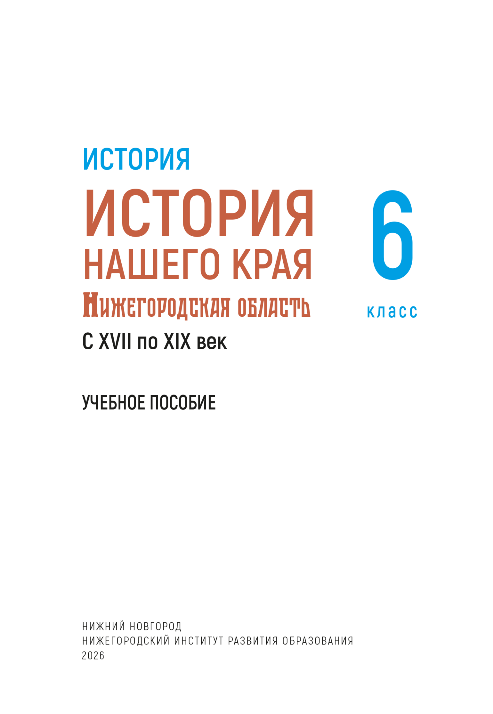
►
УДК 372.016:908
ББК 63.3(2Рос-4Ниж)я72
И90
Авторы
Б. Л. Гинзбург, кандидат исторических наук, доцент,
заведующий кафедрой истории и обществоведческих дисциплин
ГБОУ ДПО «Нижегородский институт развития образования»
Э. С. Иткин, старший преподаватель кафедры теории
и практики воспитания и дополнительного образования
ГБОУ ДПО «Нижегородский институт развития образования»
О. П. Морозова, старший преподаватель
кафедры истории и обществоведческих дисциплин
ГБОУ ДПО «Нижегородский институт развития образования»
Ф. А. Селезнев, доктор исторических наук, профессор кафедры
зарубежного регионоведения и локальной истории,
руководитель Центра краеведческих исследований
Института международных отношений и мировой истории
ФГАОУ ВО «Национальный исследовательский Нижегородский
государственный университет имени Н. И. Лобачевского»
В. К. Романовский, доктор исторических наук, доцент,
старший научный сотрудник кафедры истории
и обществоведческих дисциплин
ГБОУ ДПО «Нижегородский институт развития образования»
Ответственный редактор
С. М. Ледров, кандидат исторических наук, доцент
Рецензенты
Ю. В. Филиппов, доктор педагогических наук,
профессор, кандидат философских наук, генеральный директор
ГБУК НО «Нижегородский государственный
историко-архитектурный музей-заповедник»
И. В. Рыжов, доктор исторических наук, доцент, заведующий
кафедрой истории и политики России Института международных
отношений и мировой истории ФГАОУ ВО «Национальный
исследовательский Нижегородский государственный университет
имени Н. И. Лобачевского»
Е. А. Медведева, учитель истории и обществознания
МБОУ «Школа № 14 имени В. Г. Короленко» Нижнего Новгорода,
почётный работник общего образования Российской Федерации
ISBN 9785-7565-1022-5
© Гинзбург Б. Л., Иткин Э. С., Морозова О. П.,
Селезнев Ф. А., Романовский В. К., 2026
© ГБОУ ДПО «Нижегородский институт
развития образования», 2026
►
Введение
Дорогой друг!
В 5-м классе ты уже познакомился с историей своего края с древнейших времён до конца XVII века. Ты узнал об особенностях его географического положения, о том, какие племена и народы его населяли, чем занимались, во что верили, как осваивали земли, создавали первые поселения и развивали ремёсла, как общались с соседями. Археологические находки, древние артефакты, письменные свидетельства и легенды помогли восстановить и понять картину жизни тех далёких времён.
Ты увидел, что на протяжении веков на территории твоего родного края происходили серьёзные изменения в экономической, политической, социальной жизни. Эти процессы происходили и в других регионах.
К концу XVII века Россия стала крупнейшим государством Евразии. Изучая историю родного края, ты, наверное, уже понял, что главное богатство её истории — многовековой опыт совместного созидательного труда представителей разных народов во имя общего блага, дружба, любовь и бережное отношение к своей Родине.
В этом учебном году ты продолжишь увлекательное путешествие по страницам прошлого родного края. Тебе предстоит познакомиться с очень важным периодом в истории нашей страны, когда большая часть территорий и народов, на них проживающих, уже были объединены в единое государство — Российскую империю. В это время в истории России произошли масштабные изменения, страна пережила множество важных событий, которые повлияли не только на развитие государства в целом, но и на жизнь каждого региона.
В XVIII веке, благодаря реформам Петра I и Екатерины II, Россия превратилась в мощную евразийскую империю, вышла на мировую арену и стала одной из ведущих европейских держав. Основывались новые города, активно развивались наука, культура и промышленность. ►
В XIX веке наша страна столкнулась с новыми вызовами: Отечественная война 1812 года, Великие реформы 1860-х годов, промышленный переворот. В начале XX века Россия стала участницей Первой мировой войны.
Ты узнаешь, как жил и развивался твой родной край в этот исторический период, какие занятия были основными для населявших его людей, как они взаимодействовали с соседними территориями и какое влияние на их повседневную жизнь оказывали общегосударственные процессы. Наша страна активно расширяла свои границы, развивала экономику и культуру, в ней осуществлялись важные социальные реформы. И при этом каждый регион развивался по-своему, сохранял свою уникальную культуру и языки, внося важный вклад в укрепление общего государства.
Объединение усилий всех народов, живущих бок о бок на территории России, способствовало решению даже самых сложных проблем. Это единство служит прочным фундаментом, на котором стояла, стоит и будет стоять наша страна — Россия.►
КАК РАБОТАТЬ С УЧЕБНым пособием
Учебное пособие состоит из четырех глав, включающих 16 параграфов. Термины, которые могут быть непонятны, выделены полужирным курсивом. Их значение можно узнать в конце параграфа в «Историческом словаре». Наиболее важные имена, термины, выводы, даты параграфа размещены в разделе «Обратите внимание». В пособии представлены карты, фрагменты исторических источников, репродукции картин, фотографии. В начале каждого параграфа перечислены упоминаемые в нём важные события, личности, географические объекты. Все даты до февраля 1918 года даны по старому стилю.
В каждом параграфе содержатся обобщающие фрагменты, раскрывающие связь событий, происходивших в Нижегородском крае, с общим ходом исторического процесса в России. Эти фрагменты вплетены в единую ткань изложения, поскольку нижегородская история в данный период тесно связана с общероссийской и является её естественной частью.
После некоторых параграфов приводятся отрывки из исторических источников. Тексты используемых исторических источников переведены на современный русский язык.
При работе с историческим источником, картами, анализе деятельности исторической личности, при составлении аргументированного высказывания тебе помогут памятки.
Вопросы и задания после параграфа имеют как базовый уровень, так и углублённый (они выделены знаком «*»), чтобы ты мог проверить свои фактические знания (о событиях, явлениях, исторических деятелях, датах, терминах). С помощью этих заданий ты научишься сравнивать исторические события, выделять главное в тексте, делать выводы, составлять рассказы и планы ответов, совершенствовать свои навыки в проектно-исследовательской деятельности.
Задания для итогового повторения даются после каждой главы. К ним надо будет отнестись с особым вниманием. В конце учебного пособия представлены ссылки на интернет-ресурсы. Поработать с новой информацией, ответить на вопросы и выполнить задания можно самостоятельно. ►
Творческие, проектные и исследовательские задания сориентируют на активное взаимодействие с одноклассниками и родителями. И это, мы надеемся, сделает ещё более увлекательным изучение курса краеведения.
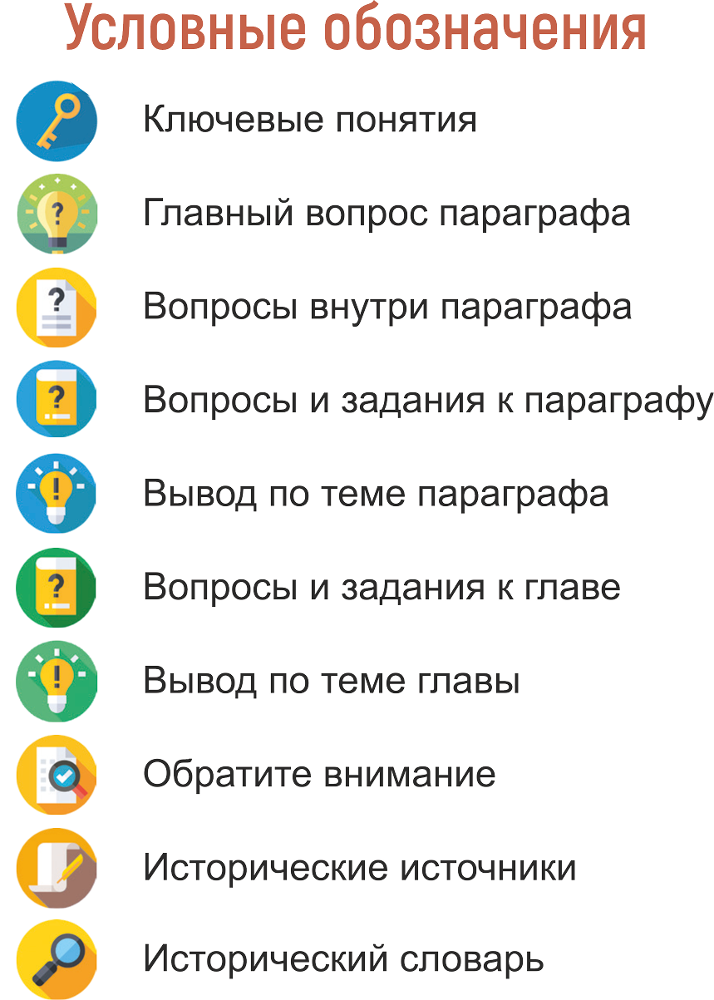
В добрый путь, дорогой друг!
►
Глава I
НИЖЕГОРОДСКИЙ КРАЙ В XVII ВЕКЕ
Нижний Новгород в XVII веке. Рисунок Адама Олеария
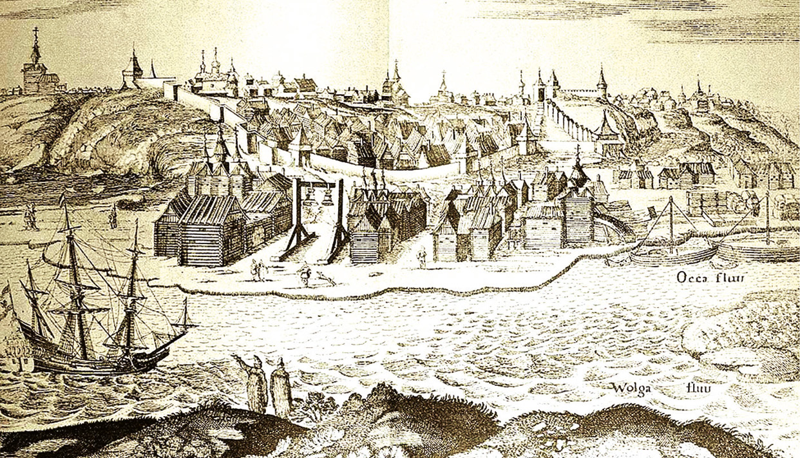
В начале XVII века Россия пережила ужасное время Смуты — гражданской войны. Одной из её причин стало вмешательство внешних врагов — поляков и шведов. Смута сильно ослабила страну. Россия находилась на пороге гибели. В спасении страны огромную роль сыграли нижегородцы. Они же внесли большой вклад в возрождение Отечества, преодолев разруху и запустение. Из этой главы вы узнаете, как после Смутного времени Нижний Новгород стал крупным торговым и промышленным центром, украсился каменными зданиями. Особое внимание будет уделено новым явлениям в развитии хозяйства и культуры нашего края, а также истории Балахны, Арзамаса, Городца, Павлова. Отдельная важная тема, затронутая в главе, — повседневная жизнь нижегородцев.
►
§ 1
Нижегородцы и преодоление Смуты
Минин и Пожарский
Художник М. И. Скотти. 1850
Нижегородский государственный художественный музей
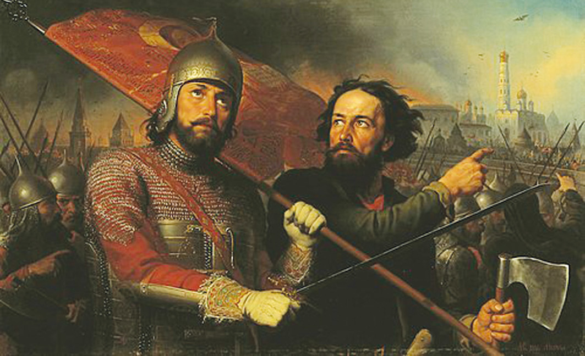
|
|
Почему именно Нижний Новгород стал центром спасения России в Смутное время и каков вклад Минина и Пожарского в преодоление национальной катастрофы? |
1. Нижегородский край в начале Смуты.
2. Смутное лихолетье в Нижегородском крае в 1608—1611 годах.
3. Создание Нижегородского ополчения. Минин и Пожарский (1611 год).
4. Нижегородское ополчение и освобождение Москвы. Происхождение Дня народного единства.
5. Памятные места Нижнего Новгорода и Нижегородской области, связанные с ополчением под руководством Минина и Пожарского
● 1611 год
● Ходкевич
● Троице-Сергиев монастырь
● Кузьма Минин
● Земский староста
● Савва Ефимьев
● Дмитрий Михайлович Пожарский
►
1 Нижегородский край в начале Смуты.
|
|
Вспомните, как называется главная площадь Нижнего Новгорода. Как вы считаете, почему она так называется? |
В начале XVII века Россия пережила ужасное время Смуты — гражданской войны. Произошли необычные изменения в погоде. В 1601 году с 1 сентября начались снегопады. Урожай был погублен. В 1602 году мороз грянул летом и побил рожь во время цветения. В результате в Москве и Нижнем Новгороде хлеб подорожал в 25 раз. Начался голод. Он затронул и Нижегородский край, в частности территорию современных Павловского, Сосновского и Богородского районов, где запустели целые сёла и деревни.
Ослаблением России, вызванным голодом и внутренними неурядицами, воспользовались внешние враги. В 1604 году из Польши в русские пределы вторгся с войском самозва́нец, выдававший себя за сына Ивана Грозного царевича Дмитрия. (На самом деле царевич Дмитрий погиб в 1591 году.)
Лжедми́трию удалось на целый год занять русский трон. Но бесчинства поляков из его окружения вызвали возмущение москвичей. В Москве вспыхнуло народное восстание, в ходе которого Лжедмитрий I был убит. Москвичи провозгласили царем потомка нижегородских князей Василия Ивановича Шуйского.
Между тем на окраинах страны пошёл слух о том, что Лжедмитрий жив. Из Польши в Россию прибыл Иван Болотников, назвавший себя «воеводой царя Дмитрия».
Василий Шуйский
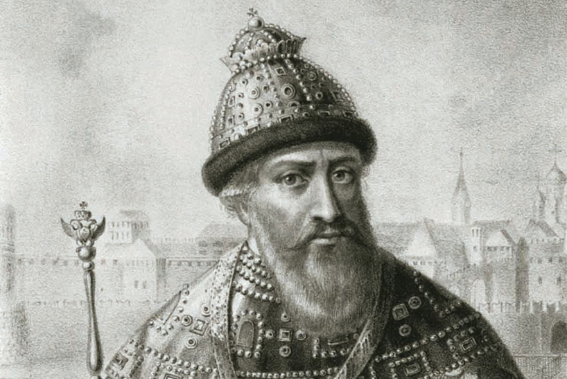
►
Осенью 1606 года сторонники Болотникова подошли к Нижнему. Но здесь нашла коса на камень. Благодаря мужеству горожан нижегородская твердыня выдержала натиск мятежников. Взять его они не смогли. В тяжёлую годину испытаний Нижегородский край показал себя прочной опорой Москвы и царя Василия Шуйского.
2 Смутное лихолетье в Нижегородском крае в 1608—1611 годах. Несмотря на разгром Болотникова, Смута продолжилась. Поляками был выдвинут новый самозванец, выдававший себя за царевича Дмитрия. Он вошёл в историю как Лжедмитрий II. Со всех сторон к самозванцу стекались разбойники и любители легкой наживы. Весной 1608 года войска Лжедмитрия II разделились на две армии и двинулись к Москве, чтобы взять её в кольцо. Одна из армий Лжедмитрия шла на Москву через Коломну. Путь к Коломне прикрывала крепость Зарайск. На помощь Зарайску прибыл отряд из Арзамаса. Все его бойцы полегли в битве под Зарайском 30 марта 1608 года. Гибель арзамасских героев была не напрасной. Враг был ими задержан и ослаблен. Москва избежала окружения.
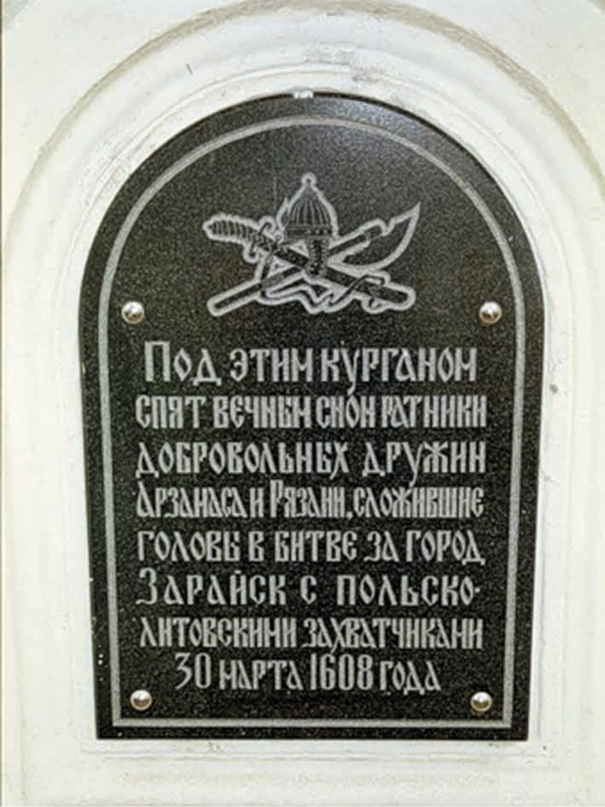
Памятная доска в Зарайске
в честь ратников-арзамасцев
►
Не сумев взять Москву, Лжедмитрий II расположился неподалёку от столицы, в селе Ту́шино. Поэтому его прозвали Тушинским вором. Осенью 1608 года Тушинскому вору начали присягать разные города — одни неволею, другие, будучи застигнуты врасплох или увлечены чужим примером. Поддались соблазну и Балахна с Арзамасом. Со всех сторон на Нижний Новгород напирали тушинцы.
Выдающуюся роль в защите города в ноябре — декабре 1608 года сыграл воевода Андрей Семёнович Аля́бьев. Ведомые Алябьевым отряды изгнали тушинцев из нижегородских пределов и освободили Муром и Владимир.
После разгрома Тушинского вора поляки начали открытую интервенцию. В июле 1610 года русское войско потерпело от них сокрушительное поражение. После этого заговорщики-бояре заставили Василия Шуйского отречься от престола и стать монахом. Семибоярщина (правительство, сформированное заговорщиками) пригласило в Москву польский отряд.
Глава Русской православной церкви патриа́рх Гермоген отказался поддержать Семибоярщину. Он начал рассылать грамоты в разные города, в которых писал о необходимости освободить Москву от поляков. Одна из таких грамот была доставлена в Нижний Новгород.
Нижегородцы сообщили о призыве патриарха в Кострому, Галич, Вологду, Рязань. Первым на призыв откликнулся рязанский воевода Прокопий Ляпуно́в. Этот энергичный и решительный военачальник быстро собрал войско. Так возникло Первое ополчение.
Не сумев освободить Москву сходу, Первое ополчение начало её осаду. Но скоро внутри ополчения начались распри между каза́ками и дворянами, подогреваемые польскими лазутчиками. В результате Прокопий Ляпунов был убит казаками. Ополчение быстро слабело. Поляки же наседали. Польское войско захватило Смоленск. Настал самый тяжёлый час Смутного времени.
3 Создание Нижегородского ополчения. Минин и Пожарский (1611 год). В сентябре 1611 года к Москве подошёл польский полководец Ходке́вич. Руководителям остатков Первого ополчения пришлось туго. ►
По их просьбе власти Троице-Сергиева монастыря, ранее прославившегося героической борьбой против сторонников Тушинского вора, отправили грамоты в разные города. В них они просили присылать войска к Москве. Но только в Нижнем Новгороде на призыв монастырских старцев откликнулись всем миром и сумели собрать большое войско, спасшее Отечество. Главная заслуга в этом принадлежит Кузьме Минину.
По распространенной версии Кузьма Минин родился в Балахне, в семье торговца солью, а потом переехал в Нижний Новгород. Рассказывая о роде занятий Минина, источники именуют его говяда́рь. Так на Руси называли скупщика крупного рогатого скота. Минин отличался религиозностью и добрым нравом. Земляки уважали Кузьму Минина и в августе 1611 года избрали его земским старостой.
Минин предложил прочесть грамоту из Троице-Сергиева монастыря перед народом. Его поддержал протопо́п Спасо-Преображенского собора Савва Ефимьев. Дальше Кузьма Минин обратился к людям с призывом жертвовать средства для снаряжения ополчения и сам выделил на общее дело 2/3 своего имущества.
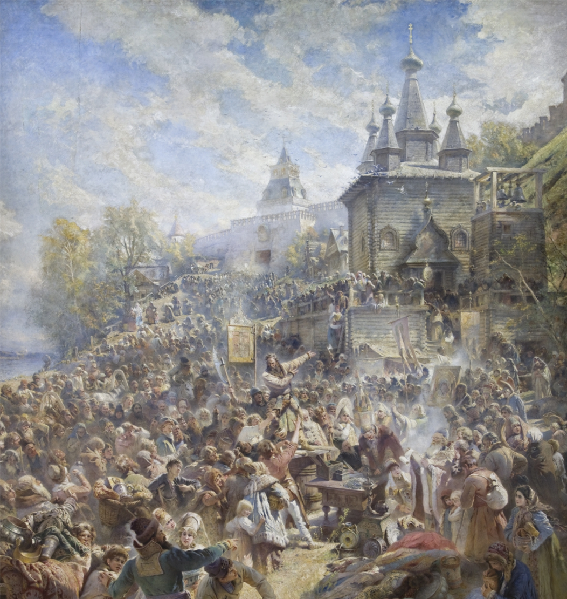
Воззвание Минина
к нижегородцам
Художник К. Е. Маковский
1896
Нижегородский
государственный
художественный музей
►
Очень крупную сумму дали солепромышленники Стро́гановы.
Деньги для ратных людей были быстро собраны. Только вот самих воинов, готовых идти освобождать Москву, в наличии не было.
В начале XVII века ратный труд являлся уделом профессионалов. Для овладения приёмами боя требовались годы упорных занятий. Поэтому, прежде всего, было необходимо найти опытных в военной службе людей. Но закалённых воинов в Нижнем Новгороде осталось мало. Многие нижегородские дворяне и стрельцы уже сложили головы в боях с тушинцами и поляками.
Поэтому Кузьма Минин позвал в Нижний Новгород бывших защитников Смоленска, нашедших временный приют в Арзамасе. Они составили основу ополчения.
Теперь нужно было найти начальника для войска. В этом качестве решили пригласить участника Первого ополчения князя Дмитрия Михайловича Пожарского. Князь имел славу опытного воина и репутацию верного слову человека. В это время он находился в своем родовом имении — селе Мугреево (сейчас Мугреево-Никольское Ивановской области).
Нижегородские
послы у князя
Дмитрия Пожарского
Художник В. Е. Савинский
1881
Краснодарский краевой художественный музей имени Ф. А. Коваленко
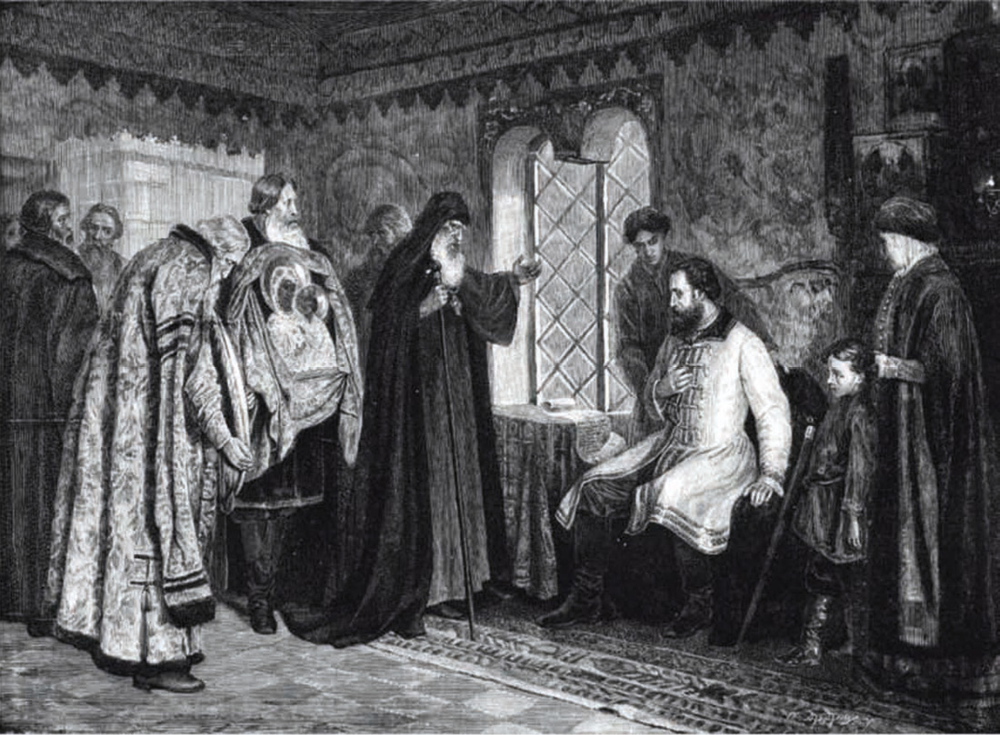
►
Здесь Пожарский залечивал тяжёлые раны, полученные в ходе неудачной попытки Первого ополчения освободить Москву от поляков. Сюда и приехали посланцы из Нижнего Новгорода.
Сильная боль не давала Дмитрию Михайловичу ходить. Поэтому Пожарский вполне мог отговориться нездоровьем от опасного предложения нижегородцев. Ведь оно влекло его в пучину грозящих гибелью приключений, где сложить голову было легче легкого. Но Пожарский был смелым воином. Ему ли было лежать на печи, когда поруганы храмы, а враг в Москве?
Около середины ноября 1611 года Пожарский прибыл в Нижний Новгород. Нижегородцы встретили его с почестями.
4 Нижегородское ополчение и освобождение Москвы. Происхождение Дня народного единства. Минин и Пожарский решили направиться к Москве через Ярославль. Это позволяло привлечь новые подкрепления со всего Севера.
Путь Второго народного ополчения
под предводительством Кузьмы Минина и Дмитрия Пожарского
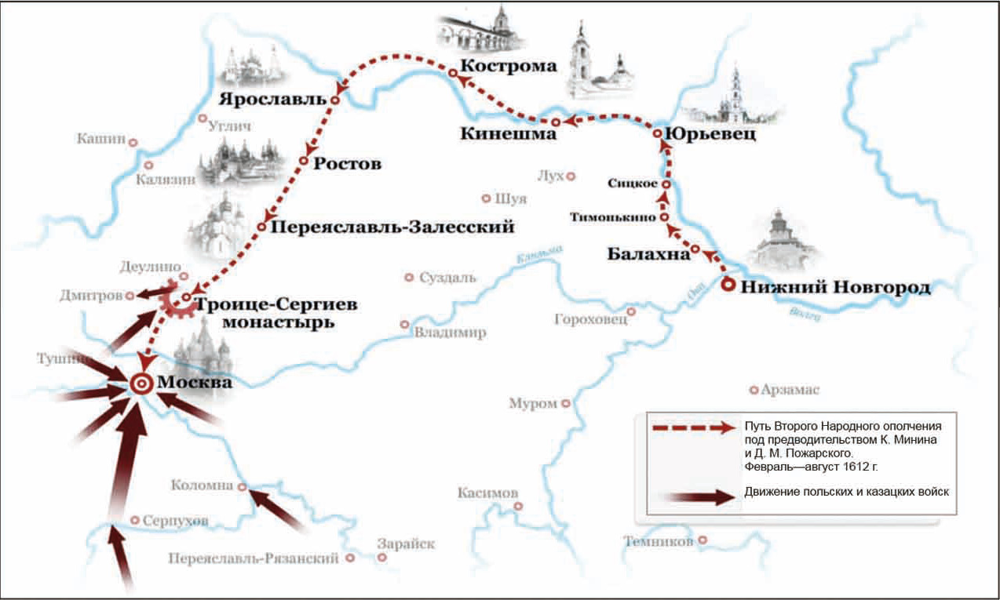
►
Отряды ополченцев покинули Нижний Новгород в конце февраля 1612 года.
Ополчение вышло из Ивановской башни кремля. В наше время на ней в честь этого события установлена памятная доска. По льду ополченцы перешли к Стрелке и по правому берегу Волги отправились в Балахну, а оттуда вверх по Волге к Ярославлю. Везде войско Минина и Пожарского принимали с радостью. В ополчение вливались местные отряды.
В середине марта 1612 года Минину и Пожарскому с ликованием открыл ворота Ярославль. Здесь силы ополчения ещё более выросли.
Накопив силы в Ярославле, Минин и Пожарский в июле 1612 года решили идти на Москву. Тем более что до них дошло известие о приближении к столице гетмана Ходкевича с подкреплениями для польского гарнизона и обозом продуктов.
19 августа 1612 года ополчение подошло к Москве, опередив Ходкевича. Оно соединилось с остатками казачьих отрядов Первого ополчения, которыми руководил князь Д. Т. Трубецкой.
Сражение против Ходкевича продолжалось три дня — 22, 23 и 24 августа 1612 года.
Изгнание поляков из Кремля в 1612 году
Художник Э. Лисснер. 1907
Музей истории и реконструкции Москвы
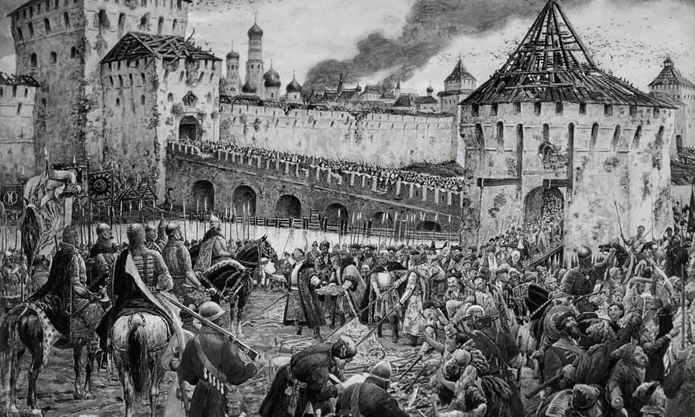
►
Наступил вечер 24 августа. Пожарский был ранен и решил закончить на сегодня военные действия. Дмитрий Михайлович видел, что и остальные воины измотаны многочасовым боем и еле стоят на ногах. Неугомонный Минин, однако, думал, что нужно организовать вечернюю атаку на врага. Кузьма попросил князя дать ему отряд, с которым он намеревался атаковать поляков, и получив его, двинулся на неприятеля.
В сумерках ополченцы перешли Москву-реку. У берега стояла вражеская рота из конных и пеших воинов. Минин направил свой отряд прямо на неё. Враги увидели мчащихся из вечерней мглы русских конников и, не вступая в бой, обратились в бегство. Они устремились к лагерю. Там началась паника. Разгром поляков был полный. Враги бросили обоз и побежали. Понеся огромные потери, Ходкевич увел остатки своей армии в Литву.
После победы над Ходкевичем Пожарский приступил к осаде Кремля. И вот настал долгожданный миг — 22 октября 1612 года. В этот день две части осаждавшей Кремль русской рати: ополченцы Минина и Пожарского и казаки Трубецкого, прежде соперничавшие и даже враждовавшие, — совместными усилиями отбили от поляков Китай-город.
После потери этого важного узла обороны польскому гарнизону Кремля ничего не оставалось, как сдаться. 26 октября 1612 года поляки подписали договор о капитуляции, а на другой день сложили оружие.
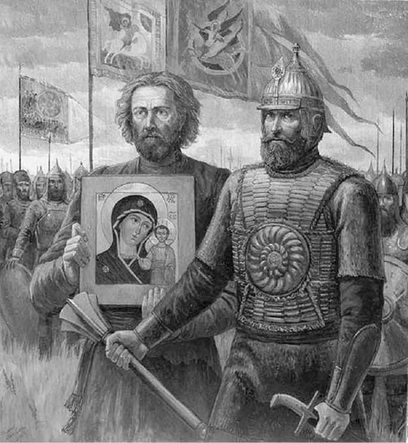
Гражданин Кузьма Минин
и князь Дмитрий Пожарский. 1612 год.
Художник Ф. А. Москвитин
2009
Музей истории города Иркутска
►
Таким образом, победу над захватчиками предопределили события, произошедшие 22 октября (4 ноября по современному календарю). Минин, Пожарский и Трубецкой в этот день показали, что во имя спасения Отечества можно отбросить гордыню и договориться. В память об этом 4 ноября в России с 2005 года отмечают День народного единства.
22 октября ополченцев вдохновляла на бой находившаяся в их стане Казанская икона Божьей Матери. Праздник в честь неё приходился на 8 июля, а после этой победы его стали отмечать ещё и 22 октября (4 ноября).
|
|
На картине художника Ф. А. Москвитина Кузьма Минин держит в руках Казанскую икону Божьей Матери. Предположите, почему художник изобразил Минина с этой иконой. |
Таким образом, теперь в России на один день, 4 ноября, приходятся два праздника. Один церковный, а другой государственный. Оба они имеют общие исторические корни и связаны своим происхождением со славными деяниями наших предков-нижегородцев.
5 Памятные места Нижнего Новгорода и Нижегородской области, связанные с ополчением под руководством Минина и Пожарского. В начале XIX века жители Нижнего Новгорода решили установить памятник Минину и Пожарскому. Его проект создал Иван Петрович Ма́ртос, профессор Академии художеств. Нижегородцы стали собирать деньги на возведение монумента. Подключились и жители других губерний. Не остался в стороне и царь. Александр I лично пожертвовал крупную сумму. Между тем памятник оказался столь привлекателен, что правительство решило поставить его в Москве. Теперь он украшает Красную площадь.
А в Нижнем Новгороде предписали соорудить более скромный обелиск. На это употребили средства, собранные непосредственно в Нижнем Новгороде. По эскизам И. П. Мартоса отлили бронзовые позолоченные барельефы Минина и Пожарского, украсившие подножие обелиска. ►
Основная его часть была сделана из карельского гранита. В 1828 году обелиск был торжественно открыт. Он стал первым памятником в истории Нижнего Новгорода.
В начале XXI века скульптор Зураб Церетели по просьбе правительства Москвы сделал копию памятника на Красной площади. Этот монумент был торжественно открыт в Нижнем Новгороде 4 ноября 2005 года. Он стал центром новой площади, названной в честь только что учрежденного государственного праздника — Дня народного единства. Табличка на постаменте скульптурной композиции сообщает, что это дар нижегородцам от москвичей с благодарностью за подвиг во имя спасения Отечества.
10 марта 1942 года во время Великой Отечественной войны главную площадь города Горького, которая тогда называлась Советской, переименовали в площадь Минина и Пожарского. На ней решили поставить памятник Кузьме Минину. Его проект создал скульптор А. И. Колобов.
Постамент был сложен из кирпичей и оштукатурен. Фигуру легендарного земского старосты в целях экономии нужных для фронта цветных металлов выполнили из железобетона и покрасили под бронзу.
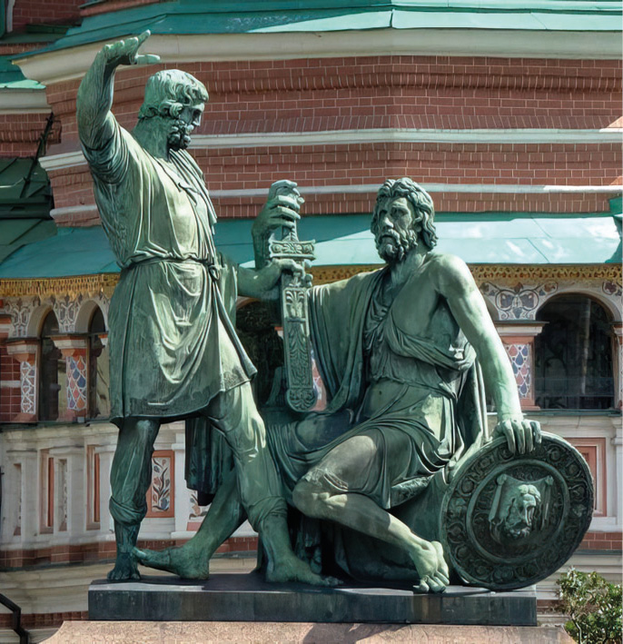
Памятник Минину и Пожарскому
на Красной площади в Москве
Скульптор И. П. Мартос
1818
►
Поскольку монумент был выполнен из недолговечных материалов, со временем он стал разрушаться. В 1985 году его демонтировали. На этом месте с 1989 года стоит памятник, выполненный скульптором О. К. Комовым. Ну а старый памятник в разобранном виде отвезли в Балахну, где, как считается, родился герой. По оставшимся фрагментам была проведена выковка фигуры Минина из меди. Этот сразу полюбившийся балахнинцам монумент установили 16 сентября 1991 года. Площадь в Балахне, где находится памятник, получила имя Кузьмы Минина. Там же открыт Музей Кузьмы Минина.
Прах народного героя ныне покоится в Михайло-Архангельском соборе Нижнего Новгорода, который является храмом-памятником подвигу Нижегородского ополчения.
Памятка
Как работать с историческим источником
1. Прочитайте исторический текст.
2. Узнайте, как называется источник.
3. Определите, когда он был создан.
4. Вместе с учителем выделите незнакомые слова и «переведите» их.
5. Найдите в тексте исторические факты.
6. Вместе с учителем «переведите» историческую информацию.
7. Выделите идею, имеющую креативную ценность (оригинальность и новизну).
|
|
Знакомимся с историческим источником |
Рассказ о приглашении смолян из Арзамаса
в Нижний Новгород (отрывок из «Повести
о победах Московского государства»)
Бысть же в Нижнем Нове граде некий муж благолюбив и добросмыслен… именем Козма Минин, от посацкого чина земским [старостой] почтен бысть в Нижнем граде. ►
Той бо Козма издавна слышав про храбрость смоленскую и про мужество дворян града Смоленска, колико помощи Московскому государству учиниша, государю верно послужиша…
Слышав же яко смольяне в Арзамасе, близ Нижнева Нова града, и многою радостью возрадовася. Созвав же всех нижегородцев и нача доброумными своими словесы глаголати к ним, рекуще: «О братие и друзи, вси нижегородстии народы! Что сотворим ныне, видяще Московское государство в велицем раззорении? Откуду себе чаем помощи и заступления граду нашему, разве милости Божьей? Видихом братие многих градов Российского государства разорение и православных христиан побиение и жен их и чад в плен ведение, и всего богатства их лишение. И совет даю вам, братия моя, аще словес моих и послушаете: да призовем себе в Нижнем Нове граде храбрых и мужественных воин Московского государства, достоверных дворян града Смоленска, ныне бо они близ града нашего, в арзамастех местех.
Людие же Нижнево Нова града вси похвалиша доброй его совет и поединогласно глаголюще: «И добро есть нам тако сотворити, единоверных призывати нежели от иноверных наития в разорении быти».
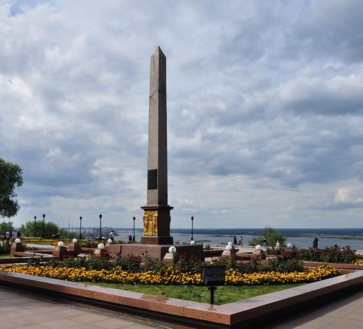
Обелиск Минину и Пожарскому
в Нижегородском кремле
Скульптор И. П. Мартос
1828
►
И послаша к смольянам из Нижнего Нова града в Орзамас с великою честию, и начаша призывати их, дабы шли в Нижней нов град и обеща им дати денежные оброки, кормовые запасы, еже есть годно им на потребу.
Смольяне же, послушав Козмина доброприветного совета, из Арзамаса в Нижней Нов град приидоша генваря в 6 день, на праздник Богоявления Господня.
Подведём итоги
Центром борьбы за независимость от польско-литовских интервентов стал Нижний Новгород. Земскому старосте Кузьме Минину и князю Дмитрию Михайловичу Пожарскому удалось не только создать народное ополчение, но и, объединив все патриотические силы, изгнать интервентов из Москвы и организовать выборы законного русского царя, основателя новой династии, которая правила Россией три последующих столетия.
Все представители династии Романовых помнили, что именно из Нижнего Новгорода пришло освобождение Москвы от интервентов и что это способствовало приходу к власти Михаила Романова в 1613 году.
Памятник Минину и Пожарскому на площади Народного единства в Нижнем Новгороде
Скульптор И. П. Мартос,
копия памятника З. К. Церетели
2005
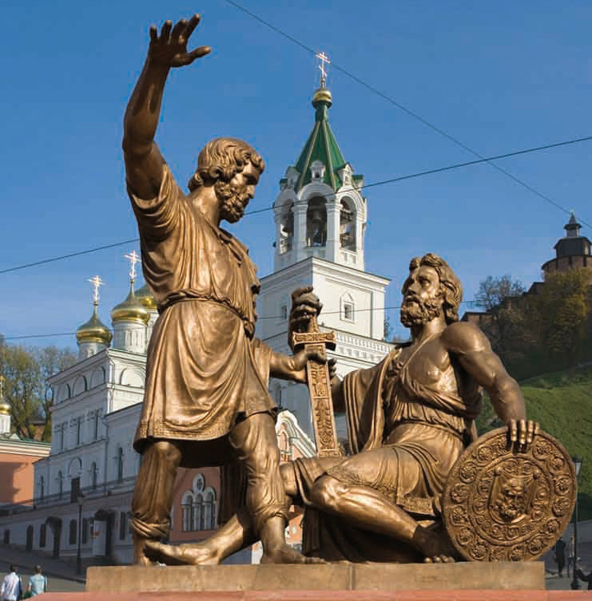
►
|
|
Исторический словарь |
Говяда́рь — скупщик крупного рогатого скота.
Патриа́рх — глава Русской православной церкви.
Протопо́п — настоятель собора.
|
|
Обратите внимание |
Андрей Семенович Алябьев — нижегородский воевода, защитивший город от войск Лжедмитрия II.
Кузьма Минин — нижегородский земский староста, организатор народного ополчения, освободившего Москву от поляков.
Дмитрий Михайлович Пожарский — военный руководитель народного ополчения, освободившего Москву от поляков.
Савва Ефимьев — настоятель Спасо-Преображенского собора, поддержавший призыв Минина.
1612 год, февраль — народное ополчение под руководством Минина и Пожарского отправилось из Нижнего Новгорода на освобождение Москвы.
|
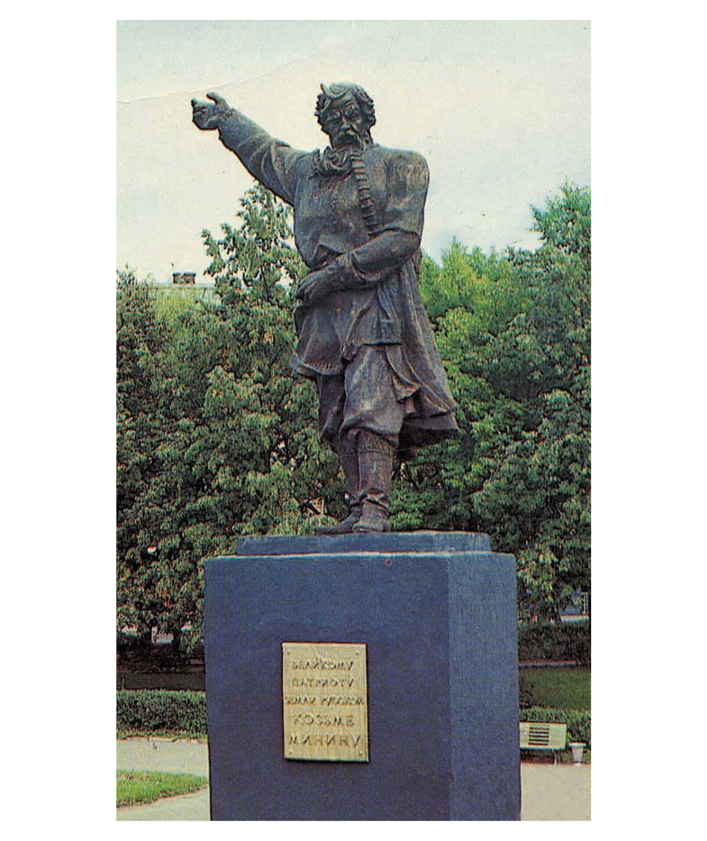 |
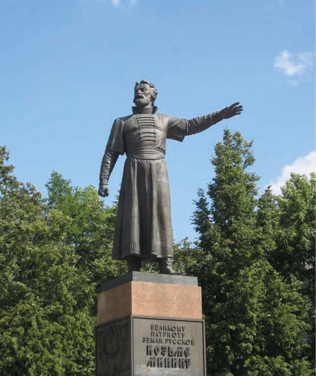 |
|
● Памятник Кузьме Минину Скульптор А. И. Колобов 1943 |
● Памятник Кузьме Минину Скульптор О. К. Комов 1989 |
►
1612 год, 22—24 августа — победа Народного ополчения под руководством Минина и Пожарского над войском польского военачальника Ходкевича под Москвой.
4 ноября — День народного единства, учреждённый в память освобождения Москвы от поляков народным ополчением под руководством Минина и Пожарского.
|
|
Сформулируйте вывод по теме параграфа, приведите два аргумента. |
|
|
Вопросы и задания |
1. Почему Зарайск является побратимом Арзамаса?
2. Какую должность занимал Кузьма Минин осенью 1611 года? Почему нижегородцы поддержали его призыв?
3. Прочитайте текст источника и назовите дату прихода смолян в Нижний Новгород по приглашению Кузьмы Минина.
4. Чем руководствовались руководители ополчения, направляясь освобождать Москву дальней дорогой через Ярославль?
5*. Перечислите в тетради памятные места (памятники, памятные знаки и др.) в Нижегородской области, связанные с историей народного ополчения под руководством Минина и Пожарского, улицы и площади, названные их именами.
6. Почему нижегородцы, в XIX веке собрав необходимую сумму денег для сооружения памятника Минину и Пожарскому, так и не получили его и были вынуждены довольствоваться скромным обелиском в кремле в честь героев Смутного времени? Когда Нижний Новгород всё-таки получил копию памятника И. П. Мартоса? Где она установлена?
|
|
Составьте небольшой устный рассказ с использованием дат, личностей, терминов, помещённых в начале параграфа. |
►
§ 2
Хозяйственное развитие Нижегородского края
в XVII веке
Макарьевский монастырь
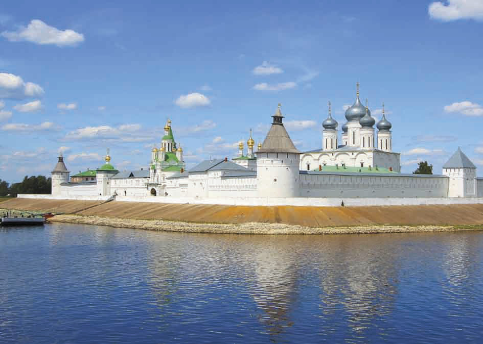
|
|
Почему в XVII веке Нижегородский край из территории, пережившей Смуту, превратился в крупнейший торгово-промышленный центр России? |
1. Предприниматели и ремесленники Нижнего Новгорода.
2. Промышленно-торговые центры Нижегородского края: Балахна, Арзамас, Городец, Павлово.
3. Б. И. Морозов и организация поташного производства.
4.Рождение Макарьевской ярмарки.
● Торговля солью
● Г. Д. Строганов
● Клим Калмыков
● Прядильный промысел
● Семен Задорин
● Мануфактура
● Братья Пушниковы
►
1 Предприниматели и ремесленники Нижнего Новгорода в XVII веке.
|
|
Как вы думаете, чем предприниматель отличается от ремесленника? |
В XVII веке в жизни Нижнего Новгорода произошли большие перемены. С присоединением Казанского и Астраханского ханств к Московскому царству Нижний из пограничного стал внутренним городом. Удобное положение при слиянии двух больших судоходных рек — Оки и Волги — способствовало развитию Нижнего Новгорода как крупного торгового центра.
Нижегородский торг располагался на Нижнем посаде, в районе современной площади Народного единства. Для приезжих купцов здесь возвели Гостиный двор. Рядом разместились пристани и склады для привозимых в Нижний Новгород товаров. Особенно много сюда поступало соли, которая тогда очень ценилась.
|
|
Как вы думаете, почему в те времена, когда не было холодильников, соль ценилась больше, чем сейчас? |
Водным путём соль доставляли с Урала по реке Каме, а также из низовий Волги. Главными поставщиками камской соли по всей России являлись знаменитые предприниматели Строгановы. Глава этого рода, Григорий Дмитриевич Строганов, во второй половине XVII века поселился в Нижнем Новгороде. Его загородная усадьба располагалась в Гордеевке, а многочисленные дома, склады и торговая контора — в районе современной улицы Рождественской. Строганов украсил наш город двумя прекрасными храмами.
|
|
Узнайте, какие церкви в Нижнем Новгороде были построены солепромышленником Г. Д. Строгановым. |
Нижний Новгород XVII века являлся одним из крупнейших ремесленных центров России. Судя по Писцовой книге 1621—1622 годов, его жители владели 119 специальностями. Для сравнения: среди москвичей в то же время было зафиксировано 250 видов ремёсел, а в таком значительном городе, как Псков, — 65. ►
Больше всего в Нижнем Новгороде жило кузнецов, плотников и кожевников.
Нижегородские плотники строили не только дома, но и корабли. Суда в Нижнем Новгороде не только строились, но и оснащались всем необходимым, в том числе канатами и верёвками, которые прялись здесь же. Пряди́льный промысел в середине XVII века получил особое развитие среди жителей слободы Благовещенского монастыря. Высокое качество и дешевизна нижегородских корабельных снастей славились по всей Волге. В конце XVII века крупнейшим в России производителем канатов стал крестьянин Благовещенской слободы Клим Калмыко́в.
Значительное развитие в Нижнем Новгороде получило кожевенное производство. В 1645 году московские купцы Семен Задорин и Василий Шорин основали в нашем городе первую крупную кожевенную мануфакту́ру (она разместилась в четырёх избах).
Наладить в Нижнем Новгороде крупное кожевенное производство удалось также нижегородцам — братьям Ивану, Митрофану и Якову Пушниковым.
Их красивый дом вы видите на фотографии. Пушниковы поставляли государству ремни для конской упряжи, выделывали кожи для изготовления обуви. Их товар пользовался спросом не только в России — он продавался и в Западную Европу.
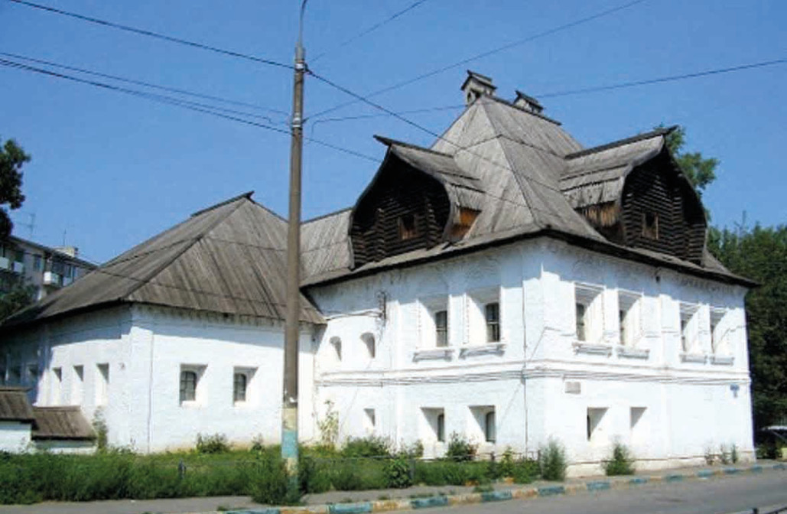
Палаты Пушниковых
Улица Гоголя, 52
►
2 Промышленно-торговые центры Нижегородского края: Балахна, Арзамас, Городец, Павлово. Помимо Нижнего Новгорода значительными торгово-промышленными центрами в XVII веке стали ещё несколько городов и сёл.
Балахна. В документах этого времени упоминаются 42 вида ремёсел, которыми владели жители Балахны. Ведущее место среди них принадлежало занятиям, связанным с соля́ным промыслом — добычей соли. Балахна снабжала солью всю округу. По Волге балахнинскую соль довозили до Ярославля, а по Оке — до Рязани.
Кроме солеваре́ния, в XVII веке в Балахне существовали и другие промыслы. Жители города делали качественный кирпич. Развитию этого промысла способствовало наличие здесь высокосортных глин. Балахнинский кирпич использовался при возведении храмов и ремонте Нижегородского кремля. Со второй половины XVII века в Балахне было налажено производство изразцо́в.
Арзамас. В XVII столетии быстро рос Арзамас. В 1623 году в городе было 433 двора, а к середине XVII века в нём насчитывалось уже 976 дворов. Арзамасцы владели 59 ремесленными специальностями.
Добыча соляного раствора в Балахне
Рисунок
М. А. Шишкиной
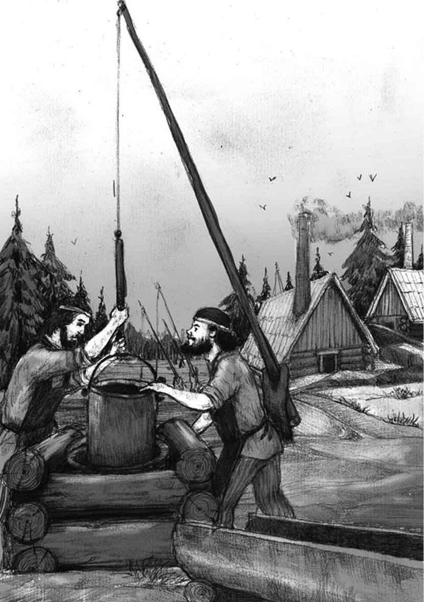
►
Общероссийскую известность получили арзамасские кожевенники. Они славились выделкой ю́фти.
В XVII веке в Арзамасе расцвёл золотошвейный промысел. Его главным центром стал Алексеевский женский монастырь, основанный в 1634 году. Монахини вышивали золотыми и серебряными нитями церковные одежды, украшали иконы золо́тным шитьём, жемчугом, фольгой и цветами.
Городец. В XVII веке возродился Городец. Но не как город, а как совокупность нескольких поселений. Там жили искусные мастера.
|
|
Вспомните, в каком веке Городец был разорён, пришёл в запустение и превратился в село. |
Широко славились своей добротностью изделия городецких плотников. Срубы изб они в разобранном виде сплавляли в разные волжские города. Кроме того, городчане умели строить прочные и быстроходные речные суда. Документы XVII века упоминают также трудившихся в городецких слободах и деревнях кожевенников и мыловаров. Из Городца мыло в Москву отправляли возами.
Особым спросом пользовались городецкие фигурные пряники с разнообразными начинками и хрустящей сладкой поли́вой, не черствевшие многие месяцы. Городецкие пряники славятся до сих пор.
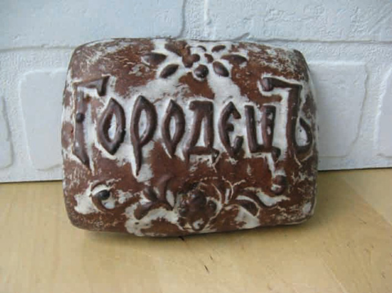
Городецкий пряник
►
Павлово. С XVI века Павлово было острогом у перевоза через Оку, который охраняли стрельцы и казаки. Стрельцы могли в свободное время беспошлинно заниматься ремёслами и торговлей. Среди них имелись мастера, умевшие чинить старые ружья и делать новые. С тех давних времён павловчане известны своим искусством в работе с металлом.
К середине XVII века село Павлово по числу дворов (700) превосходило многие города. Здесь процветали разные ремёсла, и среди них — кузнечное. Число кузниц постоянно увеличивалось. В 1621 году их было 11, а в 1677-м — 38.
Сначала местные ремесленники специализировались только на ружьях. О высоком авторитете павловских оружейников свидетельствует тот факт, что их продукция поставлялась в Оружейную палату. Затем стали делать замки и ножи, хорошо расходившиеся на торге, возникшем у перевоза через Оку. Самое раннее упоминание о павловских замках относится к 1621 году, а первое известие о здешних мастерахножовщиках — к 1642-му.
3 Б. И. Морозов и организация поташного производства. Огромную роль в хозяйственном развитии Нижегородского края в XVII веке сыграл боярин Борис Иванович Морозов — воспитатель, а потом ближайший советник царя Алексея Михайловича.
Поташное производство
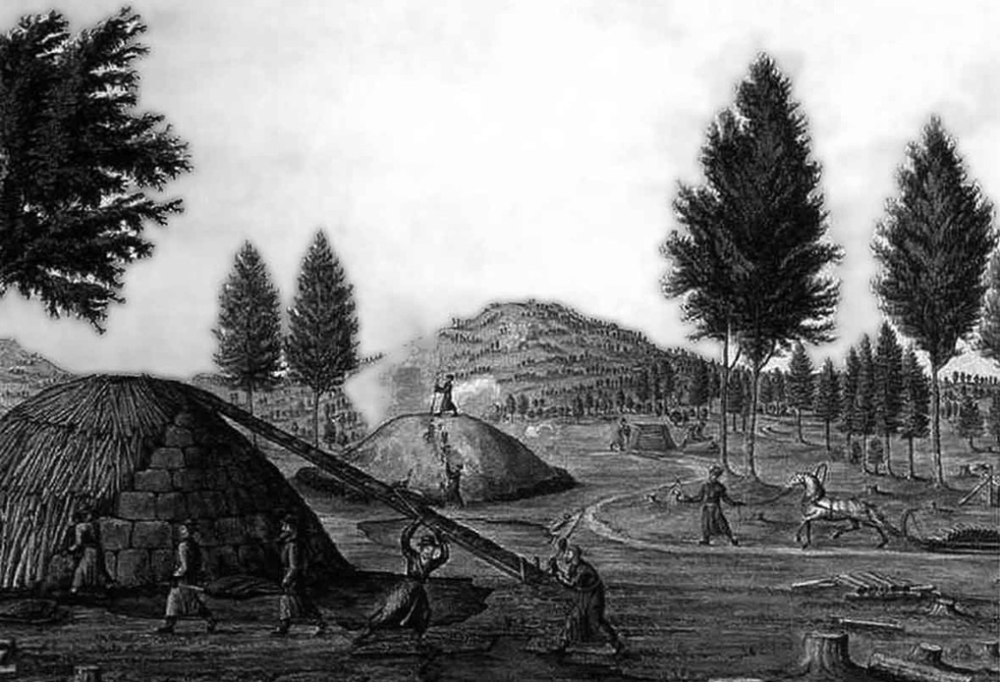
►
С его именем связано, во-первых, начало племенного коневодства в Починках, во-вторых, разведение вишнёвых садов в Больших Бакалдах (ныне Бутурлинский район). Кроме того, Б. И. Морозов с помощью приглашённых им белорусов наладил в своих владениях производство пота́ша.
Этот продукт имел большой спрос и в России, и за границей. Его использовали в производстве мыла и стекла, применяли при обработке кож; из него также делали селитру, которая шла на приготовление пороха.
Поташное предприятие (бу́дный стан) строилось на освобождённой от леса площади, которую белорусские переселенцы называли майда́ном. От этих майданов произошли названия некоторых современных сёл Нижегородской области (Волчихинский Майдан, Рождественский Майдан, Будный Майдан и др.).
Боярину Морозову принадлежали 29 будных станов. Больше всего их было около Сергача, Арзамаса, Починок и Мурашкина.
4 Рождение Макарьевской ярмарки. В 1620 году монах Авраамий отправился на озеро Жёлтые Воды рядом с устьем Керженца и поставил на его берегу свою келью. Там когда-то стоял монастырь, основанный преподобным Макарием Желтоводским и Унженским.
|
|
Вспомните, что вам известно о Макарии Желтоводском и Унженском. |
Когда царь Михаил Федорович и патриарх Филарет узнали о трудах Авраамия, они начали всячески покровительствовать его начинанию. В 1625 году царь пожаловал Макарьевскому Желтоводскому монастырю окрестные леса, речки и озёра. В 1627 году последовал царский указ, даровавший монастырским властям право собирать в свою пользу пошлину с торгующих у стен обители людей. От этого указа ведётся история Макарьевской ярмарки.
Из указа 1627 года мы можем узнать, какие товары на ней в то время продавали. В основном это были продукты сельского хозяйства: хлеб, соль, рыба, икра, воск, мёд, сыр, яйца, быки, коровы, гуси, утята, поросята, зайцы, тетерева.►
Сначала торговля шла только в день памяти преподобного Макария — 25 июля (7 августа). Но в 1641 году Михаил Федорович разрешил продлить срок ярмарки до четырех недель (с 1 по 30 июля). Каждый год силами монастыря около его стен сооружали пристани, торговые ряды, кладовые, помещения для ночлега, бани. Подобные удобства стали ещё больше привлекать сюда купцов. И не только из России, но и из-за рубежа. Вскоре Макарьевская ярмарка стала крупнейшей в Русском государстве.
Превращение Макарьевского торга во всероссийскую ярмарку объяснялось тем, что, в отличие от многих других монастырей, Макарьевский находился на главной торговой магистрали России — Волге. Кроме того, удобным было время работы торга. Оно приходилось на середину лета, когда купеческие суда с севера и юга, запада и востока страны могли привезти сюда товар на продажу, а затем до наступления ледостава успевали вернуться обратно.
Соседство с Макарьевским монастырём способствовало росту села Лысково, где стал развиваться кирпичный промысел. Из лысковского кирпича строились храмы и стены Макарьевской обители.
|
|
Знакомимся с историческим источником |
Отчет о доходах
Макарьевского монастыря,
полученных с ярмарки
Во 1685 году на Макарьевской ярмонке собрано в монастырскую казну со 688 000 пуд соли таможенных пошлин 4212 рублёв...
С рыбы: з осетров, з белуг и з ыной мелкой, которая была продана на Макарьевской ярмонке... с продажные цены пошлин 1582 рубли 16 алты́н 4 де́нги...
С меду 200 рублёв. Всего с трех статей 5994 рубли 16 алтын 4 денги. Конских пошлин 1000 рублёв.
Со 672 лавок, с 448 шалашей, с 7 мест со 80 печей хлебных и квасных, с 2-х изб, со 108 кадей квасных наемных и оброчных 2978 рублёв 16 алтын 4 денги.
►
На перевозе 700 рублёв.
Всего конских и наёмных и оброчных и перевозочных 4678 рублёв 16 алтын 4 денги.
Всего по той росписи собрано 10 673 рубли.
Подведём итоги
К середине XVII века после Смутного времени Русское государство экономически быстро возродилось. Примером такого возрождения стал Нижегородский край, где расцвели различные ремёсла и торговля. Об успешности экономического развития Нижегородчины свидетельствует зарождение ярмарки у стен Макарьевского монастыря.
|
|
Исторический словарь |
Алты́н, де́нга (де́ньга) — денежные единицы.
Бу́да — огромная круглая поленница, сжигавшаяся при производстве поташа.
Бу́дный стан — предприятие по производству поташа.
Изразе́ц — керамическая плитка для облицовки печей и стен.
Кадь — большая бочка с открытым верхом.
Мануфакту́ра — промышленное предприятие, для которого характерно разделение производственных операций между работниками при господстве ручного труда.
Пота́ш — одна из солей, белое кристаллическое вещество; использовалось в мыловарении, стекольном производстве, при выделке кож, изготовлении пороха.
Струг — древнерусское парусно-гребное речное судно.
Юфть — выделанная кожа коров, молодых быков и лошадей, смазанная смесью дёгтя с тюленьим жиром; использовалась для изготовления верха обуви, отличалась толщиной и водостойкостью.►
|
|
Обратите внимание |
Григорий Дмитриевич Строганов — глава рода знаменитых солепромышленников.
Пушниковы — нижегородские предприниматели XVII века, организаторы кожевенного производства.
Клим Калмыков — нижегородец, крестьянин Благовещенской слободы, крупнейший в России производитель канатов.
Семен Задорин и Василий Шорин — московские купцы, основавшие в Нижнем Новгороде первую крупную кожевенную мануфактуру.
Борис Иванович Морозов — боярин, приближённый царя Алексея Михайловича, наладивший в Нижегородском крае производство поташа.
|
|
Сформулируйте вывод по теме параграфа, приведите два аргумента. |
|
|
Вопросы и задания |
1. Ремесленники каких специальностей в Нижнем Новгороде были наиболее многочисленны?
2. Какие отрасли производства были ведущими в Балахне XVII века?
3. Чем славились арзамасские и городецкие мастера?
4. Что способствовало экономическому росту Лыскова? Почему?
5. Как возникло поташное производство в нашем крае? Объясните происхождение названия «будный стан».
6. Прочитайте текст источника. Учитывая, что чем больше объём продаж, тем значительнее размер собранных торговых пошлин, назовите три товара, торговля которыми на ярмарке имела особо крупные размеры.
|
|
Составьте небольшой устный рассказ с использованием дат, личностей, терминов, помещённых в начале параграфа. |
►
§ 3
Культура Нижегородского края в XVII веке
Михайло-Архангельский собор в Нижегородском кремле
Архитекторы Л. С. Возоулин и А. К. Возоулин. 1628—1631
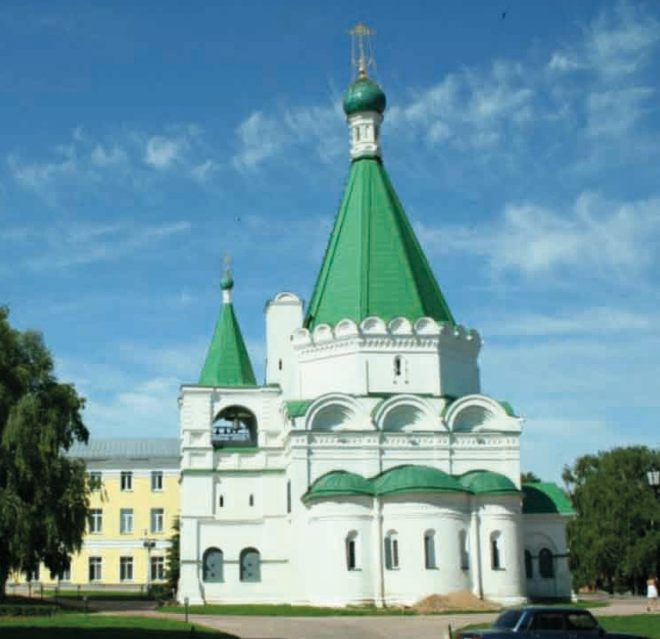
|
|
Какие факторы влияли на развитие культуры Нижегородского края в XVII веке? |
1. Распространение грамотности и письменности.
2. Средневековый Нижний Новгород.
3. Зодчество и живопись.
4. Повседневная жизнь нижегородцев.
● Начальная школа
● Книжное дело
● «Нижегородский летописец»
● Верхний и Нижний посады
● Слобода
● Шатровый стиль
● Декоративно-прикладное искусство
● Изба
● Красный угол
►
1 Распространение грамотности и письменности.
|
|
Как вы думаете, чем школы XVII века отличались от современных школ? |
В XVII столетии уездный город Нижний Новгород превращался в крупный торговый и хозяйственный центр страны, что требовало большого количества грамотных людей. При храмах открывались начальные школы. Грамоте обучали служители церкви. Школы посещали дети из семей ремесленников и купечества. Их учили читать, писать и считать, воспитывали в духе христианской нравственности. Занятия начинались и заканчивались молитвой. В школах использовались азбуковники — книги для детей и учителей. В них содержались правила обучения и наставления: как вести себя в школе, в церкви, дома и на улице. При обучении письму использовались гусиные перья и бумага, которая была очень дорогой. Грамотность распространялась среди городского населения. Крестьяне в деревнях оставались неграмотными. В семьях дворян и бояр существовало домашнее обучение с частными учителями.
В крае развивалось книжное дело. Книги переписывались духовными лицами в церквях и монастырях, приказными людьми. В Нижний Новгород из Москвы попадали первые печатные книги. Это была религиозная литература, но привозили и учебные книги — «Букварь», «Грамматика» и др.
Земская школа в Московской Руси
Художник Б. М. Кустодиев. 1907
Государственный
Русский музей
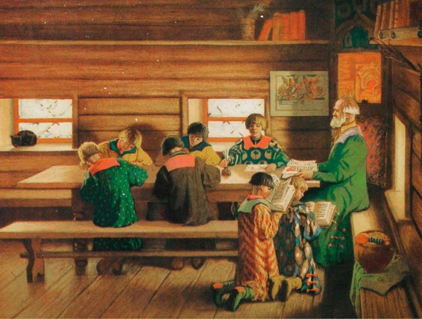
►
Знаменательным событием стало открытие в 1613 году первой типографии в Нижнем Новгороде печатным мастером из Москвы Никитой Фофановым. Но уже в 1614 году она закрылась из-за возвращения мастера в Москву.
В XVII веке развивалось местное летописание. События в нашем крае по годам (от основания Нижнего Новгорода до XVII века) изложены в летописном памятнике, который называется «Нижегородский летописец». Это ценный источник по изучению родной истории.
2 Средневековый Нижний Новгород.
|
|
Нужен ли современному Нижнему Новгороду кремль для обороны горожан от врагов? |
В XVII веке территория Нижнего Новгорода включала кремль, поса́ды и несколько слобод. В кремле размещались соборы, церкви, съе́зжая изба, боярские и дворянские дворы. За сте́нами кремля располагались Верхний и Нижний посады. В Верхнем посаде (с центром на Верхнебазарной площади — район современной площади Минина и Пожарского) жили ремесленники и торговцы (посадские люди, платившие налоги и выполнявшие повинности). В Нижнем посаде (местность у подножия Нижегородского кремля и городская застройка вдоль речного берега — район современной улицы Рождественской) была сосредоточена деловая жизнь города с торгом (рынком). На территории торга находились площадь, гостиный двор, таможня, зе́мская изба, церковь, торговые ряды, ремесленные мастерские, склады. За пределами посадов были слободы, жители которых освобождались от налогов и повинностей — Па́нская (на откосе Верхне-Волжской набережной), Печёрская (возле Печёрского монастыря), Ямска́я (в конце улицы Ильинской), Куна́винская (на другом берегу Оки) и др.
3 Зодчество и живопись. До середины XVII века в нижегородском храмовом зодчестве преобладал шатровый архитектурный стиль (храм завершался шатром — многогранной конструкцией, которая сужалась кверху). ►
В таком стиле в 1628—1631 годах по царскому указу был построен Михайло-Архангельский собор в Нижегородском кремле в честь победы Нижегородского ополчения 1612 года.
|
|
Вспомните, прах какого народного героя ныне покоится в Михайло-Архангельском соборе (см. параграф 1). |
За пределами кремля первым каменным храмом стала Мироно́сицко-Зна́менская церковь (1649 год, на современной улице Добролюбова). Позднее у подножия кремля была возведена из камня церковь Рождества Иоанна Предте́чи (1674—1683). Каменное строительство велось в Печёрском и Благовещенском монастырях. Помимо храмов в городе возводились первые каменные дома: двухэтажные палаты купца О́лисова, дом купца Чаты́гина («Домик Петра I») и др.
Во второй половине ХVII века в нижегородской архитектуре начал формироваться яркий стиль русского барокко (с итал. — причудливый) с характерными особенностями: сочетание в здании красного и белого цветов за счёт использования красного кирпича и белого камня, обилие декоративных элементов, белокаменная резьба с растительным орнаментом и др. В этом стиле построена Смоленская церковь в Гордеевке.
Смоленская церковь в Гордеевке
Конец XVII века
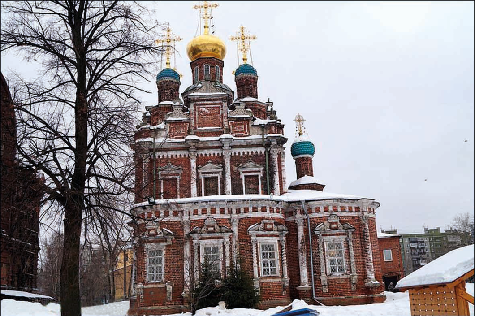
►
В русском иконописном искусстве этого времени важное место занимали нижегородские художники. Один из них иконописец из Балахны Кондра́т Ильин — протопоп Успенского собора Московского Кремля. Стены собора расписывали его земляки. В Балахне было немало потомственных семей иконописцев. Онтон Патрекеев был из семьи, занимавшейся в Балахне иконописью с середины XVI века. Артемий Григорьев сам являлся родоначальником целой династии иконописцев. В иконописной школе Оружейной палаты Московского кремля трудился также Никита Па́вловец — родом из нижегородского села Павлово.
В нашем крае развивалось декоративно-прикладное искусство. Его мастера занимались художественным оформлением предметов, используемых в быту. Были развиты техника обработки металла, гончарное и кузнечное дело, чеканка золотой и серебряной посуды.
4 Повседневная жизнь нижегородцев в XVII веке. Повседневная жизнь — это привычный уклад жизни человека с его потребностями: материальными (жилье, одежда, питание) и духовными (обычаи, традиции, устои, нормы поведения). Основным жильем в те времена была изба — высокий четырёхугольный бревенчатый сруб (ряды бревен, образующие стены постройки). Внутри изба была разделена на «тёплую» (отапливаемую) го́рницу и «холодную» — се́ни.
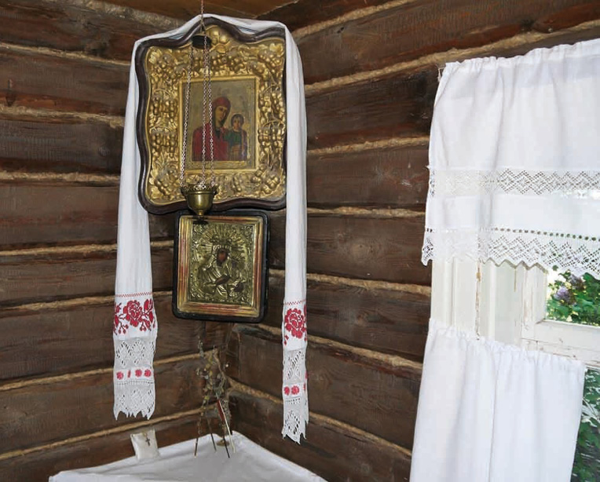
Красный угол в русской избе
►
Главную роль в жизни семьи играла русская печь. Благодаря ей готовили пищу, обогревали дом, мылись, стирали белье, сохраняли до утра тёплую пищу. В горнице стоял стол. В светлой части горницы размещались иконы, ее называли красным (то есть красивым) углом. Возле стен были лавки, в углу находился сундук с вещами.
|
|
Как вы думаете, какой предмет современной мебели заменяет сундук? |
Деревянная лестница вела наверх, где была светли́ца — помещение для детей и женщин. В нижней части избы (подкле́ть) находилась кладовая для хранения запасов. Во дворе размещались амба́р, хлев и баня. Усадьбу окружал сплошной забор. При доме был огород, на котором выращивали овощи.
По одежде нижегородца определялось его социальное положение. Бедняки носили зипу́ны из грубой неокрашенной ткани и лапти. Зажиточные горожане — кафта́ны из грубого серого сукна. Богатые поверх кафтана надевали фе́рязь — верхнюю одежду с длинными рукавами, без воротника, и носили кожаные сапоги. Головным убором служила шапка-колпак. Женщины носили сарафаны (платье без рукавов).
Традиционная одежда
ХVII века
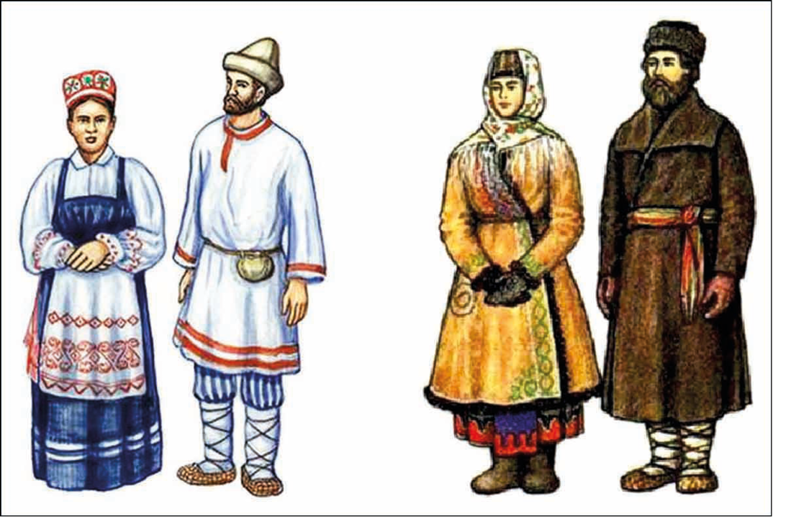
►
Привычными блюдами на столе нижегородцев были щи из капусты, пироги, каши, рыба, ржаной хлеб. Из напитков предпочитали квас. В церковные праздники нижегородцы посещали богослужения, общались дома за праздничным столом, на улицах пели песни, вели хороводы, плясали под звуки свирелей и балалаек. Забавой женщин и девушек были качели. Проводились уличные представления бродячих актёров-скоморохов.
Подведём итоги
Успешное экономическое развитие Нижегородского края в XVII веке сопровождалось культурным подъёмом: распространением грамотности и письменности, развитием каменного зодчества, иконописного и декоративно-прикладного искусства. Большое влияние на культурное развитие оказывала память о патриотическом подъёме в годы Смуты. В повседневной жизни нижегородцы сохраняли традиции быта, веры, норм и устоев.
Исторический словарь
Амба́р — строение для хранения пищевых припасов.
Го́рница — чистая половина избы, парадная комната, предназначенная для отдыха или приёма гостей.
Зе́мская изба — выборный орган местного самоуправления, возглавляемый земским старостой.
Зипу́н — крестьянский рабочий кафтан от непогоды.
Кафта́н — длиннополая верхняя мужская одежда.
Поса́д — торгово-ремесленная часть поселения за стенами кремля, княжеских или боярских дворов, жители которого несли «государево тя́гло».
Се́ни — помещение между жилой частью дома и крыльцом.
Съе́зжая (приказная) изба — орган местной государственной власти, воеводская канцелярия, куда съезжались служилые люди уезда.
Хлев — крытый загон для домашних животных.
►
|
|
Обратите внимание |
Никита Фофанов — печатный мастер, основатель типографии в Нижнем Новгороде в 1613 году.
«Нижегородский летописец» — летописный памятник XVII века.
Михайло-Архангельский собор — возведен в кремле в XVII веке в честь победы Нижегородского ополчения 1612 года.
|
|
Сформулируйте вывод по теме параграфа, приведите два аргумента. |
|
|
Вопросы и задания |
1. Подумайте, чем было вызвано распространение грамотности в Нижнем Новгороде в XVII веке.
2. Какие части Нижнего Новгорода составляли его основную территорию?
3. В чём состояло отличие посадских людей от жителей слобод? У кого из них было больше прав?
4*. Проведите виртуальную экскурсию по нижегородской избе XVII века.
5*. Назовите архитектурные стили, характерные для нижегородской архитектуры XVII века, выделите их особенности и подтвердите примерами.
6*. Какие аргументы можно привести в подтверждение того, что в русском иконописном искусстве XVII века важную роль играли нижегородские художники?
|
|
Составьте небольшой устный рассказ с использованием дат, личностей, терминов, помещенных в начале параграфа. |
|
|
Сформулируйте один-два вывода по теме главы. Приведите два-три аргумента. |
Вопросы и задания к главе I
1. Проведите исследование по сюжету картины К. Е. Маковского «Воззвание Минина к нижегородцам», написанной в 1896 году.
►
2. Прочитайте стихотворение и выполните задания:
В кремле Нижегородском листья облетают,
Холодный дождь с утра идти не устаёт.
Посланье старцев Троицких читает
В соборе Спасском людям протопоп.
А. Назовите имя протопопа.
Б. О чём говорилось в послании Троицких старцев?
В. Когда происходили эти события?
3. Прочитайте стихотворение и выполните задания:
Был именитым человеком,
С царями в дружбе состоял,
В селе Гордеевка и в Нижнем Новеграде
Дворцы и церкви созидал.
И до сих пор стоят два храма
И восхищают нас с тобой
Полётом куполов прекрасных
И белокаменной резьбой.
А. О каком знаменитом нижегородце повествует стихотворение?
Б. Назовите товар, которым традиционно торговали представители этого старинного купеческого рода.
В. Вспомните, какие две церкви в стиле барокко были построены в Нижнем Новгороде на средства этого человека.
4. Подготовьте проект «Один день в нижегородской школе XVII века».
Итоги главы
В ходе Смутного времени, когда польский король Сигизмунд III при поддержке бояр-предателей хотел стать русским царём, единственная патриотическая сила в России в лице Кузьмы Минина и нижегородцев сумела создать ополчение и освободить Москву от иноземных захватчиков.
Разоренная в годы Смуты экономика России восстановилась. Нижний Новгород и другие города Нижегородчины превратились в центры промышленности, торговли и культуры. Зародилась Макарьевская ярмарка, со временем ставшая главным торговым центром Российского государства.
►
Глава II
НИЖЕГОРОДСКИЙ КРАЙ В XVIII ВЕКЕ
В кузнице
Художник Л. К. Плахов. 1840-е годы
Национальный художественный музей Республики Беларусь
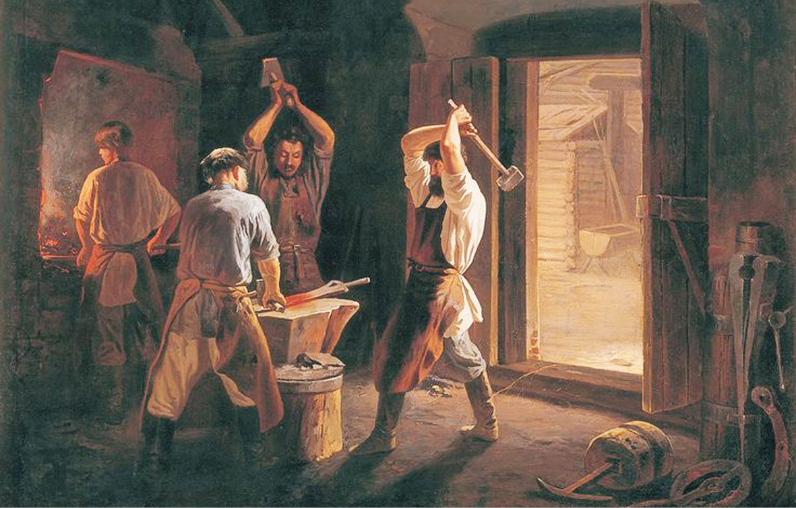
XVIII век открыл новую страницу в истории России, когда были решены многие проблемы, десятки лет тормозившие развитие страны. Благодаря Петру I и Екатерине II были созданы мощные армия и флот, с помощью которых Россия, открыв себе дорогу к Балтийскому и Черному морям, заняла достойное место среди европейских государств. В главе вы узнаете об основных событиях истории Нижегородского края в XVIII веке, о пребывании в Нижнем Новгороде Петра I и Екатерины II, об образовании Нижегородской губернии и Нижегородского наместничества, о гениальном механике И. П. Кулибине, о том, как Нижегородчина превратилась в крупный экономический и культурный центр страны.
►
§ 4
Петровские преобразования на Нижегородчине
в первой половине XVIII века
Царь Пётр Великий перевозит в ботике через Неву
императрицу Екатерину Алексеевну, князя Меншикова, адмирала Головина,
канцлера Головкина и кабинет-секретаря Макарова
Художник А. П. Рябушкин. 1896. Государственный Русский музей
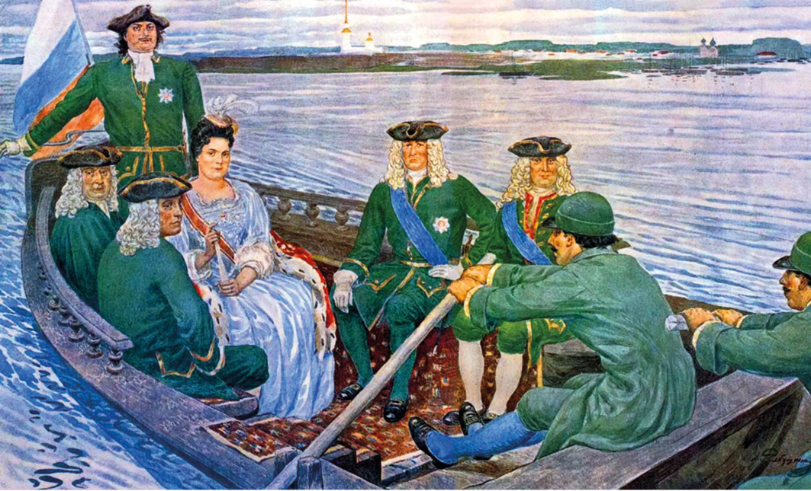
|
|
Как реформы Петра I изменили жизнь Нижегородского края,и в чём заключалась их противоречивость? |
1. Первое и второе посещения Нижнего Новгорода Петром I.
2. Образование Нижегородской губернии.
3. Петровские преобразования и социально-экономическое развитие Нижегородского края.
4. Петр I и волжское судостроение.
5. Места исторической памяти Петра I в Нижнем Новгороде.
● Первый Азовский поход
● Северная война
● Судостроение
● Нижегородская губерния
● Главная соляная контора
● 1695, 1722 годы
● 1700—1721 годы
● Персидский поход
►
1 Первое и второе посещения Нижнего Новгорода Петром I.
|
|
Подумайте, для чего России требовался выход к Чёрному морю. |
В последней трети XV века Турция установила полный контроль над Черным морем и, образно говоря, превратила его в турецкое озеро. Русское государство было отрезано от берегов Черноморья. Это привело к тяжёлым для России политическим, экономическим и военным последствиям. Чтобы выйти из этого положения, русским требовалось достигнуть выхода к Черному морю. Но Турция была могущественным государством, и добиться этого было очень непросто. Получить выход в Черное море для России попытался Пётр I, который совершил два похода на турецкую крепость Азов в 1695 и 1696 годах. Направляясь в первый Азо́вский поход в 1695 году, Пётр посетил Нижний Новгород.
Флотилия с войсками, артиллерией и боеприпасами отплыла из Москвы. Путь пролегал по Москве-реке и далее по Оке. 16 мая 1695 года флотилия прибыла в Нижний Новгород. Здесь было решено отдохнуть, запастись продовольствием, а главное, перегрузить пушки и боеприпасы с барж, которые не выдерживали испытания речным плаванием и давали течь, на более надёжные волжские суда. Работа по перегрузке продолжалась шесть дней.
Портрет Петра I в 1698 году
Художник Г. Кнеллер
Британская королевская коллекция
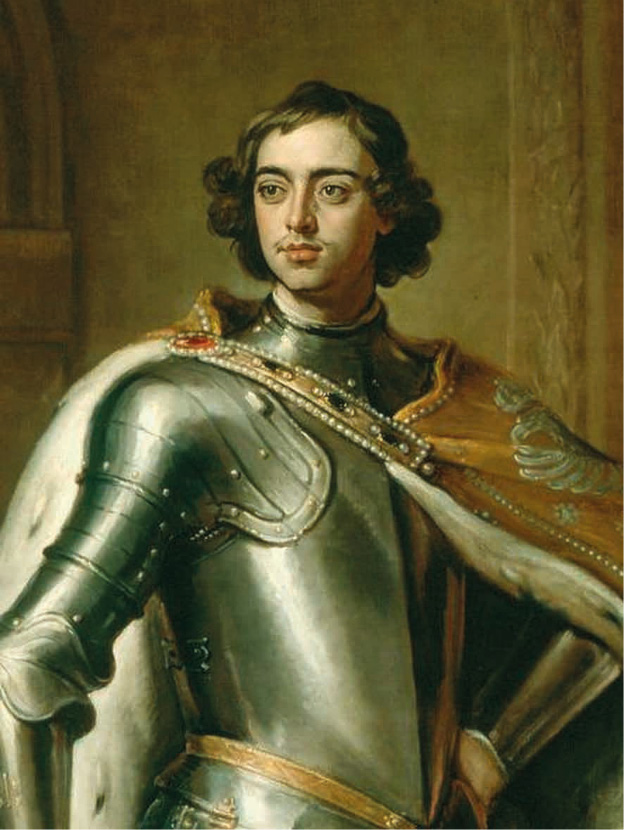
►
Дом, в котором, живя в Нижнем Новгороде на улице Почаинской, останавливался царь, сохранился до наших дней. К сожалению, первый поход окончился неудачно. Взять Азов удалось через год — во время второго похода.
В 1722 году состоялся второй визит Петра в Нижний Новгород. На этот раз это было связано с Перси́дским походом на Каспийское море. Маршрут петровских войск вновь пролегал через Нижний Новгород, который в силу своего географического положения был крепким тылом русской армии. Здесь снаряжались суда, собирались запасы продовольствия, боеприпасов и амуни́ции.
Второй визит Петра в Нижний Новгород проходил с 26 по 30 мая 1722 года. Нижегородцы подготовили для царя 245 судов, построенных специально для перевозки войск и грузов, направляемых в дальний поход на Персию. Император с войсками прибыл в Нижний с флотилией из 274 судов с пехотой, артиллерией и амуницией. Среди кораблей выделялись два судна, обтянутые красным и зелёным сукном и украшенные желтыми шнурами, — императорские галеры. Первым к царской галере для приветствия подошло судно во главе с нижегородским вице-губернатором, прапрадедом А. С. Пушкина по материнской линии Ю. А. Ржевским, которого Пётр хорошо знал ещё по Петербургу.
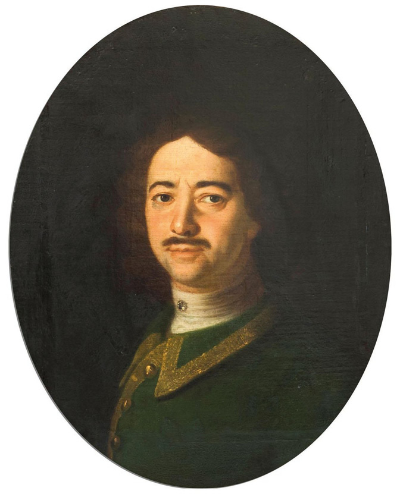
Портрет Петра I в 1722 году
Художник Л. Каравак
Государственный Русский музей
►
Среди встречающих царя были также: нижегородский епископ Питирим, барон А. Г. Строганов, бургомистр Нижнего Новгорода Я. Пушников и прочие представители нижегородского дворянства и купечества. С реки Пётр со свитой отправился в дом к А. Г. Строганову (на улице Рождественской, дом не сохранился). Ночевать царь вернулся на свою галеру.
Следующие дни пребывания Петра в Нижнем Новгороде проходили в инспектировании приготовленных к походу судов, проверке снаряжения и припасов, знакомстве с состоянием городских дел и местными нуждами. Император беседовал с чиновниками, духовенством, посещал богослужения и дома первых лиц города, побывал в недавно освященной Рождественской (Строгановской) церкви.
30 мая 1722 года Пётр праздновал свое 50-летие. Он был на богослужении в Спасо-Преображенском кафедральном соборе, пел вместе с певчими на клиросе, читал «Апостол».
Существует мнение, которое из-за недостатка источников опровергается некоторыми краеведами, что после богослужения Пётр спустился в подземелье собора к гробнице Кузьмы Минина, поклонился до земли и произнёс речь, в которой воздал должное великому нижегородцу: «Вот истинный спаситель Отечества».
Спасо-Преображенский собор в Нижегородском кремле
Фотография 1897 года
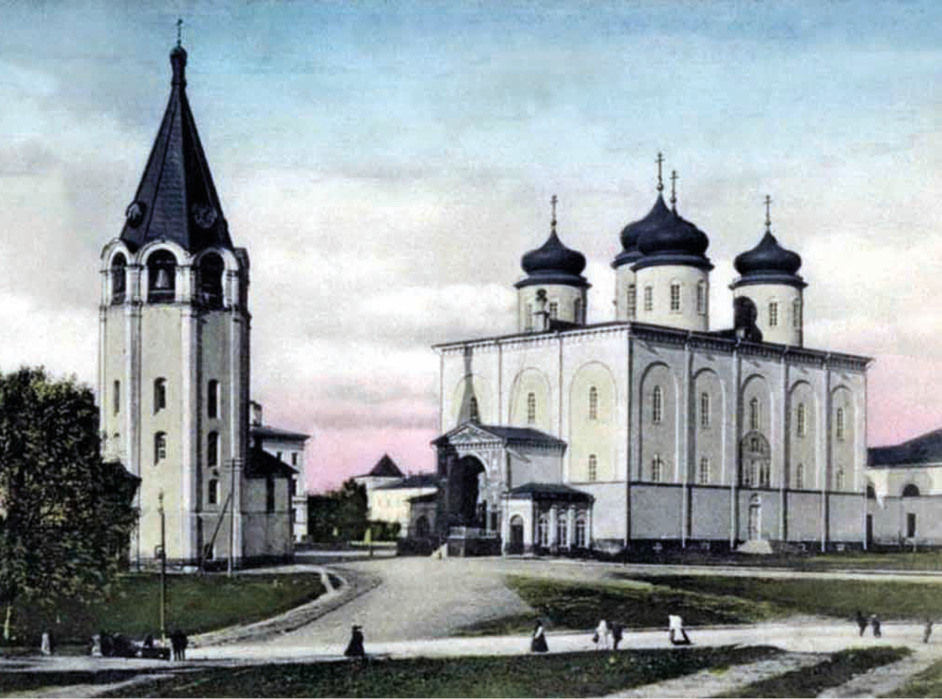
►
|
|
Как вы думаете, какой смысл Петр I вкладывал в оценку Кузьмы Минина: «Вот истинный спаситель Отечества»? |
2 Образование Нижегородской губернии. XVIII век в России был временем крутых изменений. Огромная территория страны с XIV века делилась на уезды, которые разделялись на станы и волости. К началу XVIII столетия такое нечеткое деление устарело. В 1708 году Пётр I решил разделить страну на восемь губерний. Нижегородчина вошла в состав Казанской губернии. В 1714 году по указу царя была образована Нижегородская губерния. В её состав вошли Нижний Новгород и города: Арзамас, Алатырь, Балахна, Василь (Васильсурск), Горохове́ц, Муром, Юрьевец, Ядрин.
|
|
Посмотрите на вышеперечисленные города и определите, какие из них, входивших в 1714 году в Нижегородскую губернию, ныне не входят в Нижегородскую область. |
В память об этом в 2014 году к 300-летию образования Нижегородской губернии в Нижнем Новгороде был поставлен памятник царю-реформатору.
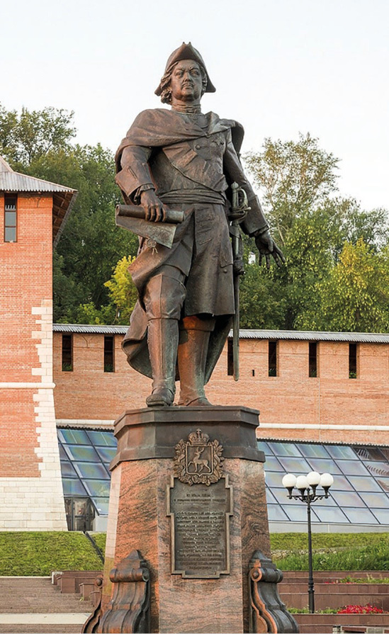
Памятник Петру I в Нижнем Новгороде
Скульптор А. А. Щитов
2014
►
3 Петровские преобразования и социально-экономическое развитие Нижегородского края. Экономическая политика Петра I в первой четверти XVIII века диктовалась потребностями Северной войны, обустройством присоединённых к России территорий и строительством новой столицы. И то и другое было необходимо для блага страны, но требовало привлечения огромных средств. Государству приходилось устанавливать контроль над отдельными сферами хозяйства, увеличивать налоги.
Касалось это всех губерний, в том числе Нижегородской.
В 1700 году Макарьевская ярмарка была отписана в ведение казны, и доходы от нее получал теперь не Желтоводский монастырь, а государство. Примерно то же произошло и с солеваренным промыслом в Балахне. В 1705 году был издан указ о введении исключительного права государства торговать солью. Это подорвало балахнинские соляные промыслы, многие мелкие солевары разорились.
Нижегородская губерния
в составе Российской империи в 1727 году
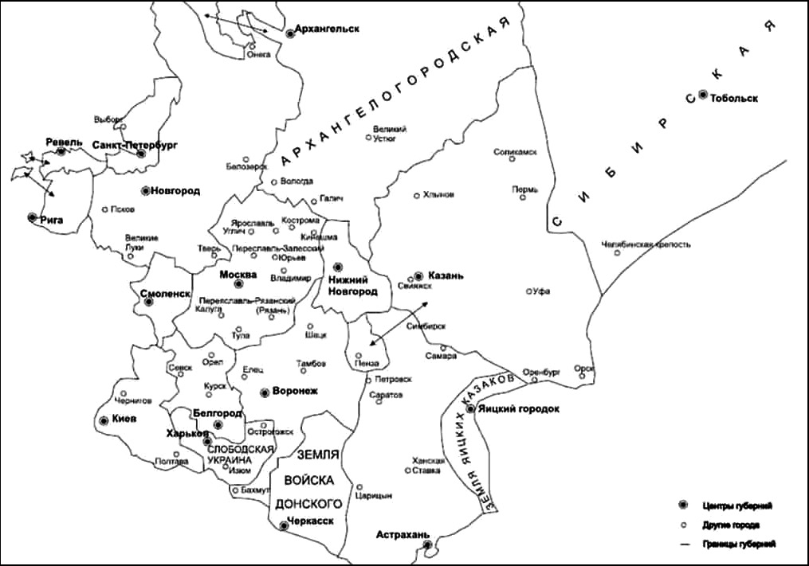
►
Зато в Нижнем Новгороде была учреждена Главная соляна́я контора, построены многочисленные склады, которые стали главной перевалочной базой страны для соляной торговли.
Сюда соль на речных судах доставлялась с Урала и Нижней Волги, а отсюда развозилась по другим городам. Так Нижний Новгород стал соляной столицей России.
В течение 21 года Северной войны (1700—1721) в стране из-за увеличения государственных расходов постоянно возрастали налоги. Была введена поду́шная подать, которая взималась со всех мужчин податных сословий любого возраста.
Помимо подушной подати население облагалось дополнительными сборами: на лошадей, на рекрутов-призывников, на провиант для армии, на корабельные, мостовые и прочие нужды. Далее следовали пошлины с бань, с ульев, с рыбных ловель, с перевоза, за право носить бороду и др. Одновременно с введением новых налогов росли и недоимки по налогам, поскольку все меньше и меньше людей могли их уплатить. Многие попросту нищали.
Один за другим следовали указы: о снятии с церквей колоколов для переплавки их в пушки, о поставках лошадей и подвод. Нижегородская земля ежегодно направляла сотни каменщиков, плотников, кузнецов, землекопов на строительство новой столицы — Санкт-Петербурга. В то же время каменное строительство в самом Нижнем Новгороде, впрочем, как и в других российских городах, специальным указом было запрещено.
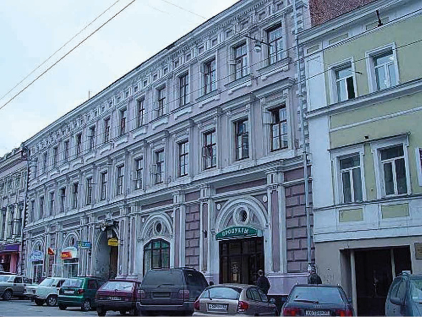
Здание бывшей
соляной конторы
Улица Рождественская, 8
►
Многие петровские указы вызывали протест у нижегородцев. Критике подвергалось увеличение налогов, требование носить иностранную одежду, запрет на ношение бороды, однако власть решительно пресекала всякие протесты, жестоко преследуя недовольных.
|
|
Как вы относитесь к указам Петра I о требовании носить иностранную одежду и о запрещении ношения бород? |
Например, за осуждение церковной политики был отрешён от должности и сослан в северный монастырь митрополит Нижегородский Исаия.
Петровская эпоха тяжело отразилась на экономическом состоянии Нижегородского края. Вплоть до середины XVIII века в губернии сокращались посадское население, ремесленное производство и торговля, хотя в целом прогресс России в петровскую эпоху был бесспорен. Но этот прогресс был достигнут ценой колоссального напряжения сил простого народа.
4 Пётр I и нижегородское судостроение. Нижний Новгород издавна славился корабельным делом. Городские ве́рфи располагались по берегам Оки перед её слиянием с Волгой. Кораблестроением на Волге славились также Балахна, Городец, Василёва слобода (ныне Чкаловск), а на Оке село Чёрное (около современного Дзержинска).
Домик Петра I
Улица Почаинская, 27
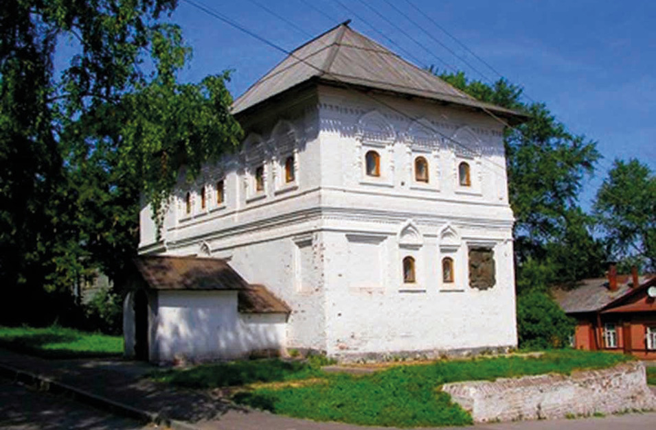
►
Пётр I внес заметный вклад в развитие нижегородского судостроения. В 1701 году по его указу на реке Пьяне (ныне рабочий поселок Пильна) были построены лесопильни по распиловке дубовых брёвен для корабельного строительства.
Во время своего второго визита в Нижний Новгород в 1722 году Пётр издал указ, в котором требовал учреждения в Нижнем Новгороде верфи, где помимо строительства судов, было бы налажено изготовление мачт, парусов, якорей и прочих деталей судовой оснастки. Большое внимание также уделялось производству в городе корабельных канатов.
|
|
Какой крупнейший современный завод Нижнего Новгорода является судостроительным? |
5 Места исторической памяти Петра I в Нижнем Новгороде. Есть в Нижнем Новгороде на улице Почаинской старинный двухэтажный дом. По преданию, в этом доме в 1695 году останавливался 23-летний Петр I, отправляясь в первый Азовский поход. В то время этот дом принадлежал купцу Ефиму Чаты́гину. В наше время краеведы называют это строение Домиком Петра I. Здание представляет собой памятник архитектуры XVII века и охраняется государством.
Из храмов Нижнего Новгорода, которые посетил Пётр во время своего второго визита в 1722 году, сохранилась Строгановская церковь.
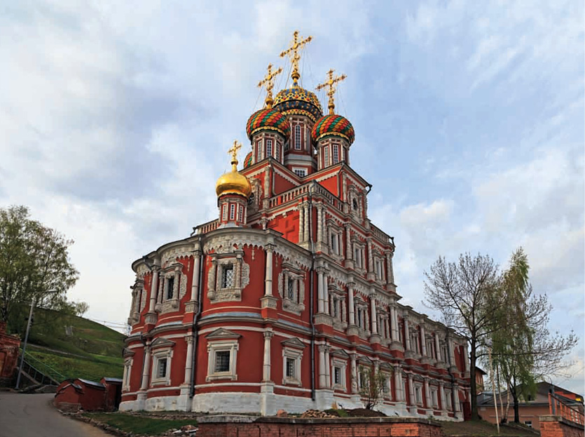
Церковь Собора Пресвятой
Богородицы (Строгановская)
1696—1719
Улица Рождественская, 34
►
|
|
Знакомимся с историческим источником |
Из императорского указа
Понеже велели Мы в Нижнем Новгороде суды делать новым маниром, чтобы они могли ходити… на море, и для того учинить верфь, и о том… от нас… дан указ… И для того, по тому указу... в строении верфи и судов, не токмо чинити всякое вспоможение, но сем в том приложено трудись, и какие люди к тому надобно — из посацких по два человека погодно, для росходу денежного, как в том указе написано, выбирайте добрых. А о протчем, что ещё к тому будет потребно, пишите в Адмиралтейскую коллегию.
Подведём итоги
В течение двух десятилетий Северной войны нижегородцы, как и все русские люди, стойко переносили все тяготы войны. Они несли рекрутскую повинность, в составе армии и флота участвовали в военных действиях, трудились на государевых работах, посылали каменщиков и плотников на строительство Санкт-Петербурга, платили многочисленные налоги и подати, направляли для армейских нужд лошадей и подводы. В Нижнем Новгороде и губернии по личному указанию Петра I развивались судостроение и канатопрядение, появлялись лесопильни для строительства судов. В Нижнем Новгороде была учреждена Главная соляная контора, в результате чего город приобрёл славу соляной столицы России, возникла Нижегородская губерния. Северная война на несколько десятилетий серьёзно подорвала силы и хозяйство нижегородцев, но победоносный исход войны создал благоприятные условия для дальнейшего экономического и культурного роста Нижнего Новгорода.
|
|
Исторический словарь |
Азо́вские походы Петра I — походы русских войск и флота во главе с Петром I в 1695 и 1696 годах к крепости Азов в устье Дона за выход в Азовское и Чёрное моря.
►
Губерния — высшая административно-территориальная единица Российской империи.
Верфь — место постройки и ремонта судов.
Перси́дский поход Петра I — поход русской армии и флота во главе с Петром I в 1722—1723 годах в Персию (Иран) с целью обеспечения торговых связей России с восточными странами.
Северная война — война России со Швецией в 1700—1721 годах за обладание прибалтийскими землями и за выход в Балтийское море.
|
|
Обратите внимание |
1695 и 1722 годы — посещение Петром I Нижнего Новгорода.
1714 год — основание Нижегородской губернии.
Вице-губернатор Нижегородской губернии Юрий Алексеевич Ржевский — прапрадед поэта А. С. Пушкина.
|
|
Сформулируйте вывод по теме параграфа, приведите два аргумента. |
|
|
Вопросы и задания |
1. Вспомните, сколько раз, когда и с каким целями Петр I посещал Нижний Новгород.
2. В каком родстве состояли Нижегородский вице-губернатор Ю. А. Ржевский и А. С. Пушкин?
3. Прочитайте текст исторического источника. Когда, кто и для чего издал этот указ?
4. Подумайте, какие последствия для нижегородской экономики первой четверти XVIII века имели петровские преобразования?
5. Назовите места исторической памяти, связанные с визитами Петра в Нижний Новгород. Какие из них сохранились до наших дней?
|
|
Составьте небольшой устный рассказ с использованием дат, личностей, терминов, помещённых в начале параграфа. |
►
§ 5
Города и «знатные нижегородские сёла»
в годы правления Екатерины II
Помещичий быт
Художник К. В. Лебедев. 1827
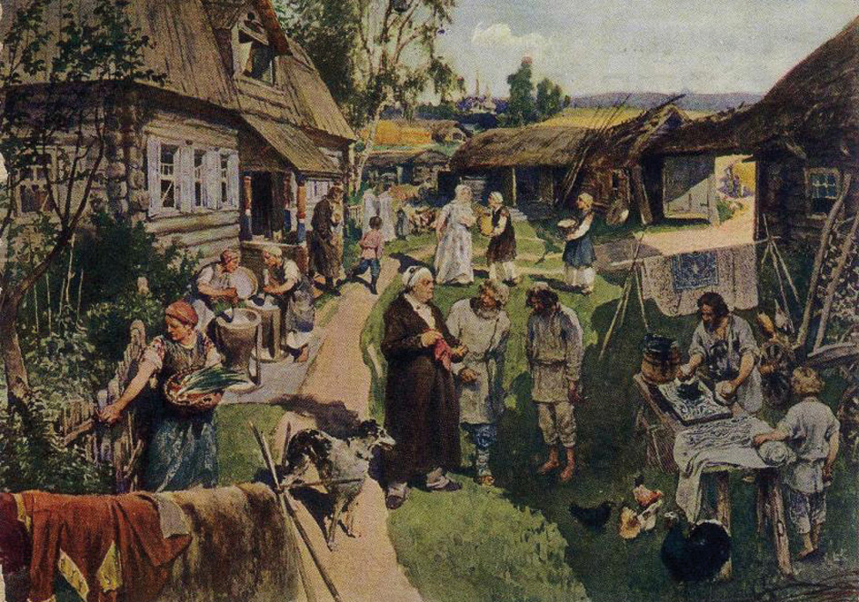
|
|
Почему в годы правления Екатерины II некоторые нижегородские села и слободы превратились в города и как это изменило облик и жизнь края? |
1. Екатерина II в Нижнем Новгороде.
2. Губернская реформа Екатерины II. Создание Нижегородского наместничества. Новые уезды и гербы городов.
3. Хозяйственное развитие Нижнего Новгорода и уездных городов Нижегородского наместничества во второй половине XVIII века.
4. «Знатные нижегородские сёла» и их хозяйственное развитие.
● Екатерина II
● Регулярный план Нижнего Новгорода
● Губернская реформа
● Наместничество
● Уездный город
● «Знатные нижегородские сёла»
● Отхожие и домашние промыслы
● Бурлак
● 1767 год
►
В XVIII веке Нижний Новгород посетили три царственные особы императорского ранга: в 1722 году Пётр I, в 1767 году Екатерина II, а в 1798 году Павел I. Из этих трех высочайших посетителей Нижнего были двое, которых в истории России называют Великими: Пётр Великий и Екатерина Великая. О визите Петра I вы узнали из предыдущего параграфа, а сейчас речь пойдёт о посещении Нижнего Новгорода Екатериной II.
1 Екатерина II в Нижнем Новгороде. В мае и июне 1767 года состоялось путешествие Екатерины II по Волге с «остановками по городам». Целью путешествия было ознакомление с состоянием дел в Поволжье.
Первая часть путешествия происходила на гребных судах — гале́рах, вторая сухопутным путём. В начале поездки императрица находилась на галере «Тверь», её сопровождала флотилия из 20 с лишним судов и лодок со свитой около 2000 человек: царедворцев, офицеров, матросов и солдат.
Путешествуя по Нижегородской земле, Екатерина посетила прибрежные сёла и города: Кату́нки, Городец, Балахну, несколько дней (с 20 по 22 мая) были посвящены пребыванию в Нижнем Новгороде, после чего путешествие продолжилось.
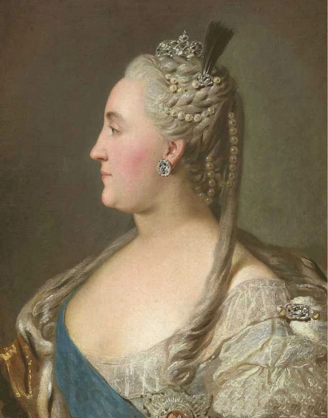
Портрет Екатерины II (фрагмент)
Художник Ф. С. Рокотов
1762
Государственная Третьяковкая галерея
►
Миновав Нижегородскую губернию, флотилия дошла до Симбирска (современный Ульяновск), после чего состоялось возвращение в Москву по́суху. При этом на обратном пути царица посетила нижегородские сёла Черновское (ныне в Большеболдинском районе), Бритово (Шатковский район), Саблуко́во (Арзамасский район), город Арзамас, село Савасле́йка (Кулебакский район), после чего, покинув пределы Нижегородской губернии, продолжила путь в Москву.
В Нижнем Новгороде Екатерину ожидал тёплый приём. Царицу встречали губернатор Я. С. Аршеневский, дворянство, духовенство, купечество и много народа.
Вид Нижнего Новгорода произвёл на царицу тяжёлое впечатление. Как следовало из её письма: «...всё или на боку лежит, или близко того…» Дело было в том, что Нижний Новгород в XVIII веке отличала общая неустроенность, бессистемно расположенные улицы и часто случавшиеся пожары. Под впечатлением от увиденного Екатерина издала указ, которым предписывалось составить точный план города, чтобы затем в столичной Комиссии о строении Санкт-Петербурга и Москвы разработать первый в истории Нижнего Новгорода регулярный план.
|
|
Что такое регулярный план? |
Такой план был подготовлен в 1770 году. Согласно плану кремль рассматривался как центральная часть города. У Дмитриевской башни создавалась площадь, от которой веером расходились прямые как стрела улицы. В настоящее время — это улицы Большая Покровская, Алексеевская, Варва́рская, Ульянова, Минина.
Посещение Нижнего Новгорода Екатериной II сыграло положительную роль в истории города. Распоряжения императрицы благотворно повлияли на городское благоустройство, а также на судьбу нашего талантливого земляка — механика Ивана Петровича Кулибина.
►
2 Губернская реформа Екатерины II. Создание Нижегородского наместничества. Новые уезды и гербы городов.
|
|
Для чего Екатерине II понадобилось проводить новую губернскую реформу, ведь Пётр I её уже проводил? |
В 1775 году Екатерина начала реформу местного управления. Её проведение ускорило восстание под руководством Е. И. Пугачёва, показавшее слабость власти на местах. (Хотя у губернаторов были огромные полномочия, но не имелось аппарата для их реализации.) При Екатерине создаются полиция и новая судебная система.
При проведении преобразований императрица стремилась постепенно заменить на русские прежние немецкие названия административных единиц и государственных должностей. Вместо губерний появились наместничества. Они разделялись на уезды.
|
|
Посмотрите на карту Нижегородского наместничества и укажите самый западный, самый восточный, самый северный и самый южный уезд наместничества. |
Нижегородское наместничество было создано в 1779 году в соответствии с указом «Об открытии Нижегородского наместничества и о составлении оного из тринадцати уездов». Этими уездами были: Нижегородский, Арзамасский, Ардатовский, Балахнинский, Васильский (Васильсурский), Горбатовский, Княгининский, Лукояновский, Макарьевский, Перевозский, Починковский, Семёновский, Сергачский.
С проведением губернской реформы было связано учреждение городских гербо́в. Нижегородский герб был утверждён в 1781 году. «Город Нижний Новгород имеет старый герб, в белом поле красный олень, рога и копыта чёрные. Сие внесено и во все вновь сочинённые гербы уездных городов в верхней части щита, в значение того, что те города принадлежат Нижегородскому наместничеству».
В нижних частях щитов уездных гербов помещались эмблемы, которые отражали природные, экономические, исторические и иные особенности уездов. ►
|
|
Узнайте, что представляет собой герб вашего города (села). |
После прихода к власти Павла I, сменившего на престоле Екатерину II, наместничествам было возвращено название губерний. Губернии и уезды просуществовали в России вплоть до 1920-х годов. Многие городские гербы, составленные при Екатерине, используются по настоящее время.
3 Хозяйственное развитие Нижнего Новгорода и уездных городов Нижегородского наместничества во второй половине XVIII века. Во второй половине XVIII века Нижний Новгород был крупным внутренним по́ртом России на слиянии двух великих рек Волги и Оки.
Нижегородское наместничество в 1779—1796 годах
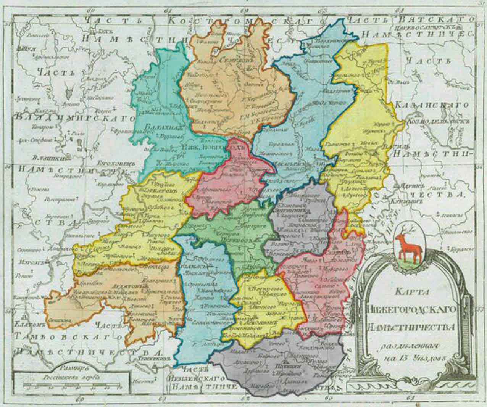
►
Во время навигации в разные российские города с хлебом, железом, солью и прочими товарами приходили и отходили не менее 2200 судов, работных же людей на них бывало до 70 000 человек, а иногда и более. Осуществив перегрузку товаров из больших судов на малые, купцы развозили товары по разным губерниям.
В роли тяглой силы на судах использовались бурлаки́ — наёмные рабочие, которые тянули речное судно против течения с помощью прочной верёвки — бечевы́.
Население Нижнего Новгорода к концу XVIII века составляло около 10 000 жителей. Они трудились на пряди́льных, крупяных и пивоваренных заводах, занимались ремёслами: портным, сапожным, столярным, кузнечным. Нижний Новгород с окрестностями был одним из крупных центров российского судостроения. Здесь строились речные суда, изготавливались для них якоря, скобы и гвозди. В городе работали 12 заводов, делавших канаты и бечеву. Несколько предприятий ткали полотно для парусов.
Кроме Нижнего Новгорода в судостроительном производстве была задействована Балахна, где вместо солеварения, окончательно запрещённого при Екатерине II, ведущую роль стало играть судостроение.
Гербы городов Нижегородского наместничества
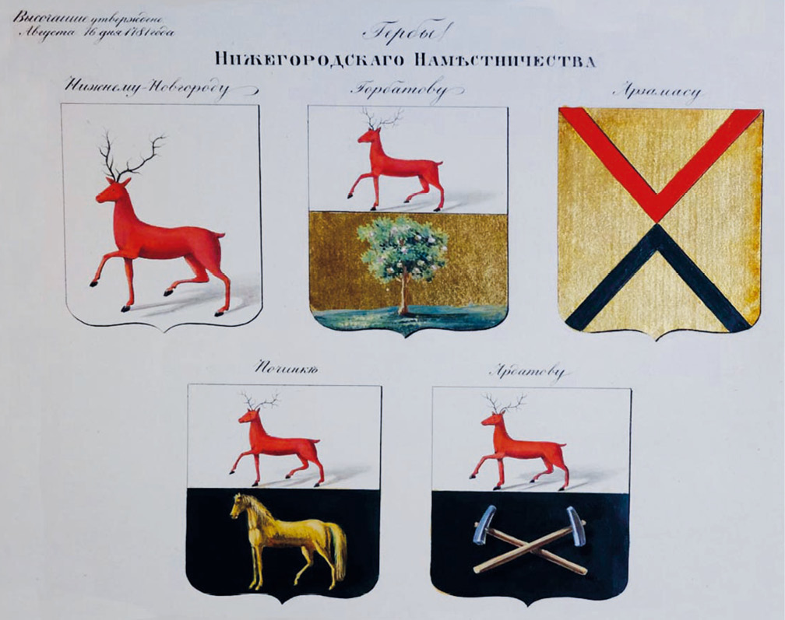
►
Небольшой уездный город Горбатов выдвинулся на второе место после Нижнего Новгорода по производству канатов.
Большое значение в промышленном развитии губернии играло кожевенное производство. Центром обработки кожи продолжал оставаться город Арзамас, где к концу XVIII века насчитывалось до 100 кожевенных заводов. Город Починки славился своим коневодством. Починковский конный завод поставлял для армии породистых боевых лошадей.
Город Сергач был известен необычным медвежьим промыслом, который состоял в дрессировке медведей для представлений во время народных гуляний и праздников. Медвежий промысел был признан официально, и на гербе Сергача до сих пор красуется медведь, стоящий на задних лапах.
В XVIII веке жизнь многих горожан мало чем отличалась от жизни крестьян. Часть жителей Нижнего Новгорода и уездных городов занималась земледелием и животноводством.
4 «Знатные нижегородские сёла» и их хозяйственное развитие. По оценкам учёных, большинство почв Нижегородчины малоплодородны и обладают повышенной кислотностью. Наиболее плодородные земли были сосредоточены на юге губернии, а северные уезды для земледелия были неблагоприятны. В некоторых местностях своего хлеба крестьянам хватало только до зимы, а дальше приходилось использовать покупной. Это заставляло сельских жителей искать дополнительные заработки и вело к развитию отхожих и домашних промыслов.
Герб города Сергача
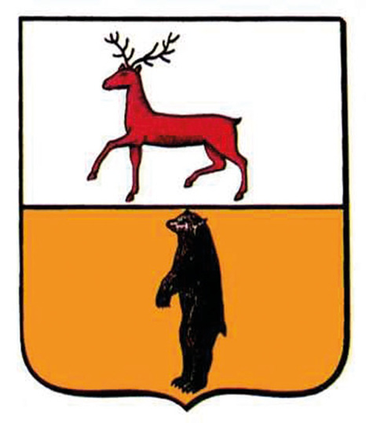
►
Отхожими назывались промыслы, когда крестьяне уходили на зиму за пределы своей деревни на заработки, а весной возвращались на сельскохозяйственные работы. Были также и домашние промыслы — производство в крестьянском хозяйстве продуктов для личного потребления или предметов для продажи.
|
|
Какой из народных промыслов, по вашему мнению, — отхожий или домашний — был более удобен для крестьян? Почему? |
В 1767 году, выступая в Москве на заседании Уложе́нной комиссии, представитель от Нижегородской губернии отмечал: «Во многих наших деревнях и сёлах есть заведённые местными жителями мыльные, кожевенные, прядильные, крупяные и солодовенные заводы. Есть села, где производят из железа и меди ножи, замки, разную утварь. В других селах мастерят мужскую и женскую одежду, обувь, шапки, рукавицы. В третьих выделывают шорный товар. В иных — точат из дерева посуду, ложки и другой щепной товар. В некоторых местах кузнецы куют цепи и тянут проволоку. В таких знатных сёлах живут много работных людей, бывают частые торги́ и ярмарки, на них сбывают жители своё производство и покупают нужное для себя».
Так в исторической литературе появилось выражение «знатные нижегородские сёла».
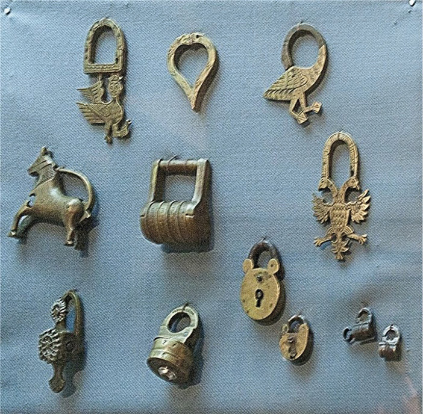
Изделия павловских замочников
►
К таким сёлам относились Богородское, Большое Мурашкино, Ворсма, Выездная Слобода, Городец, Катунки, Лысково, Павлово, Работки.
Вот знатное село Павлово на Оке — здесь трудились искусные оружейники и замочники. В год павловские ремесленники выделывали до 3000 ружей и 5000 замков. Село Безво́дное (ныне в Кстовском районе) было известно производством цепей, проволоки, рыболовных крючков и гвоздей. Сёла Городец, Богородское, Катунки славились кожевенным промыслом. В селе Большом Мурашкине шили отменные овчинные тулупы, полушубки, меховые шапки и рукавицы. Шапки, рукавицы и валенки также производили в Балахнинском и Семёновском уездах. Ложки и иную деревянную посуду делали в сёлах Семёновского уезда.
На юго-западе Нижегородской губернии в Ардатовском уезде около реки Вы́ксун были открыты залежи железной руды. На их базе было основано село мастеровых крестьян Выксун. Со временем здесь выросла мощная железоделательная империя братьев Баташёвых. Тут производили не только железо, но необходимые для флота чугунные корабельные пушки, благодаря которым во время русско-турецких войн XVIII века Россия утвердилась на Черном море.
Ныне бывшие знатные сёла Павлово, Лысково, Выкса, Городец, Богородское превратились в города Нижегородской области.
Подведём итоги
Во второй половине XVIII века в Нижегородском наместничестве продолжалось хозяйственное развитие. Развивались мелкое товарное производство и местная промышленность, не только в городах, но и в «знатных нижегородских сёлах». Было усовершенствовано местное административно-территориальное деление.
|
|
Исторический словарь |
Бечева́ — толстая веревка, которой бурлаки тянули судно; так же называлась и тропа, натоптанная ими вдоль берега.
►
Бурла́к — рабочий, нанимающийся в составе артели для проводки судов против течения реки.
Кана́тно-пряди́льное производство (пряде́ние) — выработка из относительно коротких волокон пеньки непрерывной нити — пряжи. Пряжа использовалось для изготовления канатов и верёвок.
|
|
Обратите внимание |
1767 год — посещение Нижнего Новгорода Екатериной II.
1775 год — проведение губернской реформы в России.
1779—1796 годы — существование Нижегородского наместничества.
|
|
Сформулируйте вывод по теме параграфа, приведите два аргумента. |
|
|
Вопросы и задания |
1. Екатерина II нелицеприятно высказалась о строениях Нижнего Новгорода, и всё-таки какую положительную роль для города сыграло посещение его Великой императрицей?
2. Какие отрасли судостроительного производства были развиты в Нижнем Новгороде и уездных городах во второй половине XVIII века?
3. Что такое «знатные нижегородские сёла»? В чём проявлялась их знатность? Во второй половине XVIII века Нижний Новгород был крупным внутренним портом России на слиянии рек Волги и Оки. Как вы понимаете выражение «внутренний порт России»? Назовите несколько крупных внешних портов.
4. На карте современной Нижегородской области найдите города, которые в XVIII веке считались «знатными нижегородскими сёлами».
5. Посмотрите на герб своего города и определите, что он собой символизирует.
|
|
Составьте небольшой устный рассказ с использованием дат, личностей, терминов, помещённых в начале параграфа. |
►
§ 6
Талантливый механик-изобретатель Иван Кулибин
Бюст Кулибина в парке имени Кулибина
Скульптор А. В. Кикин. Начало 1940-х годов
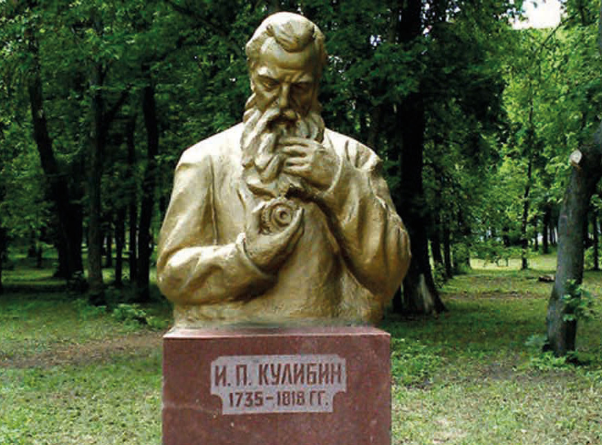
|
|
Благодаря каким изобретениям имя Кулибина прочно вошло в русскую историю? |
1. Детство и юность Кулибина.
2. Часы «яичной фигуры».
3. Модель моста.
4. Фонарь-прожектор.
5. Водоходное судно.
6. Прочие изобретения.
7. Великий нижегородец.
● Кулибин
● Екатерина II
● Мост через Неву
● Часы «яичной фигуры»
● Фонарь-прожектор
● Водоходное судно
►
1 Детство и юность Кулибина. Талантливый изобретатель и механик Иван Петрович Кулибин родился в Нижнем Новгороде в 1735 году в семье небогатого торговца мукой. Отец заставлял сына помогать ему в торговле, а мальчику хотелось заниматься созданием разнообразных «игрушек» — флюгеров, водяных колёс на ручьях. Грамоте Ваню учил дьячок местной церкви, а когда пришло время выбирать профессию, Иван Петрович решил посвятить себя механике и пошёл в ученики к токарю, осваивая одновременно слесарное и часовое дело. В 15 лет Кулибин к всеобщему удивлению нижегородцев, починил сломанные часы-куранты на Строгановской церкви. После этого к нему стали обращаться горожане с заказами на починку часов. После смерти отца 23-летний Кулибин на доставшееся наследство открыл небольшую часовую мастерскую.
|
|
Посмотрите на портрет И. П. Кулибина и скажите, как называется прибор, изображённый рядом с Кулибиным. |
Коренной поворот в жизни принесли Кулибину часы «яичной фигуры».
Мысль об изготовлении часов, которые бы не только отсчитывали время, но также играли музыку и показывали театральное действие, подал Кулибину друг его отца купец М. А. Костромин.
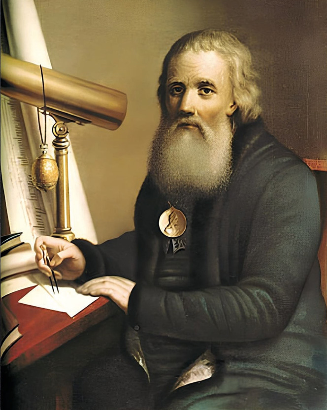
Портрет Ивана Петровича Кулибина
Художник П. А. Веденецкий
1818
Государственный Эрмитаж
►
Идея заключалась в том, чтобы подарить необычные часы самой Екатерине II. Для этого Костромин обещал материально содержать мастера и его семью на время, пока такие часы будут изготовляться. Кулибин с домочадцами переехал в дом к Костромину в деревню Подновье и начал трудиться над часами.
Случай помог Кулибину и Костромину представиться царице в 1767 году, когда она путешествовала по Волге. При посещении Нижнего Новгорода губернатор Я. С. Аршеневский организовал встречу императрицы с Кулибиным, в ходе которой мастер показал неоконченные часы, прочитав при этом сочиненную им же стихотворную кантату, в которой прославлял Екатерину. Впечатлённая талантливым мастером императрица предложила механику по завершении работы над часами прибыть в Петербург. В 1769 году Кулибин в сопровождении Костромина прибыл в столицу, подарил готовые часы Екатерине, за что Иван Петрович и его друг были тепло встречены Екатериной и щедро награждены. Доказав своё мастерство в деле механики и изобретательства, Кулибин был приглашён на должность главного смотрителя «инструментальной, слесарной, токарной, столярной и иных палат» Академии наук в Петербурге.
2 Часы «яичной фигуры». Среди многочисленных предметов, изготовленных Кулибиным, часы «яичной фигуры» являются наиболее известными. Работа над часами продолжалась пять лет, с 1764 по 1769 год. Часы состоят из 427 деталей. Они не только показывают время, но также играют музыку и представляют театральное действие.
В конце каждого часа в верхней половине часов открываются дверки, зрители видят золочёный чертог с Гробом Господним, в который ведёт затворенная дверь, охраняемая двумя воинами с копьями. Через полминуты появляется Ангел, дверь открывается, а воины падают на колени. К распахнутой двери подходят жены-мироносицы, а часы при этом трижды играют песнопение «Христос Воскресе из мертвых!». Во второй половине дня играется другое песнопение — «Воскрес Иисус из гроба!», а ровно в полдень звучит гимн, сочинённый самим Кулибиным. ►
Создание необычных часов и дарение их императрице стали началом успешной карьеры Кулибина и открыли перед мастером большие перспективы с возможностью заниматься любимым делом за хорошее материальное вознаграждение. В наше время часы «яичной фигуры» хранятся в Эрмитаже. Они и сейчас исправны, удивляют зрителей сложностью и точностью механизма.
3 Модель моста. Санкт-Петербург стоит на широкой и многоводной реке Неве. При этом во времена Екатерины II в городе не было сколь-нибудь надёжного моста. Был временный мост на понтонах (плашко́утах), который осенью и весной разбирали. Жители были вынуждены переходить из одной части города в другую по льду Невы, рискуя провалится в прорубь. Кулибин решил, что следует перекрыть Неву одним пролётом арочного моста, который будет упираться концами на оба берега реки. С учётом того, что ширина Невы в месте предполагаемого строительства моста была 140 саженей (300 метров), такой мост должен был быть уникальным сооружением, так как в то время такого длинного арочного моста не было ни в одной стране мира. Кулибин составил чертеж и проект моста. Была сделана деревянная модель в 10 раз меньшая, чем мост, но в тех же пропорциях.
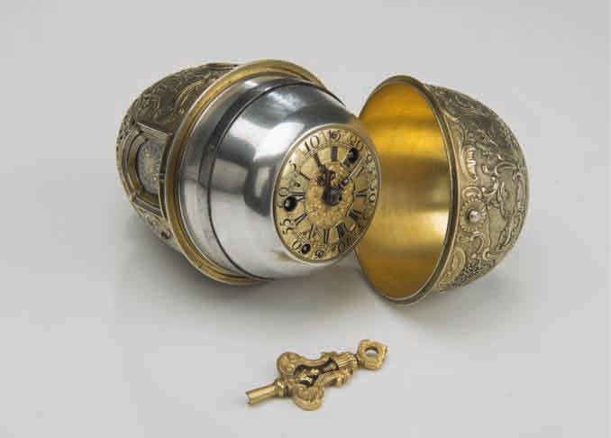
Кулибинские часы «яичной фигуры»
►
27 декабря 1776 года настал день испытания модели, которую должна была принять комиссия в составе видных учёных Академии наук. Для испытания прочности сооружения на него следовало положить груз весом в 3000 пудов (48 тонн). Мост выдержал. Тогда Иван Петрович дал команду погрузить ещё 500 пудов и предложил комиссии подняться на мост. Мост простоял под нагрузкой 20 дней и ничуть не сдал.
Комиссия составила журнал испытаний, в котором было записано, что расчёты верны, что мост имеет огромный запас прочности; что его высота позволяет парусным судам свободно проходить под ним. В итоге комиссия приходила к выводу, что проект правильный, и мост можно строить. Это решение было представлено Екатерине. Она приказала наградить Кулибина, но мост так и не построили. Модель перевезли в Таврический сад и установили через канал. Там уникальный мост служил для развлечения публики.
|
|
Предположите, почему мост по проекту Кулибина так и не был построен. |
4 Фонарь-прожектор. В XVIII веке, когда дома побогаче освещались свечами, жилища победнее лучинами, а на улицах для освещения использовались ма́сляные фонари и факелы, Кулибин изобрёл фонарь особой конструкции.
Проект кулибинского моста
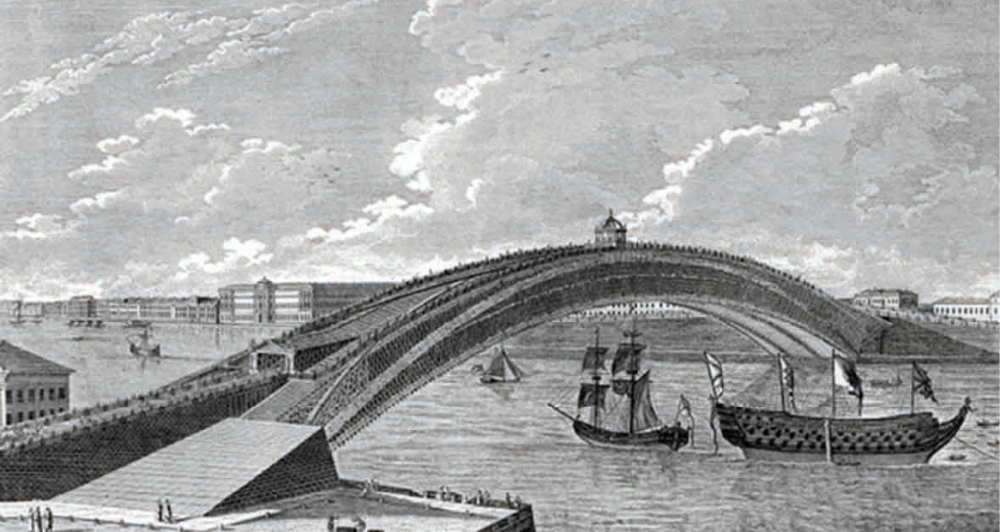
►
В 1779 году механик представил чудо-фонарь, а фактически первый в мире прожектор. Смысл изобретения состоял в том, что одна-единственная свеча, отражаясь от размещенных в вогнутой полусфере зеркальных отражателей, давала сильный и направленный поток света. Благодаря системе зеркал сила света увеличивалась в 500 раз. Свечение было настолько мощным, что позволяло читать на улице даже ночью. «Кулибинский фонарь» был положительно принят Академией наук, расхвален в прессе и одобрен императрицей. Такие фонари разной величины освещали коридоры, мастерские, конюшни, фабрики и мастерские.
5 Водоходное судно. В 1801 году Кулибин вышел на пенсию и вернулся в Нижний Новгород. Но сидеть без дела он не хотел. Сил у него было вполне достаточно, чтобы продолжать заниматься созданием новых проектов. На этот раз он задумал создать речное судно, способное самостоятельно двигаться против течения. Прибыв в Нижний Новгород, он много работал над созданием такого судна.
По замыслу Кулибина, водоходное судно приводилось в движение течением реки. Несмотря на успешные испытания, использовать водоходы не стали.
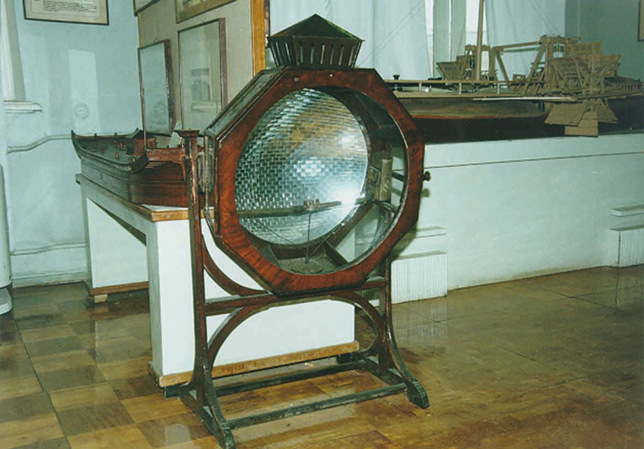
Кулибинский
фонарь-прожектор
►
|
|
Посмотрите на рисунок «Водоходное судно». Предположите, какую роль здесь выполняет якорь. |
6 Прочие изобретения. В 1791 году Кулибин создал трехколёсную повозку-самокатку, которую приводил в движение слуга, двигая педали. Благодаря подшипникам самокатка «катилась довольно резво». Аналогичный механизм применяется в современных детских машинках с педальным приводом.
В 1791 году окончилась русско-турецкая война, и к Кулибину обратился молодой офицер Непейцин. На войне с турками он потерял ногу и попросил сделать ему протез. Механик выполнил просьбу ветерана: протез был удобен в эксплуатации, гнулся так, что можно было надеть чулок и на него туфлю. В Европе такие протезы были изобретены лишь через 20 лет в начале XIX века.
Одним из изобретений Кулибина был лифт, построенный в Зимнем дворце в 1793 году по просьбе стареющей Екатерины II, которой стало трудно подниматься на второй этаж.
В 1794 году Иван Петрович представил в Академии наук свой проект оптического телеграфа для передачи сигналов на большие расстояния. Проект был одобрен, но телеграф не был построен из-за нехватки средств.
Водоходное судно
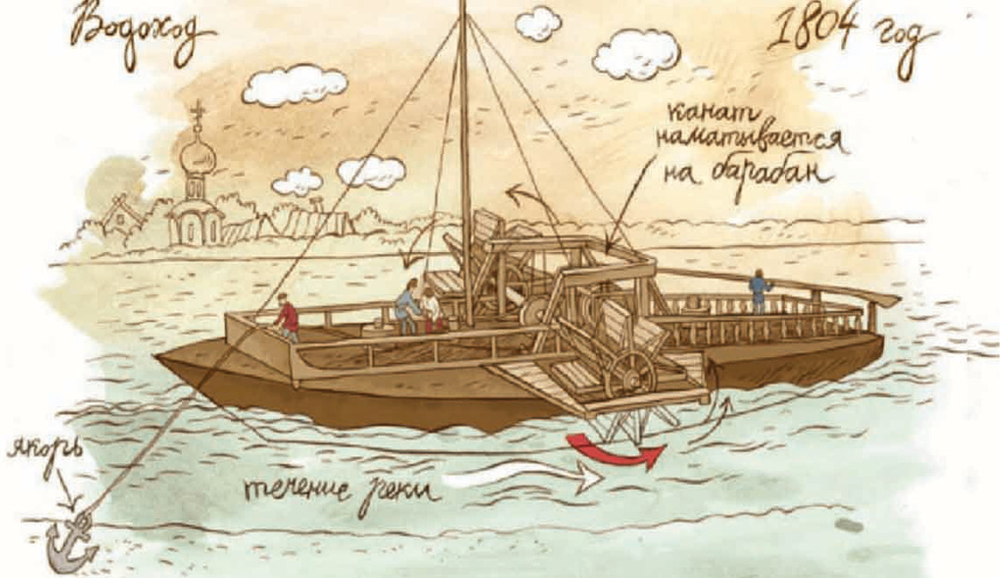
►
7 Великий нижегородец. Техническая мысль и практика XVIII века характеризовались не только Кулибиным. История сохранила имена других изобретателей того времени: творца паровой машины И. И. Ползунова, создателя завода-автомата на основе водяного двигателя К. Д. Фролова, создателя механической прядильной машины Р. Глинкова, — но на их фоне Кулибин был самым универсальным изобретателем. Он занимался изготовлением часов, оптикой, мостостроением, судостроением, изготовлением научных приборов для опытов: телескопов, микроскопов, астролябий, электрических машин.
Прожив долгую и насыщенную жизнь, гениальный изобретатель скончался 30 июля 1818 года в возрасте 83 лет.
Память об И. П. Кулибине сохраняется в Нижнем Новгороде. В парке имени Кулибина (в прошлом кладбище) есть надгробие, мемориальный знак с чертежами и бюст Кулибина. К памятным местам также следует отнести Строгановскую церковь, часовой механизм на колокольне которой был им отремонтирован. Около Успенской церкви на Ильинской горе стоял дом семьи Кулибина, в котором он жил, когда вернулся в Нижний Новгород. Дом вместе с ценными чертежами и имуществом сгорел во время пожара в сентябре 1813 года.
|
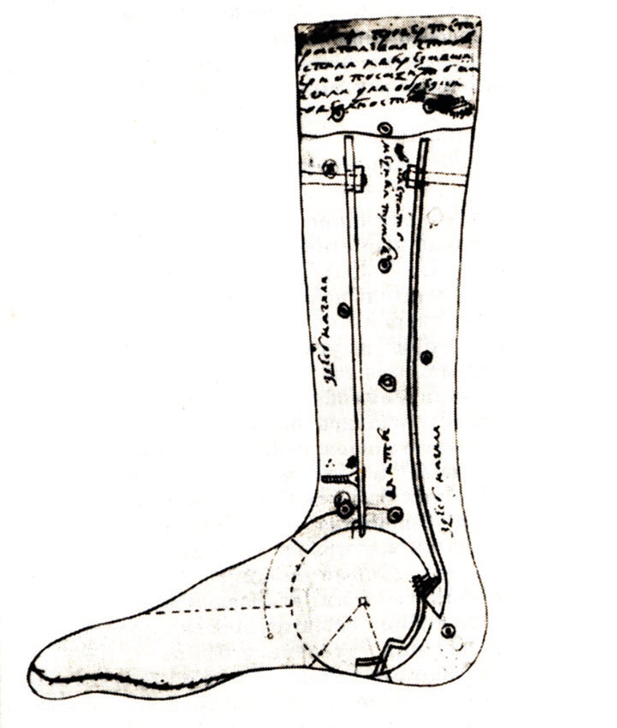 |
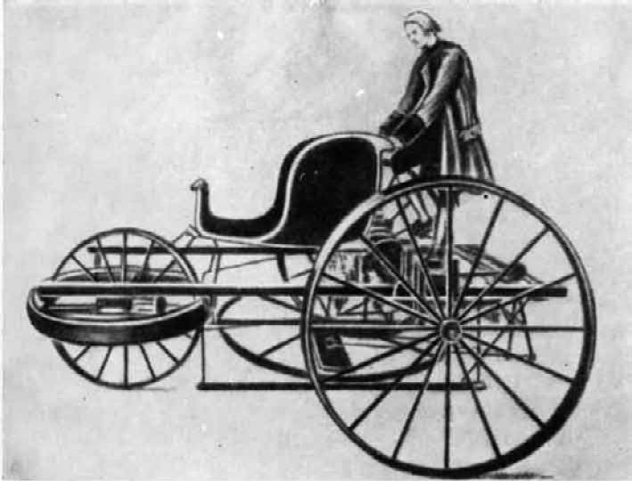 |
|
● Чертёж протеза, разработанный И. П. Кулибиным |
● Повозка-самокатка |
►
В Нижегородском районе есть улица Кулибина. Имя Кулибина носит Нижегородское речное училище. В стена́х Волжского государственного университета водного транспорта работает музей речного флота. В нём демонстрируется модель кулибинского водохода.
Подведём итоги
Иван Кулибин вошёл в историю как уникальный механик-изобретатель. Его работы можно разделить на три большие группы: проекты в области мостостроения и судоходства, изобретения в часовом деле и разработки в области транспорта. Не все изобретения были реализованы из-за их высокой стоимости и консерватизма инженерной среды той поры. В Нижнем Новгороде его именем названы парк культуры и отдыха, речное училище, улица и туристический теплоход. Фамилия Кулибина стала нарицательной — «кулибиными» называют умельцев — мастеров оригинальных самодельных устройств.
|
|
Обратите внимание |
1735—1818 — годы жизни И. П. Кулибина.
|
|
Сформулируйте вывод по теме параграфа, приведите два аргумента. |
|
|
Составьте небольшой устный рассказ с использованием дат, личностей, терминов, помещённых в начале параграфа. |
|
|
Вопросы и задания |
1. Какую роль в судьбе талантливого механика Ивана Кулибина сыграл купец М. А. Костромин?
2. Как к Кулибину относилась Екатерина II?
3. Выпишите в тетрадь указанные в параграфе 6 изобретения Кулибина. Какое и из них вас особенно удивило? Объясните, почему.
4. Что лишнее в перечне изобретений Кулибина и почему: часы «яичной фигуры», фонарь-прожектор, паровая машина, водоходное судно, повозка-самокатка, ножной протез, мартеновская печь?
►
§ 7
Культурная и духовная жизнь
Нижегородского края в хviii веке
Пётр I бреет бороды боярам
Лубок (народная картинка)
|
|
Какие новые черты появились в культурной и духовной жизни Нижегородского края в XVIII веке и как они сочетались с сохранением традиционных устоев? |
1. Возникновение и развитие системы образования.
2. Зарождение литературной и театральной жизни Нижнего Новгорода.
3. Нижегородская архитектура. Архитектор Я. А. Ананьин.
4. Духовная жизнь и быт народов Нижегородской губернии.
● Духовное образование
● Светское образование
● Епархиальная школа
● Духовная семинария
● Главное народное училище
● Малое народное училище
● Кружок литераторов
● Театр Шаховского
● Московское барокко и классицизм в архитектуре
● Абыз
►
1 Возникновение и развитие системы образования. В XVIII веке в нашем крае происходило становление духовного и светского образования. Духовным (религиозным) образованием занимались епархиальные школы и духовные семина́рии. Ими управляли религиозные организации. Первые епархиальные школы были созданы по указу Петра I в Санкт-Петербурге и Нижнем Новгороде. В епархиальных школах обучали Закону Божьему, письму, арифметике, греческому языку, другим предметам. В 1738 году была основана Нижегородская духовная семинария. В ней преподавались богословские и общеобразовательные дисциплины. В епархиальных школах и духовной семинарии учились дети духовенства, обучение было пронизано религиозной верой, правилами и традициями церковной жизни. После учебы выпускники этих заведений становились священнослужителями.
|
|
Как вы думаете, почему священнослужители должны были обязательно быть грамотными людьми? |
Светское образование создавалось государством с целью обучения детей основам грамотности и подготовки специалистов разного профиля. В 1718 году в Нижнем Новгороде открылась цифи́рная школа — начальная школа для детей дворян, солдат и служилых людей. В ней обучали чтению, письму, арифметике («цифирной мудрости») и геометрии. В конце ХVIII века в результате реформы в губернских городах открывались главные народные училища, в уездных — малые народные училища, вводились предметное преподавание и классно-урочная система. В Нижнем Новгороде было создано Главное народное училище. В нем обучались дети купцов и мещан в возрасте от 6 до 12 лет. Обучение было пятилетним и бесплатным. Выпускники поступали в университеты или работали учителями. В уездных городах открылись малые народные училища — Арзамасское, Лысковское, Балахнинское. В них учились один год дети всех возрастов и социального положения. Они обучались письму, чтению, счёту, географии, Закону Божьему. Детям из бедных семей бесплатно выдавали учебники и письменные принадлежности.►
2 Зарождение литературной и театральной жизни Нижнего Новгорода. В 80—90-х годах XVIII века в Нижнем Новгороде зарождается литературно-общественная жизнь. Связано это было с появлением кружка литераторов. В кружок входили Савва Сергиевский — знаток французского языка, переводчик, Я. П. Чаадаев — отставной полковник, помещик из Ардатова, автор нескольких комедий. Кружок посещал Я. В. Орлов — преподаватель истории и географии народного училища, поэт и краевед. Участником объединения был чиновник, знаток русской истории и поэзии, автор первой печатной биографии Кузьмы Минина Н. С. Ильинский. В состав кружка входили епископ Дамаски́н (в миру Дмитрий Семёнов-Ру́днев) — ректор Нижегородской духовной семинарии, учёный и просветитель, Г. Н. Городчанинов — уроженец Балахны, будущий профессор русской словесности Казанского университета, С. А. Москотильников — поэт, переводчик, чиновник Нижегородского губернского правления. Участники кружка обсуждали новые книги, журналы, альманахи, читали свои произведения. Деятельность кружка литераторов способствовала появлению городской типографии. Она издавала книги, в том числе местных литераторов. Широкую известность в то время получил писатель из Нижнего Новгорода В. Я. Баранщиков, описавший свои путешествия по миру.
Епископ Дамаскин
►
Со второй половины XVIII века в Нижний Новгород из дворянских имений иногда привозили крепостных артистов и с их участием разыгрывались театральные представления. В 1798 году князь Н. Г. Шаховской, владелец села Юсупова Ардатовского уезда, с разрешения губернатора сделал свой домашний театр с крепостными актерами публичным, общественным. Так со спектакля по комедии Д. И. Фонвизина «Выбор гувернёра» началась история нижегородского театра. В его театре было три труппы — драматическая, оперная и балетная и насчитывалось более 100 крепостных актёров. В их числе было немало ярких талантов, но главным украшением театра считались певица Роза, актёр Минай Поляков и сестры Семёновы. Князь сам подбирал пьесы для постановок, формируя репертуа́р театра. Ставились комедии, трагедии, водевили, оперы и балеты. Публичный театр обогатил культурную жизнь губернского города.
|
|
В наше время в Нижнем Новгороде более 20 театров. Узнайте, какой из них ведёт своё начало от театра Шаховского. |
3 Нижегородская архитектура. Архитектор Я. А. Ананьин. В архитектуре нашего края этого времени преобладало храмовое зодчество. Было возведено множество храмов — в городах и сёлах края. С середины XVII века появляется стиль московского барокко. Для него характерны многоглавие куполов, устремлённость строения вверх, узорчатость фасадов, пышный деко́р, использование ярких цветов. В таком стиле была построена церковь Собора Пресвятой Богородицы (Рождественская), возведённая на средства купца Г. Д. Строганова. Большое развитие получило усадебное строительство. В имениях дворян возводились барские дома, разбивались сады и парки. Таковы усадьбы Шереметевых — Рукавишниковых (Богородский муниципальный округ), Грузинских — Турчани́новых (Чкаловский муниципальный округ, п. Катунки) и др.
Улучшался внешний вид Нижнего Новгорода. В 1770 году был утверждён первый градостроительный план города с его цент-ром — Нижегородским кремлём. У Дмитриевских ворот обустраи-валась площадь. В её центре находились Благовещенский собор и церковь Алексия Митрополита. ►
Здание присутственных мест
в Нижегородском кремле
(совр. Законодательное собрание Нижегородской области)
Архитектор Я. А. Ананьин
От площади улицы Большая Покровская, Алексеевская, Варварская, Тихоновская (ныне — Ульянова) застраивались каменными зданиями. В Нижнем посаде главной стала Рождественская улица. На плане кремль и улицы слились в общий ансамбль, который учитывал расположение города на горах.
В конце 1770-х годов в Нижний Новгород на должность первого губернского архитектора был назначен Я. А. Ананьин из Санкт-Петербурга. Он начал масштабное гражданское строительство. В кремле ремонтировались стены и башни, сносились старые строения, строились новые здания. В архитектуре города утвердился стиль классицизм.
Дом купца Костромина
Архитектор Я. А. Ананьин
Улица Большая Покровская, 4а
►
Для него характерны симметричность, завершённость и красота зданий, украшенных колоннами, прямоугольные окна, выступающая часть здания с крышей в виде треугольника. В этом стиле построены присутственные места в кремле, дом купца Костромина и другие здания.
4 Духовная жизнь и быт народов Нижегородской губернии. В XVIII веке на территории нашего края проживали русские, мордва, татары, чуваши, марийцы и другие народы, сохраняя свои веру и обычаи. Русские составляли более 90 % населения края. Церковный приход был центром духовной жизни православных прихожан. Они посещали храмы, воспитывали детей в любви к Богу и ближним, соблюдали другие православные традиции. Жизнь горожан контролировалась полицией. Летом им запрещалось топить печи в домах, чтобы избежать пожаров, поэтому во дворах устраивали временные кирпичные очаги. Едой нижегородцев были щи, супы из круп, рыба, пироги. В праздники и воскресные дни Благовещенская площадь заполнялась каруселями, выступлениями музыкантов, пением и плясками. Популярны были «кулачные забавы» (бои).
Последователи старой веры (старообрядцы), спасаясь от преследований властей, уходили в леса Заволжья, селились на реках Ветлуга и Керженец, сохраняя свои обычаи. Духовным центром их общины был молельный дом.
Крестьянское семейство перед обедом
Художник Ф. Г. Солнцев
1824
Государственная Третьяковская галерея
►
Дети в семьях с младенчества приучались к работе. При Екатерине II старообрядцев перестали преследовать, но за сохранение своей веры они обязаны были платить налог.
Другие народы нашего края обладали самобытной материальной и духовной культурой, имели свои религиозные верования и традиции. Татары-мишари́ являлись частью татарской нации, проживали на юго-востоке Нижегородчины. Их предки в XV—XVI веках (служилые татары) за военную службу и охрану границ получали земельные наделы и денежное жалованье. В начале XVIII века служилые татары были переведены в разряд государственных крестьян, занимались земледелием, ремеслами, торговлей и несли повинности в пользу государства. Они исповедовали ислам и строго следовали его моральным нормам в повседневной жизни. До середины XVIII века царская власть запрещала их веру, но татары ее берегли. В татарских селениях важную роль выполнял абы́з — духовный руководитель общины. Он владел грамотой, обладал житейским опытом, разрешал споры и принимал важные решения для общины, прививал детям любовь к книгам и знаниям.
Мордва, марийцы, чуваши до прихода русских были язычниками. Процесс мирной колонизации (заселения русскими Волго-Окского междуречья) сопровождался обращением этих народов в православие, особенно в ХVIII веке. За это им предоставлялись экономические и иные льготы. Христианизация сопровождалась открытием новых храмов и школ, распространением грамотности. Но, посещая православные храмы, эти народы продолжали соблюдать дохристианские языческие обряды.
Долгие годы народы, исповедовавшие нехристианскую религию, подвергались в России притеснениям, вплоть до того, что им приходилось платить двойные налоги. В 1773 году в Российской империи был издан указ «О терпимости всех вероисповеданий». Утверждалась политика диалога с мусульманскими народами, включая нижегородских татар. В татарских сёлах разрешили строить мечети, открывать при них школы (медресе́). В 1790 году в 27 селениях Нижегородского наместничества насчитывалось 28 мечетей, в трёх из них (Ендови́щи, Ка́мкино, Ключи́щи) действовали медресе. ►
|
|
Знакомимся с историческим источником |
Из Устава о народных училищах в Российской империи (1786 год)
...§ 58. Ученики должны почитать своих учителей, повиноваться их приказаниям и исполнять оные с точностью; за ослушание же учителю, непочтение и леность подлежат наказаниям, предписанным в «Руководстве учителям I и II классов» в части IV, во II главе о школьной строгости.
§ 59. Все ученики должны снабдить себя книгами, к классу их принадлежащими, а притом иметь с собою в готовности бумагу, перья и другие к письму, рисованию и иным наукам принадлежности.
§ 60. У каждого ученика главного народного училища высших классов должна быть особливая тетрадь, в которой ему записывать учителевы изъяснения во время часов учебных...
Подведём итоги
В культурной жизни Нижегородского края в ХVIII веке активное участие принимали как церковные, так и светские деятели. Сторонниками развития церковного образования выступали нижегородские иерархи, под руководством которых была создана и функционировала Нижегородская семинария. Наряду с ней развивалась система светского начального и среднего образования. Зародилась литературная и театральная жизнь Нижнего Новгорода. В нижегородской архитектуре активно проявлял себя классический стиль. В меньшей степени эти нововведения были в духовной жизни и быте народов Нижегородской губернии, у которых продолжали преобладать традиционные духовные ценности.
|
|
Исторический словарь |
Деко́р — совокупность элементов, используемых для украшения здания.
►
Медресе́ — мусульманское религиозно-просветительское и учебное заведение второй ступени (среднее).
Репертуа́р — перечень театральных пьес на определенный период времени.
Семина́рия — учебное заведение для профессиональной подготовки духовенства и преподавателей начальной школы.
|
|
Обратите внимание |
1770 год — первый градостроительный план Нижнего Новгорода.
1786 год — основание Главного народного училища в Нижнем Новгороде.
1798 год — основание Нижегородского театра.
Яков Ананьевич Ананьин — первый губернский архитектор.
Дамаскин (Дмитрий Семёнов-Руднев) — нижегородский епископ, ректор семинарии, учёный и православный просветитель.
|
|
Сформулируйте вывод по теме параграфа, приведите два аргумента. |
|
|
Вопросы и задания |
1. Какие церковные и светские учебные заведения действовали в нашем крае в XVIII веке? Что нового появилось в сфере нижегородского образования в XVIII веке по сравнению с XVII веком?
2. Перечислите основные занятия или сферы деятельности активных участников кружка литераторов в Нижнем Новгороде и назовите мотивы и цели их встреч.
3. Назовите этнический и религиозный состав населения Нижегородского края в ХVIII веке.
4*. Используя материалы учебника и дополнительные источники, подготовьте электронную презентацию «Николай Григорьевич Шаховской — основатель нижегородского публичного театра».
5*. Назовите архитектурные стили в нижегородской архитектуре ХVIII века, их характерные особенности с конкретными примерами строений.
►
6*. Используя источники и литературу, подготовьте исследовательский проект «Дворянская (купеческая) усадьба на моей малой родине».
|
|
Составьте небольшой устный рассказ с использованием дат, личностей, терминов, помещённых в начале параграфа. |
|
|
Сформулируйте один-два вывода по теме главы. Приведите два-три аргумента. |
Вопросы и задания к главе II
1. Назовите сходство и различие в особенностях развития Нижегородского края ХVII и ХVIII веков.
2*. О ком говорится в стихотворении учителя поэта и краеведа Я. В. Орлова «Разговор с эхом»:
О, Нижний! Мининым прославленный стократ,
Не всякий ли тебе уступит в этом град?
...Механик сей от нас во град Петров утек,
Сколь долго проживет сей умный человек?
...Простой он человек, нигде он не учился,
Но механизм его кому б не полюбился?
...Пошел он и дошел: часы сам делать стал,
Голландец пред его моделию ниспал?
3. Русский литературно-педагогический памятник начала XVIII века «Юности честно́е зерца́ло, или Показание к житейскому обхождению, собранное от разных авторов» гласило, что отрок должен быть «бодр, трудолюбив, прилежен, всегда время проводить в делах благочестных, а гордость мало добра приносит, и кто сих добродетелей не имеет, не только не может никого ни превзойти, ни между другими просиять». Предположите, почему гордость называют матерью пороков?
4. Решите задачу из школьного учебника «Арифметика, си́речь наука числительная…» Леонтия Магницкого, изданного в 1703 году по повелению Петра I: «Идёт один человек в другой город и проходит в день по 40 вёрст, а другой человек идёт навстречу ему из другого города и в день проходит по 30 вёрст. Расстояние между городами 700 вёрст. Через сколько дней путники встретятся?».
►
5. Административная реформа Екатерины II: картографический проект.
Тема: Создание Нижегородского наместничества.
Задание: На основе исторических данных создайте интерактивную карту Нижегородского наместничества 1779—1796 годов.
Используя материалы учебного пособия и краеведческие источники, нанесите на цифровую карту:
1. Уездный центр (на выбор: Балахна, Арзамас, Васильсурск, Горбатов, Лукоянов и др.) или «знатные сёла» (на выбор: Павлово, Богородское, Ворсма и др.).
2. Основные транспортные пути (реки, дороги).
3. Подготовьте краткую информацию, указав особенности экономики, известных жителей или события.
6. Подготовьте проект «Воспитание детей в мусульманской семье».
Итоги главы
Правление Петра I стало переломной вехой в нижегородской истории. Начались модернизация и обновление всех сфер жизни нашего края.
XVIII век стал переходным в истории России, когда от Средневековья страна перешла к Новому времени. Этому в немалой степени способствовала политика Петра I и Екатерины II, которые создали мощные армию и флот. Россия открыла себе дорогу к Балтийскому и Чёрному морям, что способствовало становлению торговли и культурных связей с передовыми странами.
В XVIII веке Нижний Новгород посещали Петр I и Екатерина II. Это сыграло положительную роль в развитии края.
Были созданы Нижегородская губерния и Нижегородское наместничество.
Нижний Новгород прославила деятельность талантливого механика и изобретателя И. П. Кулибина.
Ярким показателем движения Нижнего Новгорода вперед стали развитие системы светского образования, зарождение литературной и театральной жизни, распространение классического стиля в архитектуре.
►
Глава III
НИЖЕГОРОДСКИЙ КРАЙ
В ПЕРВОЙ ПОЛОВИНЕ XIX ВЕКА
Нижний Новгород. Нижний базар
Художник А. П. Боголюбов. 1860-е годы
Государственный Русский музей
В начале XIX века основную часть населения Нижегородской губернии составляли крестьяне, большинство которых являлись крепостными. Кроме земледелия, многие крестьяне, особенно в северных районах, занимались отхожими и домашними промыслами. Города Нижегородчины в начале XIX века были невелики. В самом большом из них — Нижнем Новгороде проживало 10 000 человек. Развивались промышленность и культура. В 1849 го-ду был основан Сормовский судостроительный завод. С 1817 года Нижний Новгород, благодаря переносу в него ярмарки, стали называть «карманом России». А. С. Пушкин в 1830, 1833 и 1834 годах трижды посетил своё родовое имение Болдино, где создал более 60 произведений.
►
§ 8
Отечественная война 1812 года
и Нижегородский край
Ополчение 1812 года
Художник Г. Д. Алексеев. Начало ХХ века
Государственный исторический музей
|
|
Какой вклад внесли нижегородцы в победу России в Отечественной войне 1812 года и как события войны отразились на жизни края? |
1. Начало Отечественной войны и формирование Нижегородского ополчения.
2. Патриотическое движение в губернии по сбору средств на нужды обороны.
3. Боевой путь нижегородских ополченцев.
4. Нижегородцы — герои войны с Наполеоном.
5. Беженцы в Нижнем Новгороде.
● Отечественная война 1812 года
● Нижегородское ополчение
● Ратник ополчения
● Великая армия
● 6 июля 1812 года — издание Манифеста о создании ополчения
● 9—10 декабря 1812 года — выход ополчения из Нижнего Новгорода
►
|
|
Вспомните, какие враги нападали на русские земли на протяжении истории России. |
1 Начало Отечественной войны и формирование Нижегородского ополчения. Россия на протяжении своей тысячелетней истории много раз воевала. Редкие периоды обходились без военных столкновений. Среди них были и такие, которые назывались отечественными войнами. Как, например, Отечественная война 1812 года, когда Российская империя подверглась нападению Франции, которая создала Великую армию в составе войск из более чем 26 стран Европы во главе с французским императором Наполеоном Бонапартом. Таким образом, России пришлось вести войну с объединённой Европой, а не только с Францией.
|
|
Подумайте, что такое Отечественная война. В чём её отличие от обычной войны? |
12 (24) июня 1812 года началась Отечественная война. Под напором превосходящих сил противника русская армия отступала.
|
|
|
|
● Портрет Александра I (фрагмент) Художник Д. Доу. 1825 |
● Портрет П. А. Толстого Художник Д. Доу. 1820-е годы |
►
Одним из главных вопросов, с которым столкнулась Россия в начале войны, была острая нехватка воинской силы. Чтобы увеличить численность войска, требовалось срочно создать народное ополче́ние.
|
|
Вспомните, что такое народное ополчение. |
6 июля 1812 года Александр I подписал Манифест «О сборе внутри государства земского ополчения». В нём император взывал к исторической памяти народа, к традициям 1612 года, чтобы враг встретил «в каждом дворянине Пожарского... в каждом гражданине Минина». Создавались три ополченческих округа. Нижегородская губерния входила в Третий округ. Центром округа объявлялся Нижний Новгород. Начальником был назначен генерал-лейтенант граф П. А. Толстой, на которого возлагалась задача формирования и обучения ополчения. Ополчение Третьего округа должно было состоять из пяти пеших и одного конного полков. Воинов ополчения называли ратниками. Ратник должен был иметь возраст от 17 до 45 лет, приемлемое здоровье: «здоров и крепок и на защиту способен». В ополчение допускались дворяне, чиновники, городские жители, семинаристы, послушники монастырей. Помещикам предлагалось записывать в ополчение крепостных.
К формированию ополчения приступили в начале сентября. Каждому пешему ратнику полагалось ружьё со штыком, а если ружей не хватало, то пика и топор; кавалеристу выдавались пика, сабля и пистолет.
Кокарда ополченца
►
Обмундирование воинов состояло из кафтана серого цвета и такого же цвета шаровар, головного убора — суконной фуражки с кокардой в виде латунного креста и вензелем Александра I. Каждый ратник нёс на себе ранец с запасной одеждой, обувью и провиантом, фляжку и топор.
Собрать и снарядить ополчение было делом непростым, но не менее большого труда стоило за короткий срок обучить ополченцев военному делу. Боевая подготовка заключалась в маршировке, передвижении в боевых порядках и обращении с оружием: «Ружьё учить нести на плече правильно, заряжать, стрелять и действовать штыком».
8 ноября генерал П. А. Толстой получил указ с приказани-ем выступать на войну. 9—10 декабря нижегородские ополченцы: пять пеших полков (по 2455 человек) и один конный полк (653 человека) двинулись в поход по маршруту Муром — Рязань — Тула — Орел — Курск — Владимир-Волынский и далее в Польшу.
Нижегородские ополченцы
1812 года
►
2 Патриотическое движение в губернии по сбору средств на нужды обороны. Жертвователями на ополчение были те, кто давал деньги на вооружение, обмундирование, продовольствие, медикаменты и фура́ж, те, кто приводил лошадей, нёс вещи и припасы для победы над Наполеоном. В сборе средств участвовало всё население Нижегородской губернии — и дворянство, и купечество, и мещанство, и крестьяне, и духовенство.
Наиболее в сборе средств прославились: торговец канатами и хлебом Ф. П. Переплетчиков, купцы Л. И. Расторгуев и Н. Л. Стариков, промышленник И. Р. Баташев. Не отставало и дворянство. Помещики от каждой сотни своих крепостных крестьян должны были отобрать для зачисления в ополчение четырёх человек.
Большой вклад в фонд обороны внесло нижегородское духовенство, а епископ Нижегородский и Арзамасский Моисей благословил детей священнослужителей и семинаристов на запись в ополчение.
Активности жертвователей способствовала энергичная деятельность губернатора А. М. Руновского.
Нижегородцы с успехом справились с задачей по сбору средств на нужды обороны. Всего в Нижегородской губернии была собрана колоссальная по тем временам сумма — более 1 миллиона рублей.
Портрет Л. И. Расторгуева
►
3 Боевой путь нижегородских ополченцев. Когда 9 декабря 1812 года ополчение выступало из Нижнего Новгорода, Великая армия была фактически разгромлена, а Наполеон, бросив на произвол судьбы своих солдат, мчался в Париж собирать новое войско. В царском манифесте «О принесении Господу Богу благодарения за освобождение России от нашествия неприятельского» от 25 декабря 1812 года (в праздник Рождества Христова) Отечественная война объявлялась законченной. Таким образом, нижегородские ратники так и не успели принять участие в Отечественной войне. Однако ополченцев ожидал полный трудностей и лишений заграничный поход против вновь созданной армии Наполеона, которая опять численно превосходила действовавшие против нее войска. В 1813 году сражения с новой силой вспыхнули на этот раз на полях Западной Европы.
Заграничный поход Нижегородского ополчения проходил сначала по польским, а потом по германским землям.
В начале декабря 1813 года русская армия, в составе которой вое-вали и нижегородские ратники, взяла город Магдебу́рг в Пруссии. Последним большим сражением, в котором участвовали ополченцы, было взятие в составе союзных войск одного из крупнейших немецких городов Гамбурга.
В марте 1814 года отряд нижегородских ополченцев в составе союзных войск вступил в Париж. Боевая эпопея нижегородцев, прошедших от Волги до Сены, победоносно завершилась. Многие ополченцы получили за героизм в сражениях ордена и медали.
Знамя Нижегородского ополчения
1812 года
►
В октябре 1814 года вышел указ императора Александра I о расформировании ополчений. Те из ратников, которым довелось остаться живыми, возвратились домой.
4 Нижегородцы — герои войны с Наполеоном. Осознание справедливости борьбы за свободу и независимость Родины в оте-чественных войнах всегда порождало массовый героизм их участников, в том числе и среди нижегородцев.
В сражении под Клястицами Витебской губернии в июле 1812 года отличился генерал В. П. Мезенцев. В Бородинской битве 26 августа 1812 года в центре русских позиций стойко держала оборону дивизия генерала А. Н. Бахметева. На неё обрушился жестокий артиллерийский огонь. Вражеское ядро оторвало А. Н. Бахметеву правую ногу. Храбрость и стойкость во время войны проявили также подполковник А. В. Ровинский, майор Ф. А. Токарев и другие.
Ярким примером мужества нижегородских ополченцев стали события под Магдебургом и Гамбургом.
Вступление русских и союзных войск в Париж в 1814 году
Художник А. Д. Кившенко. 1880
Центральный военно-морской музей
►
25 октября 1813 года они участвовали в сражении, которое повлияло на сдачу французами дрезденской крепости. Израсходовав все патроны, ополченцы в рукопашной атаке опрокинули колонну неприятеля и преследовали его. За этот бой были награждены генерал-лейтенант П. А. Толстой, генерал-майор Н. С. Муромцев, полковник Я. И. Каратаев.
В Нижнем Новгороде сохранился своеобразный памятник войне 1812 года. Это дом Белавиных на улице Большой Покровской. Фронтон дома украшает лепной декор в виде тройного перевитого «венка славы». «Венок славы» — типичный элемент украшения домов, построенных в память о победе в Отечественной войне 1812 года.
В знак победы над Наполеоном и в память о погибших отважных сынах России в губернии ставились церкви. Наиболее известным из таких памятников на Нижегородчине стал величественный Воскресенский собор в Арзамасе, построенный по проекту архитектора М. П. Коринфского на средства жителей Арзамаса.
5 Беженцы в Нижнем Новгороде. Одна из примет войны состояла в эвакуации (вывозе в безопасные места) населения, ценностей и учреждений с территорий, которым угрожали военные действия и оккупация войсками противника.
В 1812 году особые масштабы приняла эвакуация из Москвы в Нижний Новгород в связи с решением русского командования отступить из Москвы после Бородинской битвы.
Дом с «венком славы»
Улица Большая Покровская, 40б
►
Со второй половины сентября 1812 года Нижний Новгород наводняют обозы, на которых эвакуируются чиновники Московского архива Коллегии иностранных дел, Сената, Государственного казначейства. В Нижний Новгород вывозятся государственные документы и материальные ценности, в числе которых были сокровища Оружейной палаты. Всё это надежно укрывалось под караулом в кремлёвских башнях, а правительственные учреждения размещались в административных зданиях Нижнего Новгорода.
В 20-х числах сентября в город прибыло несколько обозов Московского университета с профессорами, студентами, лабораторным оборудованием и коллекциями. В числе беженцев был известный писатель и историк Н. М. Карамзин, поэты К. Н. Батюшков, Ю. А. Нелединский-Мелецкий, В. Л. Пушкин, издатель С. Н. Глинка, писатель И. М. Муравьёв-Апостол. Они часто собирались в доме у Карамзина (совр. адрес ул. Пискунова, 2), где беседовали о ходе войны, об исторических судьбах России. Параллельно с учреждениями в город целыми семьями прибывали москвичи, не пожелавшие оставаться в оккупированной Москве. К. Н. Батюшков, оказавшийся в Нижнем на положении беженца, писал своему другу, что в трёх комнатах, где он квартирует, живут семеро взрослых, трое детей и шесть собак: «Нет угла, где бы можно было поворотиться». Большинство приехали в Нижний «без денег, без необходимых вещей, с одной рубашкой».
Воскресенский собор
в Арзамасе
Архитектор М. П. Коринфский
1814—1842
►
В. Л. Пушкин — дядя А. С. Пушкина и тоже поэт, обращаясь к нижегородцам, написал стихи «К жителям Нижнего Новгорода»:
Примите нас под свой покров,
Питомцы волжских берегов.
Примите нас, мы все родные!
Мы — дети матушки Москвы...
Веселья, счастья дни златые,
Как быстрый вихрь, промчались вы!
Примите нас под свой покров,
Питомцы волжских берегов!
Чад, братий наших кровь дымится,
И стонет с ужасом земля!
А враг кровавый веселится,
На башнях древнего Кремля!
Примите нас под свой покров,
Питомцы волжских берегов!
Закончился героический 1812 год. Война покинула пределы России. Один за другим беженцы из Нижнего Новгорода разъехались по родным городам и весям, сохранив добрую память о гостеприимных нижегородцах.
|
|
|
|
● Портрет Н. М. Карамзина |
● Портрет К. Н. Батюшкова |
►
|
|
Знакомимся с историческим источником |
Из указа императора Александра I
от 30 августа 1814 года
Декабря 25 число, день Рождества Христова, да будет отныне и днем благодарственного празднества под наименованием в кругу церковном: Рождество Спасителя нашего Иисуса Христа и воспоминание избавления Церкви и Державы Российской от нашествия галлов и с ними двадесяти язык.
По окончании обычной совершаемой в день сей службы приносить особое благодарное молебствие с коленопреклонением...
Во весь день быть колокольному звону.
Подведём итоги
В период Отечественной войны 1812 года Нижний Новгород стал одним из центров мобилизации антинаполеоновских сил. Нижегородцы участвовали в сборе средств для армии, здесь формировалось народное ополчение. В 1812 году в Нижний Новгород из Москвы были эвакуированы многие правительственные учреждения и видные московские учёные и литераторы. Нижегородскому ополчению не довелось участвовать в военных действиях на территории России, но в 1813—1814 годах ополченцы успешно участвовали в Заграничном походе русской армии. В войне 1812 года нижегородцы показали себя достойными сынами Отечества.
|
|
Исторический словарь |
Ополче́ние — войсковое формирование, создаваемое в условиях военного времени из гражданских лиц, преимущественно на добровольных началах, в помощь правительственной армии.
Отечественная война — освободительная, справедливая война с иностранным агрессором за честь, свободу и независимость Отечества, в которой участвует весь народ.
Фура́ж — растительный корм, предназначенный для питания сельскохозяйственных животных.
►
|
|
Обратите внимание |
12 июня — 25 декабря 1812 года — Отечественная война 1812 года
1813—1814 годы— Заграничный поход русской армии.
Октябрь 1814 года — указ о расформировании ополчений.
|
|
Сформулируйте вывод по теме параграфа, приведите два аргумента. |
|
|
Вопросы и задания |
1. Можно ли считать, что в 1812 году Россия воевала не только с одной Францией, а с объединённой Европой?
2. Сравните, чем отличалось Нижегородское ополчение 1812 года от ополчения 1612 года, а что в них было общего.
3. Как правильно сказать:
А. «Нижегородское ополчение участвовало в боевых действиях Отечественной войны 1812 года»;
Б. «Нижегородское ополчение участвовало в боевых действиях в ходе Заграничного похода русской армии 1813—1814 годов».
4. Представьте, что вы участник Нижегородского ополчения 1812 года — кавалерист. Вам выдали оружие: пику, саблю и автомат. Всё ли в этом списке правильно?
5. Исключите лишнее слово: ополченец, ратник, солдат. Объясните ход своих рассуждений.
6. Прочитайте документ. О каком событии идет речь? Существуют ли памятники в честь данного события на вашей малой родине?
7. Назовите нижегородцев, отличившихся в сборе средств в фонд борьбы с Наполеоном.
8. Кто из известных россиян был в числе беженцев, получивших приют в Нижнем Новгороде во время войны с Наполеоном?
9*. Составьте презентацию по теме, связанной с событиями Отечественной войны и нижегородской историей.
|
|
Составьте небольшой устный рассказ с использованием дат, личностей, терминов, помещённых в начале параграфа. |
►
§ 9
Нижний Новгород — «карман России»
Панорама Нижегородской ярмарки
Литография. 1869
|
|
Как Нижегородская ярмарка превратилась в «карман России» — главный центр внутренней и международной торговли? |
1. Макарьевская ярмарка в начале XIX века.
2. Перевод ярмарки из Макарьева в Нижний Новгород (1817 год).
3. Бетанкур и строительство ярмарочного комплекса в Нижнем Новгороде.
4. Нижегородская ярмарка как центр российской и международной торговли.
5. Влияние ярмарки на жизнь Нижегородской губернии.
6. Развитие водного транспорта.
● 1816 год
● Гребнёвские пески
● 1817 год
● Августин Бетанкур
● Бетанкуровский канал
● Плашкоутный мост
● Огюст Монферран
►
1 Макарьевская ярмарка в начале XIX века.
|
|
Вспомните, когда появилась Макарьевская ярмарка и где она располагалась. |
В начале XIX века Макарьевская ярмарка оставалась крупнейшей в стране. Она поражала современников своим многолюдством и изобилием товаров. Здесь продавались меха и драгоценности, самовары, соль и рыба, хлеб и мёд. Сюда из степей пригоняли огромные конские табуны. Через Петербург на ярмарку поступала продукция из Западной Европы: сталь, сукно, бумага. Из Китая везли изделия из фарфора, из Ирана — ковры, из Индии — шелка и жемчуг. Нижегородские крестьяне сбывали здесь изделия своих промыслов. Особым спросом пользовалась деревянная посуда.
Расположение Макарьевской ярмарки на левом (низком) берегу Волги делало удобной разгрузку судов. Но весной при разливе реки вся её площадь заливалась водой. Поэтому гостиный двор и склады приходилось строить каждый год заново.
2 Перевод ярмарки из Макарьева в Нижний Новгород (1817 год). Большинство зданий Макарьевской ярмарки были деревянными. 18 августа 1816 года, вскоре после окончания ярмарочного сезона, они загорелись. Отсветы чудовищного пожара были видны даже в Нижнем Новгороде. Сначала правительство хотело восстановить уничтоженное огнем. Но нижегородский губернатор С. А. Быховец и нижегородский городской голова Ф. П. Переплетчиков выступили за возобновление ярмарки на новом месте — в Нижнем Новгороде.
Император повелел в виде опыта устроить в 1817 году ярмарку в Нижнем Новгороде. Для того чтобы определить постоянное место расположения ярмарки, из Санкт-Петербурга был прислан эксперт — выдающийся инженер-гидротехник Августин Бетанкур. Он должен был выбрать один из трех вариантов размещения торжища:
— у Макарьевского монастыря;
— в районе современной площади Сенной;
— в районе Стре́лки.
►
|
|
Вспомните, что такое Стрелка в Нижнем Новгороде. |
Бетанкур остановился на Стрелке. Однако предложил построить гостиный двор не на берегу, иначе его каждый год затапливало бы, а в некотором отдалении от него. Правительство с ним согласилось.
3 Бетанкур и строительство ярмарочного комплекса в Нижнем Новгороде. Общее руководство строительными работами на ярмарке было возложено на Августина Бетанкура. С собой он привёз способных помощников — молодых инженеров и архитекторов Петра Готмана, Ивана Ефимова, Антона Леера. Летом 1818 года под руководством Бетанкура развернулись грандиозные земляные работы. Территорию будущего гостиного двора гигантской подковой окружил обводной канал. Он предохранял ярмарку от пожара. Впоследствии этот канал стал называться Бетанкуровским. Его наполняла вода из Мещерского озера. Доступность воды позволила Бетанкуру провести канализацию, не имевшую аналогов в Европе.
|
|
|
|
● Портрет генерал-лейтенанта А. А. Бетанкура Художник П. С. Тюрин. 1859 Центральный музей железнодорожного транспорта РФ |
● Портрет Огюста Монферрана Художник Е. А. Плюшар. 1834 Государственный Русский музей |
►
Земля, вынутая при копке обводного канала, была использована для насыпи возвышенной площадки, на которой разместилась ярмарка. Кроме того, для торговли была приспособлена песчаная коса (теперь — остров) Гребнёвские пески. В 1818 году нижегородский купец И. С. Пятов, на личные средства, устроил здесь железный ряд.
Через Гребнёвские пески Бетанкур в 1818 году соединил оба берега Оки плашко́утным мостом.
|
|
Найдите на карте ярмарки плашкоутный мост. |
Тогда это был самый длинный мост в России. Он состоял из трёх секций. Средняя секция на ночь открывалась для прохода судов.
Автором проекта Главного ярмарочного дома и остальных ярмарочных зданий стал Огюст Монферран. Этот молодой французский художник приехал в Россию в 1816 году. Монферран постоянно жил в столице. Выезжая на зиму из Нижнего Новгорода в Санкт-Петербург, Бетанкур знакомил начинающего архитектора со своими замыслами, а тот мастерски создавал для них блестящую художественную форму.
Вид на Нижегородскую ярмарку
Фотография А. О. Карелина. 1870-е годы
►
В случае необходимости Бетанкур указывал Монферрану, какие исправления нужно внести в проект и находил остроумные инженерные решения возникавших технических проблем, создавая специальные строительные механизмы.
В центре ярмарки находился Главный ярмарочный дом. Его окружали 48 двухэтажных торговых корпусов, где внизу размещались лавки, а вверху жили их арендаторы.
Дальше находились четыре корпуса Китайских рядов. В них шла торговля китайским чаем.
Заканчивался бульвар площадью у Спасского собора.
Торжественное открытие нового торгового комплекса состоялось при огромном стечении народа 15 июля 1822 года. С тех пор Нижегородская ярмарка всегда открывалась 15 июля, а заканчивалась 25 августа.
Но на этом обустройство ярмарочной территории не закончилось. Его второй этап продолжался с 1822 по 1828 год и связан с именем Антона Леера. Под его руководством были возведены Армянская церковь и мечеть, поскольку среди торгующих было немало армян и мусульман. К концу 1820-х годов Нижегородская ярмарка представляла собой настоящий город с прямыми мощёными улицами и площадями.
Спасский Староярмарочный собор
Архитекторы О. Монферран и А. А. Бетанкур
1818—1822
►
4 Нижегородская ярмарка как центр российской и международной торговли. Корпуса Нижегородской ярмарки принадлежали казне, от имени которой действовало особое учреждение — ярмарочная контора. Она раздавала лавки желающим и взимала за это сбор в пользу государства. Возглавлял ярмарочную контору директор. Главным начальником на ярмарке был нижегородский губернатор. На лето он переезжал в Главный ярмарочный дом.
Обозы с товарами шли сюда со стороны Казани, Арзамаса, Мурома через Нижний Новгород. На ярмарку они переплавлялись по плашко́утному мосту. Для приёма товаров, доставляемых водным путём, были устроены три пристани: Сибирская (на правом берегу Волги до Стрелки), Петербургская (от Стрелки до плашкоутного моста) и Гребнёвская (от плашкоутного моста вдоль острова Гребнёвские пески). На этот остров сгружали уральское железо и астраханскую рыбу. У пристани ими и торговали.
На ярмарке продавалось 65 % всех азиатских товаров, привозимых в Россию. Основным из них был китайский чай. Нижегородская ярмарка снабжала чаем почти всю Россию. Из Средней Азии, Ирана поступали ковры, шёлк, сухофрукты.
Среди российских товаров главное место занимало уральское железо. Западноевропейские товары были представлены красками, винами, галантереей.
К середине XIX века торгующих на ярмарке было около 15 тысяч. Ежедневно ярмарку в целом посещало до 250 тысяч человек. Дворяне закупали здесь запасы на год. Довольно скоро гостиный двор стал для торгующих тесен, и ярмарка вышла за пределы Бетанкуровского канала. За ним стали строить новые ряды лавок, а также трактиры, бани, постоялые дворы и кузницы. К востоку от Бетанкуровского канала, в сторону Мещерского озера и Волги расположились места для развлечений: театр и самока́ты.
5 Влияние ярмарки на жизнь Нижегородской губернии. Именно с открытием Нижегородской ярмарки стали говорить: «Петербург — голова России, Москва — сердце России, Нижний Новгород — карман России».
►
|
|
Как вы понимаете выражение «Нижний Новгород — карман России»? |
Облик города изменился. Благодаря переносу ярмарки Нижний Новгород стал быстро расти. Сильно увеличилось его население. В начале XIX века оно составляло 10 тысяч человек, а в 1847 году уже 32 тысячи.
Особенно заметно изменилась Рождественская улица.
Ярмарочные торговцы начали ставить по берегу Оки и на самой Рождественской улице деревянные склады. Это увеличивало опасность пожаров. В мае 1819 года большая часть улицы выгорела. Тогда Августин Бетанкур разработал план её застройки исключительно каменными домами. Один из них Бетанкур возвёл сам для купца И. С. Пятова. Это здание до сих пор украшает улицу Рождественскую.
Наибольшие изменения коснулись прилегающей к ярмарке Куна́винской слободы́, или Кунавина. Слобода получила четкую планировку с прямыми улицами. Поскольку в ходе строительных работ на ярмарке и около неё было выкопано много канав и каналов, старинное название «Кунавино» постепенно изменилось на современное — «Канавино».
Ярмарка дала заработок примерно 100 тысячам нижегородских крестьян, которые обслуживали её в качестве извозчиков, грузчиков, разнорабочих, плотников.
Самокаты на Нижегородской ярмарке
►
Промышленные предприятия губернии, а также крестьяне, занимавшиеся кустарными промыслами, получили новые возможности для сбыта своей продукции. Ярмарка дала большой толчок и развитию водного транспорта.
6 Развитие водного транспорта. С переносом ярмарки Нижний Новгород стал крупнейшим на Волге речным портом. У его пристаней бросали якорь сотни судов.
Грузы из Москвы и окских городов на Нижегородскую ярмарку привозили на гуся́нах. Они получили такое название, потому что первоначально строились на притоке Оки — реке Гусь. У гусян были плоское дно и низкий борт. Палуба имелась только у носа и кормы. Обратно из Нижнего Новгорода на них отправляли железо, соль, рыбу.
На другом притоке Оки — Мокше делали мокша́ны. Их отличительной особенностью была двускатная крыша, закрывавшая всё судно. Возили на мокшанах преимущественно зерно.
Для транспортировки леса по Волге использовались беля́ны. Эти плоскодонные суда были одноразовыми. Естественно, поэтому их никогда не осмаливали. С берега они казались белыми, откуда и возникло их название. Совершив единственный сплав по Ветлуге и Волге беляна полностью разбиралась на строительные материалы или на дрова.
Дом купца Пятова
Архитектор А. А. Бетанкур
Улица Рождественская, 25
►
Самым совершенным волжским судном в начале XIX века являлась расши́ва. В отличие от всех названных выше она имела палубу. Причем палуба расширялась (расшивалась) за границы бортов за счет наставок со стойками. Стойки снаружи обшивались досками. Этот ряд досок назывался «красным поясом» и, как и корма, украшался искусной резьбой, а затем покрывался зелёной и красной красками, а иногда и позолотой. Расшивы строили в Нижегородской губернии — в Балахне, Городце, Васильсурске, Горбатове. Большие толстые мачты на них ставили в Балахне и Молитовке (близ Нижнего Новгорода).
Против течения расшиву, гусяну или мокшану тянули бурлаки. Хозяева нанимали их (обычно из крестьян) на бурлацких базарах в Нижнем Новгороде, Городце, Балахне, Лыскове, Воротынце. Бурлаки одновременно были грузчиками и вообще выполняли все тяжелые работы, не требовавшие специальных знаний. Бурлаки впрягались в лямки, соединённые с толстой веревкой (бечево́й), прикрепленной к мачте. Впереди шёл наиболее опытный и сильный бурлак, называемый «ши́шкой». Он выбирал путь. Идти нужно было в ногу. Обыкновенно ступали вперед только правой ногой, а затем придвигали к ней левую. Для ритмичности движения бурлаки пели. Шагать по неровному берегу реки, то песчаному, где ноги вязли, то каменистому, было очень тяжело. Это был изнурительный труд.
|
|
|
|
● Расшива |
● Беляна |
►
Как вы помните, нижегородский изобретатель И. П. Кулибин решил создать судно, которое могло бы идти против течения без помощи бурлаков. Его испытание состоялось в Нижнем Новгороде 28 сентября 1804 года при большом стечении зрителей.
Однако по сравнению с судами на бурлацкой тяге водоход не давал выигрыша ни в скорости, ни в объёме перемещаемого груза. Поэтому изобретение Кулибина оказалось невостребованным. Ненужным бурлацкий труд сделали только пароходы, и то не сразу.
На территории современной Нижегородской области первый пароход был сделан на Выксунских заводах генерала Шепелева в 1823 году. Он назывался «София» и предназначался для перевозки руды.
Это стало началом новой эпохи волжского судоходства. Использование пароходов позволило избавиться от перевозок с помощью бурлаков, повысить скорость доставки грузов и пассажиров.
Пароходы дали возможность увеличить грузоподъёмность судов, что способствовало росту грузоперевозок.
Пароход в меньшей степени зависел от ветра и прочих капризов природы. Применение пароходов упростило логистику.
Бурлаки на Волге
Художник И. Е. Репин. 1873
Государственный Русский музей
►
|
|
Знакомимся с историческим источником |
Из рассказа
французского путешественника Астольфа де Кюстина
о посещении Нижегородской ярмарки в 1839 году
Все ярмарочные здания стоят на подземном городе — великолепной сводчатой канализации, настоящем лабиринте, в котором можно заблудиться, если отважиться на его посещение без опытного проводника. Каждая улица ярмарки дублирована подземной галереей, проложенной на всём протяжении улицы и служащей стоком для нечистот. Галереи эти, выложенные каменными плитами, очищаются по несколько раз в день множеством помп, накачивающих воду из окрестных рек, и соединены с поверхностью земли широкими лестницами.
Подведём итоги
Перенос ярмарки в Нижний Новгород оказал огромное влияние на жизнь Нижегородской губернии и на развитие речного транспорта. Нижегородская ярмарка быстро переняла значение Макарьевской, чему способствовала забота правительства и нижегородского купечества о развитии главного всероссийского торжища. В 1822 году ярмарка начала свою работу, а через несколько лет стала признанным центром российской и международной торговли.
|
|
Исторический словарь |
Куна́винская слобода́ — историческая часть Нижнего Новгорода близ Стрелки; ныне находится в составе Канавинского района.
Плашко́утный мост — временный разводной мост, распорки которого опирались на плашкоуты (небольшие плоскодонные суда).
Самока́ты — старинное русское название карусели.
Стре́лка — мыс, который образуют правый берег Волги и левый берег Оки при слиянии этих рек.
►
|
|
Обратите внимание |
1817 год — перенос Макарьевской ярмарки в Нижний Новгород.
Августин Августинович Бетанкур — руководитель строительства Нижегородской ярмарки.
Огюст Монферран — выдающийся архитектор, автор проектов Главного ярмарочного дома и Спасского староярмарочного собора.
Беляна, гусяна, мокшана, расшива — типы российских речных судов XIX века.
«София» — первый пароход, построенный на территории Нижегородской области.
|
|
Сформулируйте вывод по теме параграфа, приведите два аргумента. |
|
|
Вопросы и задания |
1. Назовите людей, которые способствовали переводу Макарьевской ярмарки в Нижний Новгород. Как вы думаете, чем они руководствовались?
2. В тексте параграфа сказано, что Августин Бетанкур должен был выбрать одно из трех мест возможного расположения ярмарки. Какое из них он выбрал? Подумайте, почему.
3. Узнайте, кто был архитектором Исаакиевского собора в Санкт-Петербурге, и сравните внешний вид этого храма с обликом Спасского Староярмарочного собора в Нижнем Новгороде.
4. Какие выгоды получил Нижний Новгород от переноса ярмарки?
5. Какие типы судов плавали по Волге в первой четверти XIX века? Какие грузы они перевозили?
6. Почему волгари называли беляны судном одного рейса?
7. Прочтите текст источника. Как вы думаете, почему Астольф де Кюстин назвал ярмарочную канализацию «великолепной»?
|
|
Составьте небольшой устный рассказ с использованием дат, личностей, терминов, помещённых в начале параграфа. |
►
§ 10
Градостроительные преобразования
в Нижнем Новгороде в 1830—1840-х годах
Съезд и церковь Георгия Победоносца
Фотография М. П. Дмитриева
|
|
Какова была главная задача градостроительных преобразований |
1. Необходимость городского благоустройства.
2. Посещение Николаем I Нижнего Новгорода и его инициативы по переустройству города (1834 год).
3. Нижегородский строительный комитет и проведение масштаб ных градостроительных преобразований (1836—1842 годы).
4. Строительство первого городского водопровода в Нижнем Новгороде (1847 год).
5. Деятельность Нижегородской городской думы. Ф. П. Переплёт чиков.
● 1834 год
● Зеленский, Похвалинский, Георгиевский, Казанский съезды
● П. Д. Готман
● Г. И. Кизеветтер
● 1836 год
● Московское шоссе
● Водопровод
● А. И. Дельвиг
►
1 Необходимость городского благоустройства. Нижегородская губерния пережила значительный экономический подъём в связи с переносом Макарьевской ярмарки в Нижний Новгород. Однако громадный приток грузов и приезжих стал тяжёлой нагрузкой для дорог и улиц Нижнего Новгорода. Это вызвало необходимость в крупных градостроительных преобразованиях.
К этому времени стало ясно, что Нижний Новгород не справляется с наплывом грузов и приезжих в летний ярмарочный сезон. Нескончаемые вереницы подвод с товарами шли с Муромского и Казанского трактов по Большой Покровской и Большой Печерской улицам на ярмарку через кремль. Однако ворота Дмитриевской и Ивановской башен были для их потока слишком малы, из-за чего возникали многочасовые заторы. К такому количеству возов не были приспособлены и улицы. Поэтому одной из главных целей городского благоустройства стало улучшение сообщения между нагорной частью Нижнего Новгорода и ярмаркой.
Официально вопросами благоустройства руководил нижегородский губернатор. Но фактически этим занимались губернский архитектор И. Е. Ефимов и глава ярмарочного строительного комитета инженер-полковник П. Д. Готман.
|
|
Вспомните, при каких обстоятельствах И. Е. Ефимов и П. Д. Готман появились в Нижнем Новгороде (см. предыдущий параграф). |
Дмитриевская башня Нижегородского кремля в середине XIX века
►
Ефимов и Готман наметили ряд важных мер по преобразованию транспортных узлов города. В частности, они предлагали закрыть для проезда кремль, пустив транспорт в обход него. Для этого предполагалось устроить съезд с Благовещенской площади (ныне — Зеленский съезд).
2 Посещение Николаем I Нижнего Новгорода и его инициативы по переустройству города (1834 год). Николай I приехал в Нижний Новгород ранним осенним утром 10 октября 1834 года. Царь был сведущ в инженерном деле и архитектуре. Поэтому все градостроительные недостатки Нижнего Новгорода стали ему ясны, стоило императору осмотреть город. Николай I изъездил весь Нижний, всё в нём оглядел, местами хвалил, местами бранил. Но если царь чем-либо выражал недовольство, то тут же давал советы о том, как исправить недостатки. Собрав местное начальство во главе с губернатором М. П. Бутурлиным и городским головой Ф. П. Переплётчиковым, Николай I дал архитекторам и должностным лицам целый ряд подробных указаний.
Важнее всего было сделать съезды для транспорта в обход кремля. Одного Зеленского съезда было мало. Требовались и другие.
Портрет Николая I
Художник Ф. Крюгер
1852
Государственный Эрмитаж
►
Их направление Николай I собственноручно показал на плане. Теперь это Похвалинский, Георгиевский и Казанский съезды — важнейшие транспортные артерии верхней части города. Кроме того, царь лично начертил на плане место расположения будущего губернаторского дворца. Он должен был стоять не на шумной Большой Покровке, а в кремле. Далее император распорядился выкупить все частные дома в кремле. Там должны были находиться только государственные учреждения и храмы. Вдоль кремлёвских стен предполагалось устроить бульвар — место для прогулок нижегородцев. Царь повелел приспособить для отдыха жителей и откос. Пока он состоял из обрывов и буераков. Теперь его нужно было благоустроить, возведя Верхне-Волжскую и Нижне-Волжскую набережные.
Улицы, расходящиеся от Благовещенской площади, предписывалось спрямить. Дома и лавки около церкви Иоанна Предтечи должны были быть снесены. Здесь предполагалось образовать площадь (ныне площадь Народного единства).
Всего император сделал 33 указания.
3 Нижегородский строительный комитет и проведение масштабных градостроительных преобразований (1835—1842 годы). Работы по благоустройству Нижнего Новгорода начались летом 1835 года под руководством Петра Готмана. Масштаб их оказался столь велик, что было принято специальное «Положение об устройстве города Нижнего Новгорода», которое Николай I лично утвердил. В соответствии с этим документом был образован Строительный комитет об устройстве Нижнего Новгорода, который возглавил Петр Данилович Готман. В комитет вошёл также Георг Иванович Кизеветтер, ставший первым городовы́м архитектором. В комитете составлялись план и проект фасада каждого нового здания. Комитет не только контролировал застройщиков, но и помогал им строительными материалами или денежными ссудами.
Во второй приезд царя больше всего интересовало, как выполняются его предначертания по благоустройству города. Выяснив это, император дал ещё множество указаний. ►
Вот самые существенные из них: устроить в кремле арсенал, разбить сад по волжскому откосу, сделать проезд по речке Ковалихе (этим создавалась нынешняя улица Ковалихинская).
Проекты фасада каждого дома, который предполагалось возвести на Верхне-Георгиевской (ныне Верхне-Волжская) набережной, должны были представляться на рассмотрение самого царя. Точно так же как и новый план города с внесёнными изменениями.
Через три года первая очередь работ была завершена. Первым оказался готов кремлевский бульвар. 22 сентября 1839 годы открылся проезд по Зеленскому съезду. Были покрыты дёрном откосы и уложена булыжная мостовая с желобами для стока вод. В том же году по дну Монастырского оврага пустили Похвалинский съезд. По Похвалинскому съезду должны были двигаться без заезда в нагорную часть города подводы со стороны Арзамасской заставы.
В 1841 году открылось движение по Георгиевскому и Казанскому съездам. В том же году закончили обустройство волжского откоса.
Кроме того, к радости горожан были возведены дамбы через глубокие овраги и речки. Например, вместо старого Лыкова моста сделали дамбу через Почаинский овраг с одноимённой речкой.
Памятник Николаю I
Скульпторы И. Макарова и М. Батаев
2023
►
К концу 1842 года большинство намеченных работ было выполнено. Благодаря им Нижний Новгород совершенно преобразился. Он превратился в один из красивейших городов России. Архитектурные преобразования тех лет определили и современный облик центра нашего города. В память об этом в Нижнем Новгороде в 2023 году в Александровском саду установлен памятник Николаю I.
4 Строительство первого городского водопровода в Нижнем Новгороде. В 1844 году начальником работ по устройству Нижнего Новгорода был назначен выдающийся инженер-гидротехник Андрей Иванович Дельвиг. В своё время он участвовал в проектировании московского водопровода. Нижегородский губернатор М. А. Урусов захотел использовать опыт Дельвига для устройства водопровода в Нижнем Новгороде.
Для нижегородцев это было важно. Так как город стоял на Дятловых горах, колодцы приходилось рыть глубокие. Их насчитывалось немного, и пользоваться ими было неудобно. Горожанам приходилось либо спускаться за водой по крутому склону к Волге, либо ходить с ведрами к затхлым городским прудам.
Портрет А. И. Дельвига
Художник И. Е. Репин
1882
Государственная Третьяковская галерея
►
Дельвиг сумел решить эту проблему. Он отверг мысль наполнять водопровод из Волги, задумав использовать только ключевую воду. Для этого он нашёл у берега реки самые сильные родники. Воду из них провели с помощью труб в соединительный бассейн. Из него силой паровых машин вода поднималась на Благовещенскую площадь, где поставили фонтан. А уже из фонтана её вёдрами черпали горожане для своих нужд. Кроме того, была устроена водоразборная колонка на Жуковской (Минина) улице. Трубы, паровые машины, насосы и чугунную чашу фонтана изготовили на Выксунских заводах Шепелева. Пуск водопровода и фонтана состоялся в торжественной обстановке 1 октября 1847 года. Этот фонтан до сих пор украшает площадь Минина и Пожарского. На доме, где жил А. И. Дельвиг (Рождественская, 31), установлена памятная доска.
5 Деятельность Нижегородской городской думы. Ф. П. Переплётчиков. Большую роль в благоустройстве Нижнего Новгорода сыграла городская дума. Городским головой в 1834—1836 годах (уже в третий раз) был купец Федор Петрович Переплётчиков.
Фонтан на площади Минина
и Пожарского
►
|
|
Какое важное событие в истории Нижнего Новгорода произошло, когда Ф. П. Переплётчиков занимал должность городского головы в первый раз? |
Во время приезда в Нижний Новгород в 1834 году Николай I лично обсуждал с Переплётчиковым проблемы развития города. В частности был решен вопрос о возведении казарм на будущей Нижне-Волжской набережной. Их сооружение должно было избавить горожан от постоя солдат (кремлёвские казармы не могли вместить всех военнослужащих гарнизона). Средства на строительство собрала городская дума, введя особый сбор с недвижимости нижегородцев.
Среди крупных проектов, на которые в это время потратил деньги город, был и «Главный верхнебазарный дом» (современный Выставочный зал на площади Минина и Пожарского). Он был сооружен по инициативе Ф. П. Переплётчикова в 1834—1843 годах вместо старых деревянных городских торговых мест. Первый этаж здания сдавался внаём под склады и лавки (доходы получал город), верх заняли разные учреждения.
Ф. П. Переплётчиков
Фотография
►
В 1836 году закончился третий срок службы Ф. П. Переплётчикова городским головой. В дальнейшем он неизменно отказывался от занятия любых должностей в местном самоуправлении, на которые, в знак уважения, его неоднократно выдвигали.
В конце жизни Ф. П. Переплётчиков завещал в пользу города каменный дом с участком земли (улица Рождественская, 6). В завещании Федор Петрович указал, что после его кончины доходы с этого дома должны поступать в распоряжение городского головы в пользу «богоугодных заведений и неимущих Нижнего Новгорода жителей».
10 января 1845 года Ф. П. Переплётчиков ушёл из жизни. Хоронил бывшего голову весь город, и память о нём долго сохранялась в сердцах нижегородцев.
|
|
Знакомимся с историческим источником |
Из письма наследника престола
царевича Александра Николаевича своему отцу Николаю I из Нижнего Новгорода 13 августа 1837 года
В Нижний мы приехали после переезда 256 верст по испорченной от беспрерывных дождей дороге в 3 часа ночи, начинало рассветать, я остановился в том же доме, где ты был в прошлом году, т. е. на ярманке...
Сегодня я начал со смотра 4-го Учебного карабинерного полка 1-го батальона...
Оттуда я был на твоих башнях, откуда вид точно восхитительный, равно и с нового дома военного губернатора, который в сентябре будет уже под крышей. Я вспомнил о Тебе, милый Папа, на сём месте, как Ты мне писал, но как Тебя не вспомнить в Нижнем, где всё Тобою дышит. Если бы я сам здесь не был, то я никогда бы не поверил, что можно произвести такие исполинские работы, какими теперь по Твоему приказанию здесь занимаются, и, можно сказать, очень успешно.
►
С прошлого года всё что нового сделали:
1) На протяжении всей набережной реки Оки проезд сделан по насыпи, один спуск к реке отделан булыжным камнем.
2) На Живоно́сновской улице все дома сломаны; для казарм земля вырыта под один корпус и началась свайная бойка.
3) По бульвару полотно сделано на половине всего протяжения и для зигзага у Ивановских ворот насыпь кончена.
4) В крепости... дом военного губернатора возведён до верхнего этажа и к сентябрю будет покрыт, ибо спланирован до 3-й части.
5) На Волжском откосе улица кончена до самого края города, каменная мостовая выстлана по всем местам, где улица проходит по материку; все овраги засыпаны...
9) По Лыковой дамбе труба каменная окончена.
10) В Похвалинском и здесь 3-я часть дороги отделана начисто, площадка перед Благовещенским монастырем окончена и приступлено к выстилке откосов оной дёрном.
11) В Зеленском съезде вывезено до третьей части всей земли, следующей к выемке.
…Я радовался за Тебя, ибо я живо представлял себе, как тебе, милый Папа, приятно будет видеть всё то, что по твоему приказанию здесь должно производиться.
Подведём итоги
Выполняя требования Николая I по благоустройству Нижнего Новгорода, под руководством Нижегородского строительного комитета были проведены масштабные градостроительные мероприятия: спрямлены улицы, засыпаны некоторые овраги, построены съезды, облегчавшие движение обозов из верхней части города в нижнюю и дальше на ярмарку, появилась Верхне-Волжская набережная — гордость нижегородцев. Был построен первый городской водопровод.
►
|
|
Исторический словарь |
Живоно́сновская улица — Верхне-Живоносновская улица, которая ныне называется Кожевенной.
Ивановские ворота — ворота Ивановской башни Нижегородского кремля.
|
|
Обратите внимание |
1834 год — приезд Николая I, давший толчок крупным градостроительным преобразованиям в Нижнем Новгороде.
1847 год — в Нижнем Новгороде под руководством А. И. Дельвига построен первый водопровод.
Ф. П. Переплётчиков — городской голова, много сделавший для благоустройства и развития Нижнего Новгорода.
|
|
Сформулируйте вывод по теме параграфа, приведите два аргумента. |
|
|
Вопросы и задания |
1. Какие указания дал Николай I по благоустройству Нижнего Новгорода?
2. Какие задачи решал Нижегородский строительный комитет?
3*. Подготовьте электронную презентацию «Изменение облика Нижнего Новгорода в 1830—1840-х годах».
4*. Прочтите текст исторического источника. Выпишите из него сначала те указания Николая I по благоустройству Нижнего Новгорода, о которых вы уже прочитали в тексте параграфа. Затем дополнительно выпишите указания императора, о которых речь идёт только в тексте источника.
|
|
Составьте небольшой устный рассказ с использованием дат, личностей, терминов, помещённых в начале параграфа. |
►
§ 11
Хозяйственное развитие Нижегородского края
в первой половине ХIХ века
Рекламный проспект Общества Выксунских горных заводов начала XX века
|
|
Каковы были основные отрасли хозяйства Нижегородского края в первой половине ХIХ века? |
1. Выксунские заводы и их реконструкция при Д. Д. Шепелеве.
2. Развитие пароходного дела. Паровое судостроение: основание Сормовского завода и завода Колчина.
3. Становление мукомольной промышленности.
4. Нижегородская металлургия.
5. Кожевенное дело.
● Металлургия
● Сталь
● Чугунное литьё
● Паровая машина
● Пароходное дело
● Завод
● Водяная мельница
● И. С. Колчин
● Д. Е. Бенардаки
● П. Е. Бугров
►
1 Выксунские заводы и их реконструкция при Д. Д. Шепелеве.
|
|
Вспомните, когда и кем были основаны Выксунские заводы. |
В 1815 году крепостные мастера владельца Выксунских заводов Ивана Родионовича Баташова во главе с Павлом Ястребовым построили паровую машину мощностью 12 лошадиных сил. Она использовалась в процессе выплавки чугуна. Это была первая машина, созданная в России и внедренная в производство.
|
|
Выясните, кто и когда изобрел первую в мире паровую машину. |
Серийное производство паровых машин на Выксунских заводах наладил управлявший ими муж внучки Ивана Баташова, герой Отечественной войны 1812 года генерал Дмитрий Дмитриевич Шепелев. Было усовершенствовано литейное производство. Это позволило предприятию сосредоточить у себя значительную часть заказов благоустраивающейся после пожара 1812 года Москвы. На многих площадях Москвы были установлены изящные фонтаны Выксунских заводов.
Портрет Д. Д. Шепелева
Художник Д. Доу
1828
Государственный Эрмитаж
►
Доходы предприятия росли. Это позволило Д. Д. Шепелеву приступить к изготовлению собственных паровых машин. В 1823 году на Выксунских заводах был построен первый в Нижегородской губернии пароход. Он назывался «София» и использовался для перевозки руды. Затем были спущены на воду пароходы «Петр I» и «Николай» с паровыми машинами собственного производства. Выксунские заводы вошли в число крупнейших российских производителей машинного оборудования, токарных станков, водяных насосов.
2 Развитие пароходного дела. Паровое судостроение: основание Сормовского завода и завода Колчина.
|
|
Вспомните, когда на Волге и Оке появились первые пароходы и почему они поначалу не получили широкого распространения. |
В 1820—1830-х годах пароходов по Волге ходило мало. Грузы перевозили на старинных судах, которые тянули бурлаки.
|
|
Вспомните названия старинных волжских судов. |
В 1840-х годах пароходы стали использовать в качестве буксиров. В 1843 году в Петербурге было создано пароходное общество «По Волге», которое приобрело в Голландии буксирный пароход, получивший название «Волга». В 1846 году «Волга» прицепила в Самаре два грузовых судна и в небывало короткий срок — три недели — пробуксировала их до Рыбинска. Окрыленная успехом, компания «По Волге» заказала новые пароходы и наладила регулярное сообщение между Нижним Новгородом и Астраханью.
Инженеры компании в 1848 году разработали новый тип грузового несамоходного судна — ба́ржу. Своей вместимостью баржи превосходили все прочие волжские суда. Первые баржи строились на верфях общества «По Волге» в Ярославской губернии. Оттуда баржестроение распространилось по Нижегородской губернии. Его центрами стали Балахна, Городец, Нижний Новгород и слобода Печёры, расположенная рядом с ним.
►
Первые пароходы доставлялись из-за границы и стоили очень дорого. Русские предприниматели, которым купить железный пароход было не по карману, начали устанавливать паровые двигатели на деревянные суда.
Таким образом, на Волге получили распространение два типа пароходов: из железа и из дерева. Спрос на их услуги стал быстро возрастать. Вслед за обществом «По Волге» возникли пароходные общества «Меркурий» (впоследствии «Кавказ и Меркурий») и «Самолёт». В 1849 году в Петербурге была учреждена компания Нижегородской машинной фабрики и Волжского буксирного и завозного пароходства.
Главную роль среди учредителей этой компании сыграл Дмитрий Егорович Бенарда́ки, грек по национальности. Он служил офицером в русской армии, а в 24 года вышел в отставку и занялся предпринимательством. Торгуя пшеницей, вином, добывая золото в Сибири, Бенардаки сильно разбогател. Для постройки машинной фабрики он отправил в Нижний Новгород своего зятя — горного инженера Алексея Ивановича Уза́тиса. Тот купил участок земли на правом берегу Волги около деревни Со́ромово (впоследствии село Сормово). 21 июля 1849 года указанная сделка была утверждена властями. Эта дата считается днём рождения Сормовского завода. К концу 1849 года корпуса фабрики были возведены.
Реклама
пароходного общества
►
В них установили две мощные паровые машины, соединённые со станками и механизмами. Под его руководством в мае 1850 года на Сормовской фабрике спустили на воду первый пароход. Это было судно с красивым названием «Ласточка». Паровую машину для «Ласточки» создали также на Сормовской фабрике, а деревянный корпус изготовили плотники из Балахны.
В 1851 году Сормовская фабрика начала продажу паровых машин собственного производства и запасных частей к ним. В том же году был заложен железный буксир «Орел». В июне 1852 года «Орел» совершил пробный рейс из Нижнего Новгорода в Рыбинск, ведя за собой три баржи с небывалой тогда скоростью — 165 ве́рст в сутки. Он стал самым быстрым судном на Волге.
Одно за другим в Сормове спускались на воду суда — буксиры, железные баржи. В 1858 году сормовичи создали первую на Волге паровую землечерпательную машину.
|
|
Как вы думаете, какое значение имело применение землечерпательных машин на Волге для судоходства? |
В конце 1850-х годов многие суда, построенные в 1840-х годах, стали нуждаться в ремонте. Возникла потребность в специальных судоремонтных предприятиях. Первое из них основал в Нижнем Новгороде московский купец 2-й гильдии Иван Савельевич Ко́лчин.
Паровой буксир тянет баржу
►
В 1855 году он создал собственное пароходство. В 1858 году Колчин приобрёл участок земли в Нижнем Новгороде на берегу Волги, где построил механический завод с судостроительной верфью. Ныне это предприятие называется «Терма́ль». В 1861 году на заводе Колчина было отремонтировано 30 судов и построено два новых парохода. Предприятие производило также пароходные машины, гребные колёса, паровые котлы, насосы.
3 Становление мукомольной промышленности. Развитие пароходства позволило быстро и в больших объёмах доставлять самарскую пшеницу вверх по Волге, а благодаря вводу в действие Мариинской водной системы — и дальше, прямо в Санкт-Петербург. Столица предъявляла громадный спрос не только на зерно, но и на муку. Это значительно увеличило выгодность мукомольного дела. В Нижегородской губернии имелись отличные возможности для его развития. Сюда по Волге удобно было подвозить зерно, а на быстрых волжских притоках могли прекрасно работать водяные мельницы. В 1833 году основатель знаменитой династии купцов-мукомолов Пётр Бугров (крестьянин Семёновского уезда, бывший бурлак) построил большую мельницу на реке Линде у своей родной деревни Попово. Затем купец поставил ещё три мельницы на Линде и по одной мельнице на реках Узоле и Лемше. Зерно на мельницы Бугрова со Средней Волги привозил выкупившийся на волю крепостной крестьянин Фёдор Блинов. Ему принадлежало несколько судов. К началу 1840-х годов Бугровы и Блиновы обосновались в Нижнем Новгороде и вошли в число крупнейших местных предпринимателей. Благодаря их трудам Нижегородская губерния стала мукомольным центром России.
4 Нижегородская металлургия. Во время промышленного переворота возрос спрос на металл. В Нижегородской губернии его крупнейшими производителями являлись Выксунские заводы Д. Д. Шепелева, находившиеся в Ардатовском уезде. На них выплавлялся чугун. ►
Часть чугуна на заводах Шепелева переделывали в железо — полосовое и листовое. Умели шепелевские рабочие изготавливать и сталь — сплав железа с углеродом. На I Всероссийской промышленно-мануфактурной выставке в Петербурге 1829 года заводы Д. Д. Шепелева представили разные виды стали, включая особо ценимую пружинную сталь.
С годами потребность в металле только увеличивалась. Возникли новые сталелитейные заводы. В 1822 году торговец железом Григорий Михайлович Рукавишников основал стальной завод за Канавинской слободой. Сталь с завода Рукавишникова продавали на Нижегородской ярмарке, поставляли в Среднюю Азию и Иран.
Таким образом, в середине XIX века Нижегородская губерния располагала собственным производством чугуна, железа и стали. Это способствовало развитию машиностроения и других высокотехнологичных отраслей промышленности.
5 Кожевенное дело.
|
|
Вспомните, как развивалось кожевенное дело в Нижегородском крае в XVII—XVIII веках. |
В Нижегородской губернии получило распространение производство ю́фти. Белая и черная юфть шла на пошив обуви. Особо ценилась красная юфть, использовавшаяся для изготовления предметов галантереи. Красную юфть выделывали преимущественно в Арзамасе. В первой половине XIX века этот город стал ведущим центром кожевенной промышленности Нижегородской губернии. Красная юфть прославила Арзамас. Она с успехом продавалась в Западной Европе.
В Арзамасе работало более 30 кожевенных заводов. Крупнейшими кожевенными предпринимателями были купцы Подсосовы. Особо следует выделить основанный в 1824 году завод Петра Ивановича Подсосова. В 1833 году это предприятие одним из первых в России обзавелось паровым двигателем, который заменял труд 16 работников. Так промышленный переворот пришёл и в лёгкую промышленность Нижегородской губернии.►
Парадный портрет арзамасского купца
П. И. Подсосова
Художник Н. М. Алексеев
Арзамасский историко-художественный музей
Подведём итоги
В авангарде промышленного развития в первой половине XIX века шли Выксунские металлургические заводы. На них помимо чугуна и стали производили паровые машины и первые пароходы, что было новым явлением в нижегородской промышленности. Пароходостроение и строительство паровых машин были организованы и на основанном в 1849 году Сормовском заводе. Наличие в губернии большого количества многоводных рек способствовало строительству водяных мельниц и развитию мукомольного производства. Близость Нижегородской ярмарки и развитие пароходного дела оказали влияние на превращение Нижегородской губернии в мукомольный центр России. Развивалось кожевенное дело. В Арзамасе работало более 30 кожевенных заводов, особенно ценилась красная юфть местного производства.
|
|
Исторический словарь |
Верста́ — старинная русская мера длины чуть больше километра.
Юфть — выделанная кожа коров, молодых быков и лошадей, смазанная смесью дёгтя с тюленьим жиром; использовалась для изготовления верха обуви, а также предметов галантереи.
►
|
|
Обратите внимание |
1849 год — дата основания Сормовского завода.
Дмитрий Дмитриевич Шепелев — генерал в отставке, организовавший на Выксунских заводах производство паровых машин.
|
|
Сформулируйте вывод по теме параграфа, приведите два аргумента. |
|
|
Вопросы и задания |
1. Приведите примеры, подтверждающие, что во второй четверти XIX века Нижегородская экономика переживала бурный подъём.
2. Покажите на карте реку Линду, город Выксу.
3. Докажите, что Нижний Новгород был мукомольным центром России, а Арзамас — центром кожевенной промышленности Нижегородской губернии.
4. Объясните, что является лишним в ряду: «По Волге», «Меркурий», «Самолёт», «Ласточка», общество Зевеке. Вспомните, какие пароходные общества были на Волге в XIX веке. Подумайте, почему они носили такие названия.
5*. Подготовьте индивидуальный или коллективный проект о Сормовском заводе как старейшем промышленнообразующем предприятии Нижнего Новгорода. Какую продукцию производил Сормовский завод за годы своего существования? Чем завод прославился в годы Великой Отечественной войны?
6. Как выдумаете, каковы были сильные и слабые стороны в работе водяных мельниц?
7*. Проведите исследование «Изделия Выксунских металлургов на службе России».
8. Подумайте, что тяжелее: 1 килограмм стали или 1 килограмм чугуна.
|
|
Составьте небольшой устный рассказ с использованием дат, личностей, терминов, помещённых в начале параграфа. |
►
§ 12
Образование и культура Нижегородского края
в первой половине ХIХ века
Памятник А. С. Пушкину в селе Большое Болдино
Скульптор О. К. Комов. 1979
|
|
Как экономический подъём Нижегородского края в первой половине XIX века способствовал развитию образования и культуры региона? |
1. Развитие системы образования.
2. Возникновение библиотек и первая нижегородская газета.
3. Нижегородский театр, его репертуар и актёры.
4. Эпоха стиля классицизма в архитектуре Нижнего Новгорода.
5. Наш край в биографиях деятелей науки и культуры России.
● Приходские школы
● Уездные училища
● Мужская гимназия
● Художественная школа Ступина
● Частные библиотеки
● Первая газета
● Нижегородский театр
● Архитекторы И. Е. Ефимов и Г. И. Кизеветтер
● Н. И. Лобачевский
● М. А. Балакирев
● Н. А. Добролюбов
● А. С. Пушкин
►
1 Развитие системы образования. В начале ХIХ века в нашем крае, как и по всей стране, появилась трёхступенчатая система общего образования. Первой ступенью были одноклассные приходские училища при церковных приходах. В них дети любого состояния, пола и возраста обучались письму, чтению и арифметике. Второй ступенью являлись двухклассные уездные училища. Они открывались в Нижнем Новгороде, Арзамасе, Балахне, Горбатове, других уездных городах для детей купцов, мещан, чиновников. В них изучали общеобразовательные предметы и получали основы начального профессионального образования. Лучшие выпускники поступали в Нижегородскую мужскую гимназию. Она являлась третьей ступенью образования и была создана на основе бывшего Главного народного училища. В ней учились бесплатно дети всех сословий три или четыре года, если готовились поступать в университет. Кроме общеобразовательных дисциплин, они изучали классические языки (латинский и греческий). На всех ступенях образования изучался Закон Божий.
В 1844 году был открыт Александровский дворянский институт. В нем по гимназической программе дворянских детей готовили к поступлению в университеты. Многие его выпускники позднее получили известность — композитор М. А. Балакирев, историк К. Н. Бестужев-Рюмин и др. В Арзамасе с 1802 года действовала первая в России провинциальная художественная школа.
Александровский дворянский институт
Архитектор А. А. Пахомов
►
Ее основал уроженец города, живописец-педагог А. В. Ступин. В ней дети обучались искусству живописи и изучали общеобразовательные предметы. В городе открыт памятник Ступину, его именем названы улица и детская художественная школа.
2 Возникновение библиотек и первая нижегородская газета.
|
|
Какую роль играет школьная библиотека в вашей жизни? |
С развитием промышленности и повышением грамотности среди горожан возрос спрос на книгу. Это способствовало появлению в Нижнем Новгороде частных библиотек. Первую частную публичную библиотеку в 1834 году открыл мещанин Н. С. Полатин. В библиотеке насчитывалось более 2500 книг. В 1838 году учитель И. А. Сахаров при мужской гимназии открыл вторую платную библиотеку. Она стала популярна среди нижегородцев. В ней постоянно обновлялся книжный фонд и предлагались свежие номера литературных и научных журналов. Большая роль в развитии нижегородской книжной культуры принадлежит семеновскому мещанину С. П. Меледину.
«Нижегородские губернские ведомости»
►
Он вырос в старообрядческой семье и с детства любил читать книги. Бывая на Нижегородской ярмарке, книголюб знакомился с представителями издательских и книготорговых фирм и приобретал книги. В 1844 году он открыл частную библиотеку, которая стала лучшей из нижегородских библиотек того времени.
|
|
Узнайте, какие газеты в наше время выпускаются в Нижнем Новгороде. |
У горожан возрастал также интерес к периодической печати. Первый номер местной газеты «Нижегородские губернские ведомости» вышел в январе 1838 года. В ее первой, официальной, части печатались указы, постановления, объявления, новости о продвижении чиновников по службе или увольнении и пр. Вторая часть именовалась «Прибавления к Нижегородским губернским ведомостям». В ней печатались сведения о географии, сельском хозяйстве, промыслах, торговле, ценах на товары и т. п. Первым редактором газеты был молодой чиновник губернского правления М. С. Зарембо-Рацевич. Но по-настоящему интересной газета стала под руководством редактора П. И. Мельникова, бывшего учителя истории гимназии. Редактор и его сотрудники стали регулярно печатать во второй части газеты материалы по истории Нижнего Новгорода и края. Мельников публиковал свои статьи под псевдони́мом «Андрей Печерский». Впоследствии он стал известным писателем. Другие редакторы газеты продолжали традицию, заложенную им, — знакомить читателей с интересными материалами по истории родного края.
3 Нижегородский театр, его репертуар и актеры. В первой четверти ХIХ века Шаховской продолжал руководить театром. Для него было построено новое здание на Печёрской улице (где ныне речное училище). Внешний вид театра был невзрачный. Зрительный зал имел два яруса лож. Над ними располагалась верхняя галерея («галерка»). В парте́ре первые ряды стульев занимали мелкие чиновники, а кресла — богатые горожане. Ложи были для семейных помещиков. Оркестр и сцена освещались салом, горевшим в небольшой чашке. Остальное помещение было в полумраке.
►
На сцене театра ставились трагедии, драмы и комедии как русских авторов (А. П. Сумарокова, Д. И. Фонвизина, Я. Б. Княжнина и др.), так и зарубежных (У. Шекспира, В. Шиллера и др.). Тексты пьес не публиковались, и артисты заучивали свои роли по рукописным тетрадям. Афиши о спектаклях печатались в городской типографии. Крепостные актёры в них фигурировали по именам (Минай, Аннушка, Зара), а вольные артисты указывались по фамилии. Отношение горожан к театру выразил в заметках драматург И. М. Долгорукий, побывавший на его спектаклях: «Театр всегда полон... Публика очень любит эту забаву. Актёры иногда играют лучше, иногда хуже... Говоря без излишеств в критике, а справедливо, театр Нижегородский лучше многих таких же в России».
После смерти Н. Г. Шаховского в 1824 году здание театра было перестроено и стало удобнее для посетителей. Обновлялась театральная труппа. На нижегородской сцене выступали актёры А. Залесский, П. Надеждин, А. Ершов. Любимицей публики слыла актриса А. Вышеславцева. Она заставляла своей игрой сопереживать многих театралов. Театр успешно гастролировал по волжским городам. В 1840-х годах театр переживал творческий кризис, после которого вновь начался период его оздоровления и творческого подъема.
Театр Шаховского
в Нижнем Новгороде
►
4 Эпоха стиля классицизма в архитектуре Нижнего Новгорода. В первой половине ХIХ века в городе проходили масштабные градостроительные работы и воплощались проекты в стиле классицизма архитекторов А. Л. Леера, И. Е. Ефимова и Г. И. Кизеветтера. На Благовещенской площади было построено новое здание семинарии (архитектор А. Л. Леер), ныне корпус педагогического университета. В кремле на месте снесённого кафедрального собора возвели новый величественный Спасо-Преображенский собор (И. Е. Ефимов). В 1834 году Нижний Новгород посетил император Николай I и сделал распоряжения по его благоустройству. На территории кремля после ликвидации частных построек были возведены губернаторский дом (ныне художественный музей), здания Арсенала и Манежа. Между Верхним и Нижним посадами проложили Зеленский съезд. Благоустраивались центральные кварталы Нижнего Новгорода. Между Покровской и Алексеевской улицами был возведён корпус торговых рядов (ныне Нижегородский выставочный комплекс). С установкой первого фонтана в городе завершилось формирование главной площади как целостного ансамбля. По проектам Ефимова были построены здание дворянского собрания, дом первого аптекаря города Г. И. Эвениуса (улица Варварская, 3а), другие постройки. Значительный след в архитектуре Нижнего Новгорода оставил Г. И. Кизеветтер, занимая должность первого городового архитектора.
Здание духовной семинарии
Архитектор А. Л. Леер
Площадь Минина и Пожарского, 7а
►
По его проектам было построено свыше 100 зданий, в том числе дом городского головы Ф. П. Переплётчикова. В результате масштабных изменений Нижний Новгород значительно преобразился.
5 Наш край в биографиях деятелей науки и культуры России. Немало выдающихся деятелей отечественной науки и культуры были уроженцами нашего края или их творческие судьбы связаны с Нижегородской землёй. В Нижнем Новгороде родился и провел первые десять лет жизни великий учёный-математик Н. И. Лобачевский. Его именем назван Нижегородский университет. Нижний Новгород — малая родина М. А. Балакирева — выдающегося деятеля музыкальной культуры России. Под влиянием народного песенного творчества он сформировался как музыкант, пианист и композитор. В Санкт-Петербурге Балакиревым была основана «Могучая кучка» — музыкальное содружество великих русских композиторов, выступавших за развитие русской музыки на основе национальных традиций.
|
|
Узнайте, чьё имя носит Нижегородское музыкальное училище (колледж). |
Дом дворянского собрания
Архитектор И. Е. Ефимов
Улица Большая
Покровская, 18
►
В Нижнем Новгороде родился, провёл детство и отрочество Н. А. Добролюбов — выдающийся литературный критик и публицист. Его статьи о творчестве писателей И. А. Гончарова и А. Н. Островского принесли ему всероссийскую известность. Сейчас в Нижнем Новгороде действует музей Н. А. Добролюбова, установлен памятник. Имя Н. А. Добролюбова носят Нижегородский государственный лингвистический университет (НГЛУ), улица в Нижегородском районе. На здании бывшей Нижегородской духовной семинарии установлена мемориальная доска о том, что здесь учился будущий критик.
С нашим краем связаны детские и юношеские годы К. Н. Бестужева-Рюмина — видного историка, специалиста по источниковедению и историографии. Он родился в имении Кудрёшки Горбатовского уезда Нижегородской губернии. После окончания Московского университета Бестужев-Рюмин преподавал в Петербургском университете, где раскрылся его талант крупного исследователя исторических источников.
С родовым имением Болдино связана творческая биография великого русского поэта А. С. Пушкина. Он провёл в нём три болдинские осени (в 1830, 1833, 1834 годах) — самые плодотворные этапы своей творческой жизни. 2—3 сентября 1833 года Александр Сергеевич побывал в Нижнем Новгороде и с большим интересом знакомился с городом. Его именем назван Нижегородский театр оперы и балета, у главного входа которого установлен бронзовый бюст поэта.
Подведём итоги
Бурное развитие промышленного производства и перенос ярмарки в Нижний Новгород вели к росту числа приходских школ, уездных училищ, в Нижнем Новгороде открылась мужская гимназия. Однако уровень грамотности в губернии оставался низким, особенно в деревне. Развитие грамотности способствовало появлению частных библиотек, стала издаваться первая губернская газета. В городском строительстве деревянные постройки вытеснялись каменными домами. На некоторых улицах разрешалось строительство только каменных зданий. В архитектуре господствовал классический стиль. Развивался нижегородский театр.
►
|
|
Исторический словарь |
Ло́жа — в театре места, отделённые от соседних боковыми перегородками.
Парте́р — нижний этаж зрительского зала, где места начинаются от сцены.
Псевдони́м — вымышленная фамилия человека вместо настоящей.
|
|
Обратите внимание |
Николай Сергеевич Полатин, Иван Александрович Сахаров, Степан Прохорович Меледин — основатели первых частных публичных библиотек в Нижнем Новгороде в 1830—1840-х годах.
Антон Лаврентьевич Леер, Иван Ефимович Ефимов, Георг Иванович Кизеветтер — архитекторы 1820—1840-х годов, преобразившие Нижний Новгород проектами в стиле классицизма.
Математик Николай Иванович Лобачевский, композитор Милий Алексеевич Балакирев, литературный критик Николай Александ-рович Добролюбов, историк Константин Николаевич Бестужев-Рюмин — уроженцы Нижнего Новгорода.
Александр Сергеевич Пушкин — великий русский поэт, в родовом имении Болдино провёл три плодотворные болдинские осени (в 1830, 1833, 1834 годах).
|
|
Сформулируйте вывод по теме параграфа, приведите два аргумента. |
|
|
Вопросы и задания |
1. Прочитайте первый раздел параграфа и скажите, какие нижегородские учебные заведения относились к первой, второй и третьей ступеням образования.
2. Назовите основателей первых частных публичных библиотек в Нижнем Новгороде.
►
3. Какая традиция была заложена при выпуске номеров газеты «Нижегородские губернские ведомости» ее редактором П. И. Мельниковым?
4*. Подготовьте исследовательский проект о вкладе архитектора первой половины ХIХ века (по своему выбору) в развитие Нижнего Новгорода.
5*. Подготовьте сообщение с использованием дополнительных источников о жизненном пути выпускника Александровского дворянского института (по своему выбору), оставившего заметный след в русской истории, науке и культуре.
6*. С использованием дополнительных источников проанализируйте факты пребывания А. С. Пушкина в Нижнем Новгороде и составьте маршрут его знакомства с нашим городом.
|
|
Составьте небольшой устный рассказ с использованием дат, личностей, терминов, помещённых в начале параграфа. |
|
|
Сформулируйте один-два вывода по теме главы. Приведите два-три аргумента. |
Вопросы и задания к главе III
1. «День Рождества Христова да будет отныне и днем благодарственного празднества под наименованием в кругу церковном: Рождество Спасителя нашего Иисуса Христа и воспоминание избавления церкви и Державы Российския от нашествия галлов и с ними двадесяти язык». Ежегодно в этот день в церквях положено было звонить в колокола и проводить молебны о воинах. О каком событии идет речь? Существуют ди памятники в честь данного события на вашей малой родине?
2. Кто из нижегородцев — «детей 1812 года» прославился благотворительностью, благородством души и творчеством?
3. Представьте, что вы участник Нижегородского ополчения 1812 года. Назовите три города по пути следования ополчения из Нижнего Новгорода в Париж.
4*. Предположите, в чём смысл слов Петра Егоровича Бугрова о хлебе и муке: «Матушка-рожь кормит всех людей сплошь, а пшеница — по выбору»?
►
5*. Совершите экскурсию по Нижнему Новгороду и его окрестностям (например, по улице Рождественской, улице Большой Покровской и т. д.). Выясните, как на этих улицах в архитектуре зданий отражён классический стиль.
6*. Как вы считаете, какие личностные качества помогли Петру Егоровичу Бугрову из батрака превратиться в крупного солеподрядчика (транспортировщика соли)?
7. Что появилось в Нижнем Новгороде раньше: первая газета или первая железная дорога?
Итоги главы
Одним из решающих событий первой половины XIX века была Отечественная война 1812 года. Война оказала глубокое влияние на жизнь Нижегородской губернии. Патриотический подъём, сбор средств на нужды армии, созыв ополчения — всколыхнули историческую память нижегородцев, верных традициям 1612 года. Нижегородские ополченцы активно участвовали в Заграничном походе русской армии.
В первой половине XIX века в Нижегородском крае дальнейшее развитие получили сельское хозяйство, промышленность, торговля и транспорт. В губернии начался промышленный переворот. На передовых предприятиях был организован выпуск паровых машин и пароходов.
Огромное влияние на развитие губернии оказал перенос Макарьевской ярмарки в Нижний Новгород. Это стало толчком к превращению Нижнего в «карман России». В 30—40-х годах XIX века. Нижний Новгород претерпевает глубокие градостроительные преобразования. Для удобства сообщения между верхней и нижней частями города строятся съезды, благоустраиваются набережные, город получает водопровод с чистой питьевой водой.
Развивалась нижегородская культура. Ширилась сеть приходских и городских училищ, открылась губернская гимназия.
Немало выдающихся деятелей отечественной науки и культуры были уроженцами нашего края или их творческие судьбы связаны с Нижегородской землёй. Нижегородскую культуру прославляли литераторы А. С. Пушкин, П. И. Мельников (Андрей Печёрский). В Нижнем Новгороде родились великий математик Н. И. Лобачевский, композитор М. А. Балакирев, литературный критик Н. А. Добролюбов. ►
Глава IV
НИЖЕГОРОДСКИЙ КРАЙ
ВО ВТОРОЙ ПОЛОВИНЕ XIX ВЕКА
Свежий ветер. Волга
Художник И. И. Левитан. 1895. Государственная Третьяковская галерея
Нижегородская губерния сыграла особую роль в подготовке крестьянской реформы. Ее дворянство первым поддержало намерение правительства отменить крепостное право. Ликвидация крепостничества повлекла за собой целый ряд новых преобразований в стране. Самые энергичные из числа бывших крепостных крестьян занялись предпринимательством, что дало мощный толчок росту промышленности. Экономическое развитие Нижнего Новгорода заметно ускорилось. Этому способствовало открытие в 1862 году железной дороги Москва — Нижний Новгород. Ведущими отраслями хозяйства оставались мукомольное дело, судоходство, судостроение. Появились первые нефтеперерабатывающие предприятия. Расцвет переживала торговля на Нижегородской ярмарке.
►
§ 13
Промышленное и аграрное развитие края с 1861 года
Чтение манифеста 1861 года Александром II
на Сенатской площади в Санкт-Петербурге
Художник А. Д. Кившенко. 1880. Центральный военно-морской музей
|
|
Какие возможности для развития сельского хозяйства и промышленности Нижегородской губернии открыла отмена крепостного права в 1861 году? |
1. Проведение реформы 1861 года по отмене крепостного права в Нижегородской губернии.
2. Промышленный подъём в Нижегородской губернии в 1860—1870-х годах. Развитие Сормовского завода.
3. Механик В. И. Калашников и завод Колчина — Курбатова.
4. Мукомольная промышленность, её роль на хлебном рынке России.
5. Формирование класса фабрично-заводских рабочих.
● Манифест об освобождении крестьян
● Личное освобождение крестьян
● Промышленный подъём
● Мартеновская печь
● Шхуна
● Форсунка
● Мазут
● Паровая мельница
● Фабрично-заводские рабочие
● В. И. Калашников
● А. А. Износков
● Братья Добровы и Б. И. Набгольц
● И. С. Колчин и У. С. Курбатов
►
1 Проведение реформы 1861 года по отмене крепостного права в Нижегородской губернии.
Как вы думаете, почему отмена крепостного права в России считалась трудным и опасным делом?
В первой половине XIX века в России самым трудным и опасным вопросом внутренней политики считался вопрос об отмене крепостного права. Один видный государственный деятель по этому поводу как-то сказал: «Крепостное право — это пороховой погреб под государством». Понимали это и Александр I и Николай I, но не решались приступить к его отмене, так как попытка могла бы привести к восстанию — отмена крепостничества задевала интересы как дворян, так и крестьян.
Отважился на этот решительный шаг император Александр II. Манифест об отмене крепостного права нижегородцам был обнародован 12 марта 1861 года. Тогда в Нижегородской губернии были освобождены от крепостной зависимости помещичьи крестьяне: 745 616 крепостных и 12 313 дворовых крестьян.
Портрет Александра II
Художник И. А. Тюрин
Вторая половина 1860-х годов
Государственный исторический музей
►
Манифест даровал им личную свободу, они могли самостоятельно приобретать имущество, вступать в брак, заключать договоры. Но вся земля оставалась в собственности помещика. При освобождении бывшие крепостные получали земельный надел, за который должны были внести помещикам выкуп, значительно превышавший рыночную стоимость земли. При этом в Нижегородской губернии сократились размеры крестьянских земельных наделов. У крестьян отрезали в пользу помещиков 18 % земли. Но положение было таким, что крестьянскому хозяйству для нормальной жизни (обеспечить семью и платить налоги) надо было не менее 15 десятин земли, а нижегородские крестьяне в 1890 году в среднем на семью имели по 7,7 десятины. При этом крестьянские земли, по сравнению с помещичьими, были худшими и неудобно расположенными. С учетом выкупных и прочих платежей большинство крестьянских хозяйств разорялось. В этих условиях у крестьян не оставалось возможностей, как только заниматься дополнительными заработками. Впрочем и это не спасало положения. Деревня беднела.
Но всё же ликвидация крепостного права имела большое положительное значение. Некоторые крестьянские семьи богатели. Получив личную свободу, крестьяне могли заниматься народными промыслами или торговлей.
|
|
Вспомните, какими народными промыслами занимались крестьяне в деревнях. |
Многие жители пригородных селений бросали сельское хозяйство и нанимались рабочими на фабрики и заводы.
2 Промышленный подъем в Нижегородской губернии в 1860—1870-х годах. Развитие Сормовского завода. На рубеже 1850—1860-х годов экономика России пережила крупный спад производства, вызванный отменой крепостного права. Он был связан с ломкой устоявшихся при крепостном праве хозяйственных отношений. Их перестройка на новый лад потребовала определенного времени. Кризис коснулся и нижегородских предприятий. ►
Портрет Д. Е. Бенардаки (фрагмент)
Художник К. К. Штейбен
1844
Государственный Эрмитаж
Например, на Сормовском заводе Д. Е. Бенардаки число работников в это время сократилось в 10 раз — с 703 до 77. Зато когда переход хозяйства на новые рельсы завершился, созрели условия для промышленного роста. Этому способствовало начавшееся в стране крупномасштабное железнодорожное строительство. 1 августа 1862 года состоялось открытие движения по железной дороге Москва — Нижний Новгород. Этот день считается датой основания Московско-Нижегородской железной дороги.
Московский вокзал в Нижнем Новгороде
►
|
|
Посмотрите на фотографию старого Московского вокзала в Нижнем Новгороде. Как вы считаете, похож ли он на современный Московский вокзал? |
Для железных дорог требовалось много стальных изделий: рельсов, паровозов, вагонов. Д. Е. Бенардаки решил, что его завод должен выйти на этот перспективный рынок.
В 1864 году француз Пьер Мартен создал печь, в которой достигалась такая высокая температура, что чугун и металлический лом можно было переплавлять в сталь. В 1870 году молодой русский инженер Александр Износков построил на Сормовском заводе первую в России марте́новскую печь. За внедрение нового прогрессивного способа получения стали Д. Е. Бенардаки был удостоен бронзовой медали Всероссийской промышленной выставки. Имея собственную сталь, которая шла на изготовление рельсов и различного оборудования для вагонов, Сормовский завод прочно закрепился на рынке железнодорожных заказов.
Кроме того, на предприятии продолжало развиваться судостроение.
В 1871 году здесь был построен первый в России двухпалубный пароход «Переворот».
Однако «Камско-Волжское пароходное общество», заказавшее «Переворот» и еще несколько судов такого типа, оказалось неплатежеспособным. Это привело к банкротству Сормовского завода.
Пароход «Переворот»
►
Но государство не допустило закрытия предприятия. В 1875 году оно предоставило сормовичам огромный заказ на постройку трех тысяч вагонов. Это спасло завод, который благодаря этому вышел из кризиса. Последовавшие затем другие казённые заказы позволили Сормовскому заводу не только расширить производство, но и наладить выпуск нового вида продукции — паровозов. Для их производства на заводе были построены новые цеха. Первый сормовский паровоз был выпущен в 1898 году.
Толчок к возрождению судостроения на Сормовском заводе дали заказы на строительство шхун для Каспийского моря. В 1887 году со стапелей Сормовской верфи сошла шхуна «Минин».
В 1890 году должность главного механика завода занял выдающийся механик В. И. Калашников.
3 Механик В. И. Калашников и завод Колчина — Курбатова. Основная часть творческой биографии Василия Ивановича Калашникова (1849—1908) была связана с заводом Колчина — Курбатова.
|
|
Вспомните, когда был основан завод Колчина — Курбатова и какую продукцию он производил. |
Паровоз, изготовленный в Сормове
►
До этого он с 1865 года работал чертёжником на заводе в Рыбинске. В навигацию 1869 года плавал машинистом на пароходе «Восток». В 1870 году Калашников поступил на завод Колчина чертежником. Через некоторое время он занял должность главного механика. С помощью своих изобретений Василий Иванович сумел усовершенствовать работу судовых двигателей. Первый же перестроенный им двигатель позволил увеличить грузоподъёмность судна на четверть. При этом возросла и скорость парохода. После этого у завода не было отбоя от заказчиков. Все пароходовладельцы стремились, чтобы В. И. Калашников переделал двигатели их судов. Талантливый механик усовершенствовал также гребные колеса волжских пароходов.
В 1877 году завод Колчина по завещанию перешел к его двоюродному брату — казанскому купцу Устину Курбатову. Курбатов и Калашников помогли Нижнему Новгороду решить проблему водоснабжения.
|
|
Вспомните, когда и под чьим руководством в Нижнем Новгороде был сооружён первый водопровод. |
В. И. Калашников
Фотография
►
Старый водопровод уже не удовлетворял нужды города, поэтому городская дума в 1871 году решила проложить новый водопровод. Но заказанные в Бельгии водоподъёмные машины не смогли поднять воду на нижегородские кручи. На выручку городу пришел Устин Курбатов. На его заводе по чертежам В. И. Калашникова были изготовлены новые машины, которые, в отличие от бельгийских, исправно гнали волжскую воду наверх. Новый городской водопровод в 1880 году благополучно вступил в действие.
Благодаря В. И. Калашникову изделия Курбатовского завода получили общенациональное признание, а Курбатов проявил себя отличным организатором производства.
Еще одним важным техническим достижением В. И. Калашникова стало усовершенствование в 1883 году форсу́нки для сжигания мазу́та. В течение ряда лет она считалась лучшей в России.
4 Мукомольная промышленность, ее роль на хлебном рынке России. В 1830—1850-х годах нижегородские предприниматели поставили немалое количество водяных мельниц на быстрых речках, впадающих в Волгу. Отсюда мука водным путем доставлялась в Петербург. В 1862 году появилась возможность возить муку по железной дороге в Москву.
|
|
С именами каких нижегородских предпринимателей связано становление мукомольной промышленности в 1830—1840-х годах? |
Этим воспользовался нижегородский купец Александр Петрович Бугров. Он купил земли недалеко от железной дороги (на реке Сейме у деревень Передельново и Новишки) и построил там мельницы. Эти деревни с мельницами дали начало современному городу Володарску.
Бугровские мельницы были водяными. Они могли работать только тогда, когда вода не скована льдом. В отличие от них паровые мельницы поставляли муку круглый год. Еще одно преимущество паровой мельницы: для ее установки не требовалось искать быстрой речки. Паровую мельницу можно было поставить в любом удобном для подвоза зерна месте. ►
Первую в Нижегородской губернии паровую мельницу в 1860 году построил для помещиков Шереметевых в селе Юрине Васильсурского уезда австрийский подданный Иван Го́рват. В 1866 году этот талантливый инженер обосновался в Нижнем Новгороде, где завел мастерскую по производству мельничного оборудования. В 1871 году он помог предпринимателю Емельяну Башкиро́ву построить первую паровую мельницу в Нижнем Новгороде. Она расположилась на берегу Оки (сегодня это территория, прилегающая к метромосту).
С 1876 года начал пристраивать к своим мельницам каменные помещения с паровыми котлами и машинами А. П. Бугров. В 1877 году возвёл паровую мельницу в Неклюдове (ныне Борский район) Ф. А. Блино́в. В 1880 году вступила в действие паровая мельница М. Дегтярева. Так в течение десяти лет в мукомольном деле на Нижегородской земле совершился промышленный переворот. Нижегородский рынок мельничного оборудования оказался настолько ёмким и перспективным, что им заинтересовались крупные московские предприниматели братья Алексей и Сергей Добро́вы и швейцарский финансист Богдан Набго́льц. В 1868 году они вошли в нижегородское дело Горвата, а в 1873 году взяли его в свои руки. Добровы и Набгольц построили два крупных завода, где изготавливалось оборудование для мельниц: один в верхней части города (улица Рождественская, 43), другой в Канавине (улица Интернациональная, 95).
Нижегородские мукомолы прочно закрепились на российском рынке и начали экспортировать свою продукцию за рубеж. Мука от Башкировых, Н. А. Бугрова и братьев Блиновых имела успех на международных и всероссийских выставках, где неизменно получала золотые медали.
5 Формирование класса фабрично-заводских рабочих. Расширение производства на старых промышленных предприятиях, создание новых заводов, фабрик, мельниц привело к росту количества фабрично-заводских рабочих.
|
|
Узнайте, чем рабочий отличается от крестьянина. |
►
Если в 1860-х годах в Нижегородской губернии насчитывалось 13 000 рабочих, то к 1900 году их уже было почти 40 000 человек. Больше всего рабочих трудилось в Ардатовском уезде. Здесь были размещены такие металлургические предприятия, как Выксунские заводы и Ташин завод.
Второе место по числу рабочих принадлежало Балахнинскому уезду. В его селах и деревнях, прилегающих к Нижнему Новгороду (Сормово, Бурнаковка, Дарьино, Молитовка, Гордеевка, Борзо́вка, Варя), было построено много новых предприятий. Значительную часть работников на них составляли местные крестьяне. Они оставили занятие земледелием и фактически стали частью рабочего класса.
Третье место по числу рабочих принадлежало Нижегородскому уезду. На предприятиях Нижнего Новгорода в основном работали крестьяне из городской округи и из соседних уездов. В середине XIX века многие из них весной возвращались с заводов домой, чтобы обрабатывать свои наделы, а осенью отправлялись назад для работы на промышленных предприятиях. Постепенно, однако, они окончательно перестали заниматься сельским хозяйством, но от наделов своих не отказались, а сдавали их в аренду. Нередко их семьи продолжали жить в деревне. Сами же рабочие снимали жилье в городе или близлежащих к нему селах.
Бывшее общежитие
Молитовской фабрики
Улица Трамвайная, 79
►
На некоторых предприятиях (например, на Молитовской льнопрядильной фабрике) для пришлых рабочих были построены казармы (общежития).
На нижегородских заводах особенно ценились рабочие крестьян сел Павлово и Ворсма Горбатовского уезда, где были развиты промыслы по обработке металла.
Подведём итоги
Хотя реформа по отмене крепостного права и носила половинчатый характер, она открыла большие возможности для развития как сельского хозяйства, так и промышленности. После экономического спада в губернии наблюдался промышленный подъём. 1 августа 1862 года было открыто движение по железной дороге Москва — Нижний Новгород. Развивалось судостроение на Сормовском заводе и заводе Колчина — Курбатова, вступил в строй действующих завод мельничного оборудования братьев Добровых и Б. И. Набгольца. В мукомольной промышленности происходил переход от водяных мельниц к паровым, что резко увеличило объёмы производства. На нижегородских предприятиях работали талантливые изобретатели В. И. Калашников и А. А. Износков.В местной промышленности значительно увеличилось количество фабрично-заводских рабочих.
|
|
Исторический словарь |
Казённый заказ — заказ на поставку товаров, выполнение работ или оказание услуг государству за счёт средств государственной казны, бюджетов губерний, местных бюджетов и внебюджетных источников финансирования.
Мазу́т — густая тёмная жидкость, отходы от перегонки нефти.
Марте́новская печь — плавильная печь для переработки чугуна и лома чёрных металлов в сталь — сплав железа с элементами, которые придают ей большую прочность и твёрдость.
Промышленный переворот — массовый переход в стране от ручного труда в ремесленных мастерских и на мануфактурах к машинному труду на фабриках (заводах).
►
Фабрично-заводские рабочие — наёмные работники, занятые на фабриках (заводах).
Форсу́нка — устройство для распыления мазута в целях его равномерного и полного сжигания.
Шху́на — морское парусное судно, имеющее две-три мачты; со второй половины XIX века снабжалось паровым двигателем.
|
|
Обратите внимание |
1870 год, апрель — на Сормовском заводе запущена первая в России мартеновская печь.
Василий Иванович Калашников — механик на заводе Колчина — Курбатова. С помощью своих изобретений он сумел значительно усовершенствовать работу судовых двигателей.
|
|
Сформулируйте вывод по теме параграфа, приведите два аргумента. |
|
|
Вопросы и задания |
1. Какие положительные и отрицательные последствия для крестьян имела отмена крепостного права в Нижегородской губернии?
2. Какую роль в производстве продукции для железных дорог играл на Сормовском заводе ввод мартеновской печи?
3. Объясните, что является лишним в списке и почему: Завод Добровых и Набгольца, фирма Бугрова, торговый дом «Братья Блиновы», Горьковский автомобильный завод.
4. Покажите на исторической карте Нижегородской губернии реку Сейма, Ардатовский, Балахнинский и Нижегородский уезды.
5. Назовите основные технические достижения В. И. Калашникова.
6*. Составьте электронную презентацию на тему «Достижения нижегородских купцов-мукомолов во второй половине XIX века».
|
|
Составьте небольшой устный рассказ с использованием дат, личностей, терминов, помещённых в начале параграфа. |
►
§ 14
Нижегородские купцы-благотворители
Памятник благотворителю Николаю Александровичу Бугрову
Скульптор В. Пурихов, архитектор В. Хаберев. 2014
|
|
Что побуждало лучших представителей нижегородского купечества безвозмездно жертвовать огромные суммы денег на благотворительные дела? |
1. Благотворительные традиции нижегородского купечества.
2. Фонтан благотворителей.
3. Ночлежный приют Н. А. Бугрова.
4. Вдовий дом имени Блиновых и Бугровых.
5. Дом трудолюбия имени Михаила и Любови Рукавишниковых.
● Традиционные ценности российского народа
● Благотворительность
● Милосердие
● Фонтан благотворителей
● Ночлежный приют Бугрова
● Вдовий дом
● Дом трудолюбия
►
1 Благотворительные традиции нижегородского купечества.
|
|
Из каких двух слов состоит сложное слово «благотворительность»? |
Россия — страна с более чем тысячелетними традициями. Самые важные из них — это российские традиционные ценности, среди которых мы называем: жизнь, достоинство, права и свободы человека, патриотизм, гражданственность, служение Отечеству и ответственность за его судьбу, высокие нравственные идеалы, крепкую семью, созидательный труд, приоритет духовного над материальным, гуманизм, милосердие, справедливость, коллективизм, взаимопомощь и взаимоуважение, историческая память и преемственность поколений, единство народов России.
Особое место среди российских традиционных ценностей занимают приоритет духовного над материальным, гуманизм, милосердие, справедливость и взаимопомощь. Ещё великий князь Владимир Красное Солнышко, живший в Х веке, прославился своей благотвори́тельностью. Он не только крестил Русь, за что получил второе прозвище — Святой, но и стал первым правителем, который сделал помощь бедным людям систематической и осуществляемой совместно государством и Церковью.
Нижегородские купцы были людьми верующими, и им не были чужды идеи благотворительности. История донесла до нас немало примеров их заботы о людях, которые нуждались в материальной помощи. Вот как об этом писали нижегородские писатели Ю. А. Адрианов и В. А. Шамшурин: «Были у нижегородских купцов в традиции “подаянные дни”, во время которых каждый из богатых людей обязан был оделять нищих, сколько бы их ни пришло к воротам, щедрыми подаяниями. Не хотели добрые предприниматели слышать о себе обидной поговорки: “Борода Минина, а совесть глиняна”. Старались не только прослыть, но и быть благотворителями». Много они приобретали, но много и отдавали. ►
Прошло немало лет, но до сих пор нижегородцы добрым словом вспоминают отца и сына Александра Петровича и Николая Александровича Бугровых, братьев Фёдора Андреевича, Аристарха Андреевича и Николая Андреевича Блиновых, многочисленное семейство Рукавишниковых и других неравнодушных предпринимателей, память о которых жива и будет жить в Нижнем Новгороде.
2 Фонтан благотворителей. Замечательным памятником добрым делам нижегородских купцов долгое время был фонтан благотворителей, установленный на Софроновской площади (ныне площадь Маркина). Здесь находились дома предпринимателей Блиновых.
|
|
Вспомните, каким видом предпринимательской деятельности занимались купцы Блиновы. |
В 1861 году Блиновы на свои деньги замостили Софроновскую площадь. Они сделали и много других пожертвований на нужды нижегородцев. Самый крупный дар городу Блиновы преподнесли в 1878 году. Тогда братья Фёдор, Аристарх и Николай пожертвовали гигантскую по тем временам сумму в 125 000 рублей на устройство в Нижнем Новгороде нового водопровода.
Чтобы избавить город от займа, а домовладельцев от увеличения налога на проведение водопровода, к братьям Блиновым присоединились их богатые знакомые отец и сын Александр Петрович и Николай Александрович Бугровы и купец Устин Саввич Курбатов, выделившие дополнительно соответственно 75 000 и 50 000 рублей.
Аристарх Блинов
Фотография
►
Таким образом, общая сумма пожертвований составила 250 000 рублей.
При этом благотворители поставили условие: «Пользование водой из нового водопровода должно быть для всех сословий Нижнего Новгорода на вечные времена бесплатно».
Всем жертвователям было присвоено звание почётных граждан Нижнего Новгорода. А на Софроновской площади в 1887 году был освящён и торжественно открыт фонтан, в основании которого находилась литая позолоченная табличка со словами благодарности Блиновым, Бугровым и Курбатову, подарившим городу новый водопровод. В 1977 году этот фонтан был разобран.
3 Ночлежный приют Н. А. Бугрова. В начале улицы Рождественской (рядом с памятником Минину и Пожарскому) расположено трехэтажное здание из красного кирпича. Когда-то это был знаменитый ночлежный дом Бугровых. Основал его мукомол Александр Петрович Бугров — отец известного благотворителя Николая Бугрова. Александр Бугров с юных лет хорошо знал, как нелегка была доля бедного человека, пришедшего на заработки в город из деревни, и не мог не видеть, что Нижний Новгород той поры был наводнён пришлыми из окрестных уездов крестьянами, желавшими найти хоть какую-нибудь работу.
Фонтан благотворителей
на Софроновской площади
►
Здесь они нанимались грузчиками или бурлаками, но далеко не всякий из них мог сыскать себе в чужом городе угол для ночлега. Беднягам приходилось коротать время до утра где попало: под лодкой на берегу, под открытым небом или в каком-нибудь заведении с дурной репутацией. А. П. Бугров принял обязательство возвести за свой счёт ночлежный приют примерно на 500 человек и предоставить его в вечную собственность городу.
Здание было достроено при его сыне Николае Александровиче в 1883 году. Кров в нем могли бесплатно получить 450 мужчин и 45 женщин. При этом никаких документов с них не спрашивали. Пускали сюда вечером и только на ночь. Днем двери приюта закрывали, чтобы навести порядок. В нетрезвом виде в ночлежный дом жильцов не допускали. Нельзя было приносить с собой спиртное, курить и петь песни (это могло нарушить сон других). За порядком наблюдали надзиратели.
Николай Александрович передал дом в городскую собственность, обязавшись содержать его за свой счёт в память об отце.
|
|
|
|
● А. П. Бугров Фотография |
● Н. А. Бугров Фотография |
►
Здание бывшего ночлежного дома Бугровых
Улица Рождественская, 2
Купцы Бугровы не расходовали на благотворительность крохи в виде разовых подачек, а жертвовали ежегодно почти половину своего чистого дохода.
4 Вдовий дом имени Блиновых и Бугровых. Еще одним крупным благотворительным проектом Н. А. Бугрова стал Вдо́вий дом. Бугрову помогли его построить Аристарх и Николай Блиновы. Здание располагалось на городской земле около Крестовоздвиженского монастыря (проспект Гагарина, 2). В 1887 году городская дума утвердила устав Вдовьего дома, который открылся 30 октября.
Вдовий дом. Фотография начала ХХ века
►
В нём предоставлялись бесплатные квартиры в одну-две комнаты вдовамс несколькими детьми. Кухни были общие. Имелись баня, прачечная, аптека и амбулатория с больничным покоем на два отделения: взрослое и детское. В лечебнице работали врач, фельдшер и сиделка. С 1888 года с детьми занимались учительница и законоучитель. В штат Вдовьего дома также входили смотритель, надзиратель, швейцар, коридорные, банщик, два кочегара-истопника и пять сторожей. Жалованье им выдавала городская дума. Она же оплачивала и все прочие расходы. Деньги для этого заранее выделили Бугров и Блиновы, посвятившие Вдовий дом памяти своих родителей.
Во Вдовьем доме одно время трёхлетним ребёнком с двумя братьями, сестрой и матушкой жил Пётр Нестеров, ставший в будущем великим лётчиком. Вдовий дом помог Нестеровым и многим другим нижегородцам в трудное для них время.
5 Дом трудолюбия имени Михаила и Любови Рукавишниковых. В числе крупнейших нижегородских благотворителей после Бугровых и Блиновых часто называют торговцев железом Рукавишниковых. С их именем связана деятельность Дома трудолюбия — заведения, в котором любой попавший в беду человек, даже не имевший профессии, мог самостоятельно что-либо заработать, чтобы получить шанс вернуться к достойной жизни.
Дом трудолюбия. Фотография начала ХХ века
►
Городская дума признала необходимым устройство подобного заведения в 1888 году. Однако со средствами и помещением были проблемы. Вот тут-то и оказались кстати деньги Рукавишниковых. Любовь Александровна Рукавишникова пожертвовала часть капитала на обустройство Дома трудолюбия. Наследники с этим согласились, но с тем, чтобы память их родителей была увековечена. Здание для Дома трудолюбия они купили сами. Это была бывшая столярная фабрика на Мистровской улице (ныне улица Академика Блохиной). В 1894 году Дом трудолюбия имени Михаила и Любови Рукавишниковых открыл свои двери. Однако помещение сгорело в 1898 году. Тогда Иван Михайлович Рукавишников на свои деньги организовал постройку нового здания на соседней Варварской улице (дом 32).
Надпись на его фасаде гласила: «Дом трудолюбия имени Михаила и Любови Рукавишниковых». Здесь изготавливались мочалки для бань, щётки, швабры, матрацы, спасательные круги и другие простые, но необходимые в быту вещи.
Благотворительная деятельность нижегородских купцов приносила большую пользу нуждающимся людям. Многие из них в трудную пору своей жизни прошли через Александровскую женскую богаде́льню на Варварской улице, лечились в Бабушкинской больнице в Канавине, нашли приют в Сухаревском воспитательном доме для детей-сирот на улице Ошарской. Потомки сохранили о добрых купцах-благотворителях благодарную память.
Бабушкинская больница. Фотография начала XX века
►
|
|
Знакомимся с историческим источником |
Из книги
Ю. А. Адрианова и В. А. Шамшурина
«Старый Нижний»
Мануфактур-советник, первой гильдии купец Михаил Григорьевич Рукавишников становится одним из самых влиятельных лиц в городе... Дело для него было прежде всего, он не мог выносить расхлябанности и лени, сам себя держал в руках, и к концу жизни его прозвали «железным стариком». С каждым годом увеличивалось богатство Рукавишникова, и значительную долю его он жертвовал на благотворительность. Большая сумма была выделена им Мариинской женской гимназии, где он состоял членом попечительского совета... Рукавишников оказывал помощь детям из малоимущих семей... «Жертвую и попечительствую» — эти слова могли бы стать девизом всего рода Рукавишниковых. Потомки продолжали благотворительную деятельность «железного старика». Один из его сыновей — Иван Михайлович вместе с братьями построил в Нижнем знаменитый Дом трудолюбия на Варварке... ежегодно жертвовал по тысяче рублей в пользу бедных нижегородских невест, не отказывал в помощи земству, заботился о Кулибинском ремесленном училище. Другой из сыновей Владимир Михайлович был славен тем, что содержал на свой счёт капеллу мальчиков... Благими делами была украшена жизнь Митрофана Михайловича, почётного члена общества «Красного Креста», построившего гимназическое общежитие в Грузинском переулке и хирургическую больницу... Так и выходит, что о всех нижегородцах порадели Рукавишниковы, оставив зримые материальные свидетельства своей привязанности и любви к городу. ►
Подведём итоги
В Нижнем Новгороде были известны благотворительные дела купцов: Бугровых, Рукавишниковых, Башкировых, Блиновых и др. Их проекты включали в себя пожертвования частным лицам, школам, приютам и богадельням, а также строительство зданий общественного назначения. До наших дней дошли эти следы милосердия, неравнодушия и доброты: Ночлежный приют, Вдовий дом, Дом трудолюбия, Бабушкинская больница и др.
|
|
Исторический словарь |
Благотвори́тельность — добровольная и бескорыстная помощь тем, кто в ней нуждается.
Богаде́льня — приют для престарелых и инвалидов.
Вдовий дом — учреждение для постоянного проживания неимущих вдов с двумя и более детьми. Возраст детей при заселении не должен был превышать 12 лет.
|
|
Обратите внимание |
Бугровы, Блиновы, Рукавишниковы — нижегородские купцы, известные своей благотворительной деятельностью.
|
|
Сформулируйте вывод по теме параграфа, приведите два аргумента. |
|
|
Вопросы и задания |
1. Назовите примеры благотворительной деятельности купцов Бугровых.
2. Каковы были мотивы, побуждавшие нижегородских купцов заниматься благотворительностью?
►
3. Под руководством учителя совершите экскурсию «Нижний Новгород: адреса милосердия». При подготовке к ней используйте текст параграфа и одноимённую статью из книги «Славное прошлое нижегородской земли».
4*. Составьте электронную презентацию на тему «Благотворительная деятельность нижегородских купцов».
5*. Прочитайте документ. Авторы книги пишут, что «о всех нижегородцах порадели Рукавишниковы». Перечислите категории нижегородцев, которые получили помощь от семейства Рукавишниковых.
6. Традиционные ценности учат, что такое добро, уважение, честность и ответственность. Семейное воспитание, основанное на традиционных ценностях, формирует у детей чувство уважения к старшим, умение сопереживать и принимать ответственность за свои поступки. Какие доказательства этого вы можете привести из собственного опыта?
7. Прочитайте отрывок из устава Дома трудолюбия имени Михаила и Любови Рукавишниковых и ответьте на вопросы:
§ 1. Дом Трудолюбия имеет целью доставить бедным обоего пола, преимущественно из интеллигентных сословий, возможность зарабатывать себе пропитание честным трудом...
§ 5. В Доме учреждаются мастерские: переплётная, швейная, белошвейная, сапожная...
§ 8. Лица, не могущие работать по болезни или старости, могут получать в Доме бесплатный обед...
1. К какой категории населения в первую очередь был направлен этот благотворительный проект? Почему?
2. Какие две основные формы помощи предусматривал устав? Объясните их социальный смысл.
3. Как деятельность подобных учреждений соотносилась с традиционными российскими ценностями (приоритет духовного над материальным, милосердие, взаимопомощь)? Приведите примеры из текста.
|
|
Составьте небольшой устный или письменный или рассказ с исполь-зованием нескольких дат, личностей и терминов, помещённых в начале параграфа. |
►
§ 15
Нижегородские промыслы
Семёновская матрёшка
|
|
Что побуждало лучших представителей нижегородского купечества безвозмездно жертвовать огромные суммы денег на благотворительные дела? |
1. Борьба с отрицательным влиянием фабричного производства на развитие кустарных промыслов.
2. Хохломская роспись.
3. Городецкая роспись.
4. Корабельная и домовая резьба.
5. Павловский замочный и ножевой промыслы.
6. Женские рукоделия: ткачество, вышивка, кружевоплетение.
● Кустарное производство
● Народные промыслы
● Хохломская роспись
● Городецкая роспись
● Корабельная и домовая резьба
● Замочный и ножевой промыслы
● Женские рукоделия
● Вышивка
● Кружевоплетение
● Золотное шитьё
►
|
|
Вспомните, что такое кустарные промыслы. |
1 Борьба с отрицательным влиянием фабричного производства на развитие кустарных промыслов.
|
|
Каким образом фабричное производство во второй половине XIX века стало угрожать кустарным промыслам? |
Во второй половине XIX века многие кустарные промыслы оказались в тяжёлом положении. В это время товары широкого потребления, на производстве которых специализировались нижегородские кустари́ (посуда, ножи, замки), в больших объёмах начинают изготавливаться быстро растущими фабриками. Капиталистическая фабрика с ее массовым и дешёвым производством становится опасным конкурентом кустаря. Доходы кустарей начали снижаться, что повлекло за собой падение платёжеспособности крестьянского хозяйства и возникновение угрозы бюджетам всех уровней. Всё это вызывало серьёзное беспокойство центральных и местных властей, а также интеллигенции. Поэтому в конце XIX — начале XX века государство, земство и представители культурной общественности предприняли ряд мер по поддержке народных промыслов.
Помощь выражалась в снабжении на льготных условиях (а иногда и бесплатно) кустарей сырьём, размещении государственных заказов непосредственно у кустарей, помощи в открытии образцовых мастерских и создании музеев народного творчества. Эта забота о кустарях принесла свои плоды. В начале XX века народные промыслы преодолели кризисные явления 1870—1880-х годов.
2 Хохломская роспись.
|
|
Подумайте, почему хохломская роспись называется золотой. |
Как известно, с хохломско́й росписью не сравнится никакая другая. Исключительность ей придают два секрета. Особая закалка позволяет подавать в хохломской посуде горячие кушанья и напитки. ►
Золотой блеск делает её вид необычайно праздничным и богатым. Название этого промысла происходит от названия села Хохлома́ Семёновского уезда (ныне Ковернинский район). В самой Хохломе росписью не занимались. Это было торговое село с еженедельным базаром, куда свозили полуфабрикаты и готовые изделия. Оттуда деревянная посуда большими партиями отправлялась в Городец и на Нижегородскую ярмарку, а затем продавалась в другие губернии и за границу. В обиходе скупщиков и мастеров XIX — начала XX века этот товар назывался «хохломским» или «хохломой». Древнейшие из дошедших до нас хохломских вещей датируются концом XVIII — началом XIX века. В основном это большие сосуды для питья — бра́тины. Они бережно хранятся в главном историческом музее России — Государственном историческом музее (Москва).
Классическая технология хохломской росписи сложилась к середине XIX века. Роспись тогда осуществлялась в особом помещении — краси́льне. Работали в красильне человек пять красильников во главе с хозяином. Сначала хозяин закупал неокрашенные деревянные чашки и блюда. Их грунтовали глиной, промасливали, наносили особое покрытие и только затем приступали к росписи. Раскрашенные изделия закаливали в печи, после чего фон на них приобретал нежно-золотой цвет.
|
|
|
|
● Хохломская роспись. Братина |
● Хохломская роспись. Блюдо |
►
Секрет закалки передавался мастерами из поколения в поколение. Знали его только в двух десятках деревень, расположенных по берегам речки Узолы.
Древнейший вид хохломского орнамента называется «тра́вка». Для него характерны черные и красные мазки кисти, напоминающие травинки. Один из самых древних и любимых хохломскими мастерами травных орнаментов — «пряник». Основой этого рисунка являлся квадрат или ромб. Он наносился толстыми красными линиями на донце чашки, блюда или тарелки. Внутри четырехугольника вперемежку красной и черной красками клались стебли травки с изогнутыми концами.
Самыми известными хохломскими художниками XIX века были Красильниковы из деревни Большие Бездели (ныне село Новопокровское Ковернинского района). Изделия мастера Михаила Красильникова так понравились императрице Марии Фёдоровне, что она в 1882 году подарила умельцу золотые часы.
Творческая выдумка у мастеров хохломской росписи присутствовала постоянно. Наряду с деревянной посудой они начинают осваивать изготовление игрушек. Так появились расписные свистульки, погремушки, фигурки животных. В конце XIX века появляется первая русская матрёшка с хохломской росписью.
3 Городецкая роспись. В долине реки Узолы зародился еще один замечательный вид росписи по дереву. Он называется городецкой росписью.
Началось всё с того, что в конце XVIII века в этих местах обосновался приезжий мастер Никита Краснояров. Он научил своих односельчан новому делу — украшению до́нец для ручных прялок. С его лёгкой руки такой промысел начал бытовать в приузольских деревнях Городецкой округи (Курцеве, Хлебаихе и др.).
Узоры на прялках вырезали на Руси испокон веков. Но обычно орнаментом покрывали лопасть и ножку, а не донце — так называлось место для сидения. Украшение донца — это первое отличие городецкой прялки от большинства других. Вторая её изюминка — характер орнамента. ►
Городецкая роспись. Донце
Он не геометрический и не растительный, как в других губерниях. На донцах городецких прялок вырезались целые сюжетные картины (кареты с лихим кучером, генерал с солдатами, сцены охоты). Наконец, третья особенность городецкого донца состояла в том, что для его украшения использовались вставки из морёного дуба, который мастера доставали со дна Узолы. Обработка морёного дуба была делом трудоёмким. Поэтому в середине XIX века городецкие крестьяне от неё отказались и начали расписывать прялочные донца красками. Донца получались такими яркими и сказочно-чудесными, что спрос на них был очень высок. Народные художники рисовали на донцах сцены городецкой жизни: семейные чаепития, прогулки барышень и кавалеров, свадьбы, охоту. Популярны были картины с изображениями охотников и смелых солдат. Красивая городецкая прялка считалась отличным подарком молодожёнам.
4 Корабельная и домовая резьба.
|
|
Подумайте, как домовая резьба была связана с деревянным судостроением. |
В XVIII — первой половине XIX века Нижегородский край был крупнейшим центром деревянного судостроения. Корму и борта волжских судов было принято украшать затейливой резьбой. По технике исполнения она называлась глухо́й. Для резьбы употреблялись гладко обструганные доски. На них наносился контур рисунка. Затем сильными ударами долота́ скалывался фон. Так возникало рельефное изображение.
►
Глухая домовая резьба
Судовые плотники, проработав зиму на строительстве судов, с весны искали себе заработок по волжским деревням, строили избы, украшали их корабельной резьбой. Так возникла домо́вая резьба.
Первоначальной основой орнамента нижегородской глухой домовой резьбы была волнообразно идущая растительная ветвь. В прибрежных районах Волги и в Заволжье в орнамент часто вводились изображения львов, двуглавых орлов, сказочной птицы си́рин, чуть реже — павлинов, голубей, рыб и разных диковинных существ.
Самый старый из дошедших до нас фрагментов глухой домовой резьбы датирован 1814 годом. Он хранится в Русском музее (Санкт-Петербург). Этот замечательный образец народного искусства был доставлен сюда из современного Варнавинского района Нижегородской области.
Пропильная резьба.
Оконный наличник
►
Временем расцвета глухой домовой резьбы были 1840—1880-e годы.
В конце XIX века состав инструментов деревенского плотника расширяется за счёт разнообразных ручных пил. И от трудоёмкой глухой резьбы он постепенно переходит к резьбе пропи́льной. Украсить дом пропильной резьбой было проще, быстрее и дешевле. Внешне же её сквозные кружева выглядели едва ли не более изящно и богато, чем узоры глухой резьбы. И в конце XIX века начинают появляться наличники, украшенные пропильным орнаментом. В начале XX века глухая резьба практически повсеместно заменяется плоской пропильной резьбой.
5 Павловский замочный и ножевой промыслы. В XIX веке в Павлове продолжало развиваться производство замко́в. Многие павловские замки (и ключи к ним) были настоящими произведениями искусства. Украшением музейных коллекций до сих пор являются павловские медные замочки в виде зверей, птиц, насекомых. Современников особенно восхищали миниатюрные замочки из Павлова величиной с горошину. Известны имена нескольких авторов этих шедевров. Самым знаменитым из них был Михаил Хворов.
|
|
Вспомните, когда в Павлове возник промысел по обработке металла. |
|
|
|
|
● Щипцы для колки сахара. Фабрика Варыпаева |
● Павловские замки XIX века |
►
В начале XIX века в Павлове расцвело производство ножей. Около 1816 года Иван Калякин, крепостной крестьянин графов Шереметевых, начинавший как кустарь-замочник, открыл в Павлове предприятие по изготовлению столовых и перочинных ножей, ножниц, бритв. С 1820 года в Павлове стала известна мастерская Теребиных. Позднее еще один искусный замочник, Федор Варыпаев, освоил выпуск ножей разного назначения (столовых, буфетных, кухонных, садовых, охотничьих, складных, перочинных, бритв, кинжалов). Его изделия были настолько красивыми и добротными, что Ф. Варыпаев получил привилегию изображать на них государственный герб России и стал официальным поставщиком ножей для Императорского двора. Из Павлова ножевое дело перешло в соседнее село Ворсму, где на этом поприще прославились семьи Шмаковых и Завьяловых.
В 1837 году фабрику И. Г. Завьялова посетил наследник российского престола великий князь Александр Николаевич, одаривший ее владельца за преподнесённые ему ножи золотым перстнем с бриллиантами.
Перочинные ножи из Ворсмы и Павлова в XIX веке отличались особой изысканностью отделки. Для оформления их черенков использовались самые разные материалы, в том числе моржовая, слоновая, мамонтовая, оленья, буйволовая кость. Эти ножи предназначались для того, чтобы красоваться на письменном столе в качестве украшения. Их тонкие стальные лезвия открывались в разные стороны. Черенок представлял собой скульптуру из кости. Сегодня некоторые из этих произведений искусства украшают коллекцию Государственного Эрмитажа.
6 Женские рукоделия: ткачество, вышивка, кружевоплетение. Обработкой дерева и металла занимались мужчины. К числу женских рукоделий относились ткачество, вышивка и кружевоплетение.
Нижегородская губерния издавна славилась выращиванием льна. Лён давал урожай даже при неблагоприятных климатических условиях и на низкоплодородных землях. ►
Возделывание льна было трудоёмким процессом. Всё приходилось делать вручную. В народе бытовала поговорка: «Лён заботой силён». Главным предназначением льна была получение пряжи для ткачества. В XIX веке ткачество было развито повсеместно, а особенно в Ардатовском, Сергачском и Нижегородском уездах. Изделия из льна: постельное белье, скатерти, полотенца, сарафаны, рубашки — были не только полезны, но и красивы.
На Руси так повелось, что крестьянская девочка с детства начинала готовить себе приданое. К свадьбе каждая девушка должна была иметь нужное количество украшенных вышивкой скатертей и полотенец.
Нижегородская вышивка отличалась большим разнообразием. Особенно славился этим Балахнинский уезд, а в нем — Катунки, Городец, Пурех. Изделия нижегородских вышивальщиц с успехом демонстрировались не только на всероссийских, но и на международных выставках.
Особым видом вышивки было золо́тное шитье. Замечательными золотошвеями были монахини из монастырей Арзамаса. Золотошвейный промысел бытовал и в Городце. Золочёной или серебряной ниткой украшали праздничные женские платки и другие головные уборы. Богатые крестьянки на Бору, в Городце и Лыскове любили щеголять в шитых золотом кафтанчиках.
Центром кружевного промысла, известного на всероссийском уровне, стала Балахна. Первые нижегородские кружевницы работали в помещичьих мастерских по западноевропейским образцам.
Коклюшечное балахнинское кружево
Балахнинский музейный историко-художественный комплекс
►
Техника кружевоплетения была очень сложной. Она требовала сноровки и терпения. Замысловатый рисунок кружева наносился на бумагу в виде точек и крепился булавками к подушке. Затем мастерица брала в руки коклю́шки с закрепленными нитями и перекрещивала их — плела — согласно рисунку.
Балахна славилась прежде всего своим шелковыми кружевами, которые выплетались преимущественно из черного шелка. Балахнинские мастерицы создали особый вид кружева — «балахонский манер». Излюбленным элементом балахнинского цветочного орнамента была роза. Балахнинские рукодельницы плели кружевные косынки, шали, шарфы, салфетки, воротники к кофтам и платьям.
Подведём итоги
Нижегородская губерния исстари славилась народными промыслами. Они существовали во многих населённых пунктах. В XIX веке в нашем крае были развиты такие виды промысловой деятельности, как: обработка дерева (судостроение, ложкарное производство и искусство хохломской и городецкой росписи, сундучный, тележный, санный и колёсный промыслы, плетение корзин и коробов, лаптей, изготовление рогож); обработка металла (кузнечное дело, замочный и ножевой промыслы); обработка глины (горшечный промысел); лесохимические производства (смолокурение и красильный промысел); обработка кож (кожевенный, скорняжный, сапожный, шорный промыслы); работа с нитками и тканями (сетевязальный, канато-прядильный промыслы, ткачество, кружевоплетение, золотошвейное дело).
|
|
Исторический словарь |
Глуха́я резьба — вид декоративной обработки древесины, резьба без сквозных отверстий.
Пропи́льная резьба — вид декоративной обработки древесины, при котором узоры выпиливаются с помощью лобзика или выкружной пилы. При этом полностью удаляется фон, и рисунок получается сквозным, напоминающим кружево.►
Коклю́шки — приспособление для кружевоплетения, деревянные палочки с намотанной на них пряжей.
Куста́рь — тот, кто единолично занимается мелким производством на дому или в небольших мастерских, ремесленник. Например: кустарь-горшечник, кустарь-кожевник, кустарь-кузнец.
|
|
Обратите внимание |
Балахна — город районного значения в Нижегородской области, один из самых известных центров кружевоплетения в России; основан в 1474 году.
Павлово — город районного значения в Нижегородской области, центр замочного и ножевого промыслов; основан в 1566 году.
|
|
Сформулируйте вывод по теме параграфа, приведите два аргумента. |
|
|
Вопросы и задания |
1. Какими видами кустарных промыслов богата Нижегородская земля?
2. Покажите на карте реку Узолу, села Хохлома, Пурех, Катунки, города Городец, Павлово, Балахна, Арзамас.
3. В народе говорили, что где земля не родит, там родятся кустари. Каковы причины развития кустарных промыслов?
4. Обоснуйте значение народных промыслов в Нижегородской губернии в конце XVIII — начале XIX века для жизни сельского населения.
5*. Чем хохломская роспись отличается от городецкой, а пропильная резьба от глухой?
6. Что такое коклюшки? Для чего они использовались?
|
|
Составьте небольшой устный или письменный рассказ с использованием дат, личностей и терминов, помещённых в начале параграфа. |
►
§ 16
Образование и культурная жизнь Нижнего Новгорода
и губернии во второй половине ХIХ века — начале ХХ века
Здание Крестьянского поземельного банка (в настоящее время Дворец детского творчества им. В. П. Чкалова)
Архитектор Ф. О. Ливчак. 1916
|
|
Как во второй половине XIX — начале XX века Нижний Новгород превратился в один из крупных культурных центров России? |
1. Развитие системы образования в губернии.
2. Библиотеки и музеи как центры просветительства.
3. Театральный Нижний Новгород на переломе эпох.
4. Традиции и новации нижегородской архитектуры.
5. Наш край в биографиях выдающихся деятелей науки и культуры.
6. Роль XVI Всероссийской промышленной и художественной выставки в культурном развитии Нижнего Новгорода.
● Начальная ступень образования
● Средняя ступень образования
● Общественная библиотека
● Художественный и исторический музей
● Нижегородский театр
● Архитектурный стиль модерн
● В. И. Даль
● И. М. Сеченов
● Н. П. Суслова
● А. С. Попов
● В. Г. Короленко
● М. Горький
● А. О. Карелин
● М. П. Дмитриев
● Н. И. Собольщиков-Самарин
►
1 Развитие системы образования в губернии. В пореформенную эпоху в нашем крае, как и по всей России, утверждаются начальная и средняя ступени образования. Начальная ступень включала частные и министерские начальные училища, земские и церковноприходские учебные заведения. В них обучали чтению, письму, арифметике, Закону Божьему. Широкое развитие получили земские школы. Ими управляли земства — выборные органы местного самоуправления. В таких школах учились дети 8—12 лет в течение трех-четырех лет независимо от сословия и вероисповедания родителей. Учебный год начинался с окончанием сельскохозяйственных работ и заканчивался с их началом. Полную программу земской школы завершали всего 9—12 % от общего числа поступивших учеников.
К средней ступени образования относились гимназии, а также училища технического профиля. В мужскую классическую гимназию принимали учеников по экзаменам, и они учились на платных условиях. Учебная программа гимназии включала общеобразовательные дисциплины, древние языки, логику и другие предметы. Её выпускники поступали в университеты или преподавали в начальных школах. По программе гимназий обучались в Александровском дворянском институте.
Гимназистки
Фотография А. О. Карелина
1870-е годы
►
В 1860-х годах зарождается женское образование: Мариинский институт благородных девиц, в котором учились дочери состоятельных горожан; Мариинское внесословное женское училище, ставшее гимназией. Её выпускники работали педагогами в губернских и уездных школах. К средней ступени относился Нижегородский кадетский корпус. В нём, помимо основных предметов, осваивали военное дело, строевую подготовку, верховую езду, фехтование. Его окончил Пётр Нестеров — знаменитый лётчик, герой Первой мировой войны.
|
|
Узнайте, чем в русской авиации прославился лётчик Пётр Николаевич Нестеров. |
Заведения технического профиля готовили специалистов для разных сфер экономики. К ним относились Владимирское реальное училище, ремесленное училище имени И. П. Кулибина, техническое училище в селе Павлово, Нижегородское коммерческое училище. В начале XX века получило дальнейшее развитие начальное и среднее образование. При начальных школах создавались классы ручного труда. В мужской гимназии вводились новые курсы. Совершенствовалась система профессиональных училищ. Нижегородское коммерческое училище стало одним из лучших в России. Предприниматели всемерно поддерживали развитие народного образования.
Кулибинское
ремесленное училище
Фотография начала XX века
►
2 Библиотеки и музеи как центры просветительства. 1 марта 1861 года состоялось открытие первой городской общественной (публичной) библиотеки. Её книжный фонд, вначале небольшой(713 книг, 320 экземпляров периодики — газет и журналов), постоянно пополнялся за счёт книжных поступлений от библиотек и музеев России, известных деятелей культуры. Большой вклад в развитие библиотеки внёс С. П. Меледин. К 1917 году её фонд составлял уже 300 000 томов и множество газет и журналов. Нижегородцы любили читать столичные «Новое время», «Московский листок», «Русские ведомости», а из местных — «Волгарь» и «Нижегородский листок». Библиотека стала подлинным просветительским центром города. Сегодня её традиции продолжает Нижегородская государственная областная универсальная научная библиотека имени В. И. Ленина. В начале ХХ века создается большое число библиотек — частных, общественных, научных. Открываются бесплатные народные библиотеки-читальни, передвижные школьные и учительские библиотеки, детские библиотеки-читальни. Они играли важную роль в приобщении населения к книге, к новым знаниям.
Новым культурно-просветительским центром города стал художественный и исторический музей. Он открылся в 1896 году в помещении Дмитриевской башни кремля и состоял из двух отделов. Коллекция исторического отдела формировалась за счёт предметов старины от частных лиц. Основу художественного отдела музея составили живописные полотна, подаренные известными художниками и другими деятелями культуры.
3 Театральный Нижний Новгород на переломе эпох.
|
|
Как вы думаете, для чего нам нужен театр? |
Нижегородский театр стремился отражать нравственные идеалы и культурные ценности общества. В начале 1850-х годов он пережил трудные времена. В 1855 году театру был передан один из домов купца П. Е. Бугрова (в начале улицы Большой Покровской) и начался новый период его успешной работы. ►
Зрительный зал театра был невелик и вмещал около 170 человек. В труппе насчитывалось 30 человек. Артисты играли драмы, комедии и трагедии русских и зарубежных авторов. Местные театралы с теплотой встречали актрис Л. П. Никулину-Косицкую и П. А. Стрепетову, актёров А. П. Ленского, В. П. Далматова, К. А. Варламова. Блистал знаменитый актёр М. С. Щепкин, приезжавший из Москвы. До середины 70-х годов XIX века нижегородский театр считался одним из лучших в русской провинции. Затем наступили его кризисные времена.
Новый творческий подъём театра связан с деятельностью актёра и режиссера Н. И. Собольщико́ва-Самарина. Он служил в театре в 1890-х годах, сыграл множество ролей, первым начал ставить спектакли для широких слоёв населения. При его участии проходило строительство нового здания театра, открытие которого состоялось 14 мая 1896 года. На его сцене в этот день в опере композитора М. И. Глинки «Жизнь за царя» выступал в главной роли певец Ф. И. Шаляпин.
В начале ХХ века Нижегородский драмтеатр продолжал служить широким слоям населения. На театральной сцене ставились остросоциальные пьесы М. Горького «На дне», «Дачники» и др. Спектакли проходили при полных залах. Своими постановками коллектив театра стремился найти ответы на злободневные вопросы времени. На Нижегородской ярмарке действовал оперный театр. На его подмостках блистали лучшие артисты России.
Николаевский Нижегородский городской театр
Архитектор В. А. Шрётер
Фотография начала XX века
►
4 Традиции и новации нижегородской архитектуры.
|
|
Вспомните, кто был первым нижегородским губернским архитектором (см. параграф 7). |
Во второй половине XIX века изменилась организация строительства зданий. Прежде их заказчиками выступали власти, теперь купцы и промышленники. В городской архитектуре на смену классицизму с его колоннами приходит стиль, основанный на традициях древнерусского зодчества и народного искусства. В таком стиле построены Ильинская, Вознесенская, Сергиевская церкви. В 1870-х годах возрождается шатровый стиль.
|
|
Вспомните, какой собор в шатровом стиле был построен в Нижегородском кремле в XVII веке (см. параграф 3). |
Он стал основой для собора святого благоверного князя Александра Невского (1881; архитекторы Р. Я. Килевейн и Л. В. Даль).
В пореформенное время улица Рождественская стала торгово-финансовым центром города. Она застраивалась доходными домами, банковскими зданиями, гостиницами. Формируются новые городские площади: Московская (Революции), Софроновская (Маркина), Монастырская (Лядова), Острожная (Свободы). С постройкой нового здания городского театра (1896; архитектор В. А. Шрётер) законченный вид приобрела Театральная площадь.
Главный ярмарочный дом
Архитекторы К. В. Трейман, А. И. фон Гоген
и А. Г. Трамбицкий
Фотография
начала XX века
►
Здание торгового дома
С. М. Рукавишникова
Архитектор Ф. О. Шехтель
Нижне-Волжская набережная, 11
На территории Нижегородской ярмарки в 1890 году возвели новый Главный ярмарочный дом (архитекторы А. И. фон Гоген, А. Г. Трамбицкий и К. В. Трейман). Основой его архитектуры стали образцы древнерусского зодчества и шатрового стиля Московской Руси с декоративными элементами крестьянских изб и неорусский стиль.
В начале XX века в городе утверждалась архитектура моде́рна. Этот стиль пришел из Европы, но в России дополнялся национальной окраской. В Нижнем Новгороде в стиле модерн построены крупные общественные здания, среди которых выделяется торговый комплекс готического стиля купца С. М. Рукавишникова, рассчитанный на обозрение с реки (1913—1916; архитектор Ф. О. Ше́хтель).
Нижегородское отделение
Госбанка
Архитектор В. А. Покровский
Фотография начала XX века
►
В городе возводились постройки в русских традициях. Таковым является здание Нижегородского отделения Государственного банка на улице Большой Покровской, построенное в честь празднования 300-летия дома Романовых (1913; архитектор В. А. Покровский). Интерьеры банка были украшены великолепной росписью по мотивам древнерусской живописи.
Таким образом, в нижегородской архитектуре на рубеже XIX—XX веков распространение получили разные архитектурные стили, представленные образцами высокого художественного уровня.
5 Наш край в биографиях выдающихся деятелей науки и культуры. С Нижегородским краем связаны страницы жизни ярких представителей российской науки и культуры. Родом из Тёплого Стана (ныне село Сеченово) И. М. Сеченов — медик, физиолог, основатель отечественной физиологической школы. Его труды получили всеобщее признание в мире. В селе Панино родилась Н. П. Суслова.
|
|
|
|
● Портрет И. М. Сеченова Художник И. Е. Репин. 1889 Государственная Третьяковская галерея |
● Н. П. Суслова Фотография |
►
Она с детства проявляла интерес к врачебному делу, но в России женщина не могла получить высшее образование. Суслова окончила университет за границей, защитила диссертацию и на родине стала первой женщиной, получившей диплом доктора медицины и хирургии. По возвращении в Россию она в Нижнем Новгороде занималась врачебной практикой. Её именем названа одна из нижегородских улиц. В нашем городе занимался научно-экспериментальной деятельностью А. С. Попов — физик, электротехник, изобретатель радио. Свои первые «сигналы» с помощью грозоотметчика (прообраза современного радиоприёмника) он принял на Нижегородской ярмарке в здании электростанции, которой заведовал.
С Нижегородским краем связана творческая биография писателя, составителя знаменитого «Толкового словаря живого великорусского языка» В. И. Даля. Он в 1850-х годах работал управляющим Нижегородской удельной конторой и собирал материалы для своего будущего словаря. В Нижнем Новгороде родился, провёл детство и гимназические годы писатель и журналист П. Д. Боборыкин, получивший широкую известность как автор десятков романов и повестей.
|
|
|
|
● Портрет В. И. Даля (фрагмент) Художник В. Г. Перов. 1872 Государственная Третьяковская галерея |
● Максим Горький Фотография |
►
Одиннадцать лет прожил в нашем городе В. Г. Короленко, получив всероссийскую известность и как писатель, и как общественный деятель, участвовавший в борьбе с голодом в Нижегородской губернии в конце ХIХ века. Нижний Новгород — родина всемирно известного писателя Максима Горького (А. М. Пешкова). На берегах Волги он формировался как личность, здесь жили герои его произведений. В 1932—1990 годах именем Горького назывался Нижний Новгород. В нем много памятных мест, связанных со знаменитым земляком.
Особое место в истории нашей культуры занимают выдающиеся фотографы А. О. Карелин — основоположник художественной фотографии в России и М. П. Дмитриев — первый в стране публицист, фотограф — основатель жанра фоторепортажа. Их таланты раскрылись в Нижнем Новгороде.
Благодаря фотографиям Дмитриева и Карелина мы можем представить жизнь нижегородцев на рубеже веков.
|
|
|
|
● А. О. Карелин Фотография |
● М. П. Дмитриев Фотография |
►
6 Роль XVI Всероссийской промышленной и художественной выставки в культурном развитии Нижнего Новгорода. Большой вклад в развитие Нижнего Новгорода внесла XVI Всероссийская промышленная и художественная выставка, которая проходила в городе с 28 мая по 1 октября 1896 года.
На территории лесных дач графа Шувалова (сегодня это Канавинский район — там находится Парк культуры и отдыха имени 1 Мая) вырос выставочный городок из более чем 170 павильонов самых причудливых форм. Экспонаты, выставленные в них, подводили итоги стремительного развития России в разных областях — от сельского хозяйства и промышленности до искусства и науки.
Нижегородские власти готовились к выставке долго и тщательно. К её проектированию и строительству привлекли ведущих инженеров, архитекторов и художников страны. Центральные улицы Нижнего Новгорода украсились новыми зданиями: окружного суда, биржи, Волжско-Камского банка. Был отреставрирован кремль, благоустроены набережные, отремонтированы многие дома и храмы.
Общий вид XVI Всероссийской промышленной и художественной выставки
1896 года
Фототипия из альбома издательства «Шерер, Набгольц и К°»
►
Коренным образом менялся городской общественный транспорт. Была открыта первая в России линия электрического трамвая, построены два фуникулёра, вступила в строй пароходная линия,связывающая по реке Оке верхнюю часть Нижнего Новгорода с ярмаркой.
Появились новые учреждения культуры. В частности, было построено новое здание городского Николаевского театра. В Дмит-риевской башне кремля был открыт Нижегородский городской художественный и исторический музей. При музее появилась художественная (рисовальная) школа. Её руководителем стал художник-фотограф А. О. Карелин. На Нижегородской ярмарке нижегородцы впервые увидели синематограф (кино).
Таким образом, XVI Всероссийская промышленная и художественная выставка помогла Нижнему Новгороду выйти на новый виток культурного развития. Благодаря преобразованиям городская инфраструктура постепенно всё дальше уходила от средневековой и приближалась к современной.
Трамвай на Ивановском съезде
Фотография М. П. Дмитриева. 1900
►
|
|
Знакомимся с историческим источником |
Из книги Д. Н. Смирнова «Нижегородская старина»
Любимым детищем нижегородских интеллигентов было Общество распространения начального образования. Основанное еще в 1872 году, оно в 1901 году насчитывало 350 членов... Предметом деятельности Общества было:
1. Учреждение складов... литературы в разных местах губернии.
2. Открытие в городе и уездах общедоступных читален и библиотек.
3. Организация среди населения периодических лекций и чтений.
4. Устройство... литературно-музыкальных вечеров и утренников.
5. Организация питания детей школьного возраста...
6. Устройство библиотек для сельских учителей...
Подведём итоги
Во второй половине XIX века Нижегородская губерния стала одним из развитых в экономическом и культурном отношении регионов России. Расширялась сеть начальных и средних учебных заведений. В 1860-х годах зарождается женское образование. Публичные библиотеки становились центрами просветительства. Литературная деятельность в Нижнем Новгороде была связана с творчеством писателей В. И. Даля, В. Г. Короленко, А. М. Пешкова (Максима Горького). Большое развитие получила нижегородская фотография. А. О. Карелин и М. П. Дмитриев подняли её до уровня искусства и оставили яркий след в истории российской фотографии. В архитектуре Нижнего Новгорода на рубеже XIX—XX веков получил распространение стиль модерн. Серьёзным стимулом к развитию культуры в крае стала XVI Всероссийская промышленная и художественная выставка. Был открыт городскоймузей, построено новое здание театра, реконструирована Дмитриевская башня кремля. На улицах города появился трамвай.
►
|
|
Исторический словарь |
Mоде́рн (от фр. moderne — современный) — архитектурный стиль, характерными чертами которого являются отказ от прямых линий и углов в пользу округлых «природных» форм, растительный декор, соединение в единое целое различных видов искусства: элементов живописи, декоративно-прикладного искусства и скульптуры, а также использование цветной керамики, стекла, металла.
Фуникулёр — рельсовый транспорт с канатной тягой, предназначенного для перевозки людей или грузов по крутым склонам на короткие расстояния (местное название — элеватор).
|
|
Обратите внимание |
1861 год — открытие Нижегородской общественной библиотеки.
1896 год — основание художественного и исторического музея.
Владимир Иванович Даль — автор «Толкового словаря живого великорусского языка».
Иван Михайлович Сеченов — медик, физиолог.
Надежда Прокофьевна Суслова — первая русская женщина доктор медицины.
Александр Степанович Попов — физик, изобретатель радио.
Владимир Галактионович Короленко, Максим Горький — писатели.
Андрей Осипович Карелин, Максим Петрович Дмитриев — фотографы.
|
|
Сформулируйте один-два вывода по теме параграфа, приведите два-три аргумента. |
|
|
Вопросы и задания |
1. Назовите учебные заведения, которые относились к начальной ступени образования и к средней ступени образования.
2. Кто помогал пополнять книжный фонд Нижегородской общественной (публичной) библиотеки после её открытия?
3. Какой музыкальный спектакль состоялся в день открытия нового здания Нижегородского драматического театра 14 мая 1896 года?
►
4*. Используя материалы учебника и дополнительные источники, заполните таблицу по теме «Нижегородская архитектура во второй половине ХIХ — начале ХХ века».
|
Архитектурное строение |
Время |
Архитектор |
|
Собор Александра Невского |
||
|
Нижегородский театр |
||
|
Главный ярмарочный дом |
||
|
Торговый комплекс купца |
||
|
Нижегородское отделение |
||
|
Правление пароходного |
5*. Подготовьте сообщение на тему «Основные вехи жизни и творчества…», посвященные выдающемуся деятелю науки и культуры (по своему выбору), биография которого связана с нашим краем.
6*. Подготовьте информационно-исследовательский проект по теме «Как учились мои сверстники во второй половине ХIХ — начале
ХХ века (по краеведческим материалам родного поселения, района, города)».
|
|
Составьте небольшой устный или письменный рассказ с использованием дат, личностей, терминов, помещённых в начале параграфа. |
|
|
Сформулируйте один-два вывода по теме главы. Приведите два-три аргумента. |
Вопросы и задания к главе IV
1. «Во дни сомнений, во дни тягостных раздумий о судьбах моей родины, — ты один мне поддержка и опора, о великий, могучий, правдивый и свободный русский язык! ...Нельзя верить, чтобы такой язык не был дан великому народу!» — утверждал И. С. Тургенев. ►
Кого из деятелей культуры XIX века, живших в Нижнем Новгороде и внёсших большой вклад в развитие русского языка, вы можете назвать? Почему в наше время большое значение придается знанию русского языка?
2. Проведите исследование о «служении долгу» земских учителей, врачей и агрономов. Что известно об их вкладе в развитие Нижегородского края?
3. Владимир Иванович Даль, составитель «Толкового словаря живого великорусского языка», предлагал заменять иностранные слова русскими, уже существующими или вновь созданными. Например, атмосфера — «колоземица», фонтан — «водомёт», гимнастика — «ловкосилие», Какие современые иностранные слова вы предложили бы перевести на русский язык?
4. Картины художников-передвижников (Товарищества передвижных художественных выставок) В. М. Васнецова, И. Н. Крамского,
В. Е. Маковского, В. Г. Перова, В. Д. Поленова, И. Е. Репина, А. К. Саврасова, И. И. Шишкина, Н. А. Ярошенко и др. представлены в нижегородских музеях. Подготовьте сообщение о творчестве одного из них.
5. Составьте рассказ о семейном промысле ложкарей с использованием знаний о народных промыслах и фотографии.
6. Как нижегородские промыслы связаны с вашей малой родиной?
Выделка ложки. Семёновский уезд
►
7. В разных уголках России проходят чемпионаты по чтению вслух — соревновательные мероприятия, в ходе которого участники читают отрывки из произведений классической и современной литературы. Отрывки из каких исторических произведений вы хотели бы продекламировать? Подумайте, кого вы хотели бы видеть в качестве почётных гостей.
8. В. Г. Короленко, П. Д. Боборыкин, И. М. Сеченов, Н. П. Суслова, П. И. Мельников, М. П. Дмитриев. Кто лишний в списке и почему?
9. В Нижегородской губернии были известны земские деятели разных профессий: учителя, врачи и агрономы. Их имена связаны с деятельностью земств — органов местного самоуправления, которые в дореволюционной России занимались экономическими и культурными функциями. Подготовьте сообщение и расскажите об одном из них.
Итоги главы
Одним из решающих событий второй половины XIX века была отмена крепостного права. Это мероприятие в Нижегородской губернии привело к освобождению от крепостной зависимости сотен тысяч крестьян. Отмена крепостного права оказала глубокое воздействие на жизнь края и способствовала формированию рынка свободной рабочей силы.
Были созданы условия для индустриализации и внедрения прогрессивных методов производства, что способствовало развитию ведущих предприятий Нижнего Новгорода и губернии.
Развитие частной инициативы нижегородских крестьян привело к росту выпуска продукции народных промыслов, которые превратились в отдельный сектор экономики.
Успешно развивались начальная и средняя ступени образования. Центрами просветительства стали публичные библиотеки и первый музей. Театр начал служить широким слоям населения. Переживала расцвет архитектура. Заметной вехой в истории Оте-чества и нашего края стала XVI Всероссийская промышленная и художественная выставка в Нижнем Новгороде. Она продемонстрировала новейшие научно-технические и культурные достижения страны на рубеже веков и укрепила статус Нижнего Новгорода как крупного торгово-промышленного и культурного центра России.►
Заключение
Дорогой друг!
Увлекательное и познавательное путешествие по истории родного края в XVIII — начале XX века подошло к концу. Этот период стал временем значительных изменений, которые повлияли на жизнь и развитие и твоего региона, и всей страны.
Территория единой Российской державы существенно расширилась. Населяющие её народы объединяли усилия для освоения обширных пространств с суровой природой и климатом, вместе противостояли внешним врагам.
Твой родной край — часть нашей общей страны. Его история не просто набор фактов и дат, а живая память о людях, которые упорно трудились и защищали свои земли. Плоды их усилий можно наблюдать сегодня.
Мы бережно храним историческую память о событиях прошлого. Реальные свидетельства достижений наших предков можно увидеть в местных, региональных и федеральных музеях. О героических и трагических страницах нашей общей истории написаны книги и сняты фильмы. Мы изучаем нашу великую историю, «чтобы, — как сказал Президент России Владимир Путин, — опираясь на эту память и на нашу героическую историю, уверенно двигаться вперёд, в будущее».
ОСНОВНЫЕ ДАТЫ
ИСТОРИИ НИЖЕГОРОДСКОГО КРАЯ
XVII—XIX ВЕКов
1611 — призыв Кузьмы Минина создавать ополчение
1612 — освобождение ополчением Москвы от интервентов
1627 — начало действия Макарьевской ярмарки
1695 — первое посещение Нижнего Новгорода Петром I
1714 — образование Нижегородской губернии
1722 — второе посещение Нижнего Новгорода Петром I
1736—1818 — годы жизни И. П. Кулибина
1764—1803 — основание Выксунских металлургических заводов
1767 — посещение Нижнего Новгорода Екатериной II
1779—1796 — Нижегородское наместничество
1786 — открытие в Нижнем Новгороде Главного народного училища
1787 — открытие в Арзамасе малого народного училища
1798 — открытие в Нижнем Новгороде публичного театра князя Шаховского
1808 — открытие в Нижнем Новгороде всесословной гимназии
1812—1813 — сбор Нижегородского ополчения для борьбы с Наполеоновским нашествием, участие ополченцев в Заграничном походе
1817 — перенос Макарьевской ярмарки в Нижний Новгород
1834, 1836 — приезды в Нижний Новгород Николая I, градостроительное переустройство Нижнего Новгорода
1830, 1833, 1834 — приезды в Болдино и Нижний Новгород А. С. Пушкина
1849 — основание Сормовского завода
1862 — открытие железной дороги Москва — Нижний Новгород
1896 — Всероссийская промышленная и художественная выставка в Нижнем Новгороде
►
СЛОВАРЬ ПЕРСОНАЛИЙ
Александр I Павлович (1777—1825) — император Всероссийский, победитель Наполеона I Бонапарта.
Александр II Николаевич, Освободитель — (1818—1881) —император Всероссийский, в 1861 году провел реформу по отмене крепостного права, а также реформы: финансовую (1863), земскую (1864), судебную (1864), военные (1857, 1874).
Алябьев Андрей Семенович (?—1620) — нижегородский воевода, в 1608—1609 годах защитивший Нижний Новгород от войск Лжедмитрия II.
Ананьин Яков Ананьевич (1740 — начало XIX века) — первый нижегородский губернский архитектор, разработал проекты и построил в Нижнем Новгороде присутственные места (1782—1785), вице-губернаторский дворец (1786—1788) и т. д. Благодаря Ананьину были сохранены и отремонтированы стены и башни Нижегородского кремля.
Балакирев Милий Алексеевич (1836—1910) — композитор, пианист, дирижёр, педагог, глава объединения композиторов «Могучая кучка».
Баранщиков Василий Яковлевич (1756 — начало XIX века) — путешественник, автор книги «Несчастные приключения Василия Баранщикова, мещанина из Нижнего Новгорода, в трёх частях света: в Америке, Азии и Европе, с 1780 по 1787 год».
Баташевы — основатели Выксунских металлургических заводов, промышленники, заводчики. Известны братья Андрей (1724 —1799) и Иван (1732—1821) Родионовичи.
Бенардаки Дмитрий Егорович (1799—1870) — промышленник, крупный винный откупщик, золотопромышленник, владелец чугуноплавильных и железоделательных заводов, судовладелец, создатель Сормовского завода,
►
Бестужев-Рюмин Константин Николаевич (1829—1897) — крупный историк, руководитель Санкт-Петербургской школы историографии.
Бетанкур Августин Августинович — полное имя Августин Хосе Педро дель Кармен Доминго де Канделария де Бетанкур-и-Молина (1758—1824) — испанский, затем российский государственный деятель и учёный, генерал-лейтенант русской службы, архитектор, строитель, инженер-механик и один из организаторов транспортной системы Российской империи. С 1817 по 1824 год руководил возведением торгового комплекса Нижегородской ярмарки.
Братья Блиновы: Фёдор Андреевич (1810—1882), Аристарх Андреевич (1820 — после 1892) и Николай Андреевич (?—1885) — нижегородские купцы-старообрядцы, хлеботорговцы, благотворители.
Бугровы: Пётр Егорович (1782—1859), Александр Петрович (1809—1883), Николай Александрович (1839—1911) — три поколения известных хлебопромышленников, финансистов, домовладельцев, меценатов и крупных благотворителей Нижегородской губернии. нижегородские купцы-старообрядцы.
Быховец Степан Антипович (1765—1828) — нижегородский губернатор в 1813—1818 годах. При нём была перенесена ярмарка из Макарьева в Нижний Новгород.
Варыпаев Фёдор Михайлович (1818—1900) — из бывших крепостных крестьян села Павлово, владелец крупного предприятия по изготовлению ножей и ножниц. Поставщик двора Его Императорского Величества.
Горький Максим (Алексей Максимович Пешков) (1868—1936) — уроженец Нижнего Новгорода, всемирно известный писатель, стоял у истоков создания Союза писателей СССР (1934) и был первым председателем его правления.
Готман Пётр Данилович (1796—1882) — российский инженер-генерал, автор проектов зданий и сооружений, глава ярмарочного строительного комитета в Нижнем Новгороде. Работал в городах Нижний Новгород и Киев.►
Даль Владимир Иванович (1801—1872) — писатель, этнограф и лексикограф, фольклорист, военный врач, автор «Толкового словаря живого великорусского языка»; с 1849 по 1859 год был управляющим Нижегородской удельной конторой и жил в Нижнем Новгороде.
Дамаскин (1737—1795) — нижегородский епископ, ректор Нижегородской семинарии, учёный и православный просветитель.
Дельвиг Андрей Иванович (1813—1887) — барон, русский инженер-генерал, создатель первого нижегородского водопровода.
Дмитриев Максим Петрович (1858—1948) — нижегородский фотограф, зачинатель российской публицистической фотожурналистики, член Русского фотографического общества.
Добров Сергей Алексеевич (около 1840—1912) — инженер-механик. Основал в Нижнем Новгороде в 1873 году завод Товарищества машиностроительного производства «Добров и Набгольц» (позже завод имени Воробьёва, в наше время АО «Мельинвест»).
Добролюбов Николай Александрович (1836—1861) — литературный критик, публицист, поэт, один из представителей российского демократического движения середины XIX века.
Екатерина II Алексеевна, Великая (1729—1796) — императрица Всероссийская (1762—1796), во время правления которой Россия переживала период экономического, политического и военного расцвета. Посетила Нижний Новгород в 1767 году.
Ефимов Иван Ефимович (1795—1841) — архитектор эпохи позднего классицизма, нижегородский губернский архитектор.
Износков Александр Александрович (1844—1911) — горный инженер, предприниматель, выдающийся изобретатель горного дела, построил в 1870 году на Сормовском заводе первую в России мартеновскую печь.
Калашников Василий Иванович (1849—1908) — выдающийся изобретатель, механик, теплотехник, почётный гражданин Нижнего Новгорода; работал на заводе Курбатова на должностях механика, заведующего завода, главного механика, был главным механиком Сормовских заводов.►
Калякин Иван Игнатьевич (1795—1856) — крепостной крестьянин графов Шереметевых; около 1816 года открыл в селе Павлово слесарную мануфактуру по изготовлению ножей, ножниц, бритв.
Карелин Андрей Осипович (1837—1906) — художник и фотограф, один из основоположников жанра художественной фотографии в России.
Кизеветтер Георг Иванович (1808—1857) — русский архитектор XIX века, первый городской архитектор Нижнего Новгорода (1836—1846); по проектам Кизеветтера в Нижнем Новгороде были построены более 100 зданий.
Колчин Иван Савельевич (?—1877) — московский купец 2-й гильдии, основатель судостроительного завода «Паровое механическое заведение для поправки машинных поломок и починки судовых корпусов» (завод Колчина — Курбатова, ныне — закрытое акционерное общество «Концерн "Термаль"».
Коринфский Михаил Петрович (1788—1851) — архитектор, один из лучших зодчих Поволжья XIX века, автор проекта Воскресенского собора в Арзамасе.
Короленко Владимир Галактионович (1853—1921) — писатель, журналист, прозаик и редактор, общественный деятель, с 1885 по 1896 год работал и жил в Нижнем Новгороде.
Костромин Михаил Андреянович — нижегородский купец, друг И. П. Кулибина, предложивший мастеру изготовить часы в форме гусиного яйца к приезду Екатерины II в Нижний Новгород, оплатил все материалы и на всё время работ содержал семью легендарного самоучки.
Кулибин Иван Петрович (1735—1818) — известный механик-изобретатель из мещан, член и механик Императорской академии наук.
Курбатов Устин Саввич (1827—1885) — купец, владелец судостроительного завода Колчина — Курбатова, крупный благотворитель.
►
Леер Антон Лаврентьевич (1771—1848) — немецко-российский архитектор; известен своими работами в Нижнем Новгороде, где он жил с 1818 по 1842 год; в Нижнем Новгороде сохранилось много объектов культурного наследия, построенных по проектам А. Л. Леера.
Лобачевский Николай Иванович (1792—1856) — уроженец Нижнего Новгорода, математик, создатель неевклидовой геометрии, ректор Казанского университета.
Маковский Константин Егорович (1839—1915) — живописец и график, создатель картины «Воззвание Минина к нижегородцам» (1896).
Минин Кузьма (вторая половина XVI века — 1616) — русский национальный герой, инициатор создания и один из руководителей Второго народного ополчения 1611—1612 годов, думный дворянин, соратник князя Дмитрия Михайловича Пожарского.
Монферран Огюст (Анри Луи Огюст Рикар де Монферран) (1786—1858) — известный архитектор, автор Исаакиевского собора в Санкт-Петербурге; в Нижнем Новгороде в 1817—1822 годах проектировал новые здания на Нижегородской ярмарке, из них сохранился Спасский (Староярмарочный) собор.
Морозов Борис Иванович (1590—1661) — боярин, один из крупнейших землевладельцев своего времени, воспитатель царя Алексея Михайловича; наладил производство поташа в Нижегородском крае.
Муромцев Николай Селиверстович (1762—1834) — генерал-лейтенант, начальник Нижегородского ополчения в Заграничном походе 1813—1814 годов.
Николай I Павлович (1796—1855) — Всероссийский император; посетил Нижний Новгород в 1834 и 1836 годах, внёс в план Нижнего Новгорода 88 исправлений, чем способствовал кардинальному переустройству города.
Павел I Петрович (1754—1801) — Всероссийский император; посетил Нижний Новгород в 1798 году.►
Переплётчиков Федор Петрович (1779—1845) — нижегородский общественный деятель, благотворитель, купец 2-й гильдии, владелец канатовязального завода, коммерции советник, городской голова, много сделавший для благоустройства и развития Нижнего Новгорода.
Пётр I Алексеевич, Великий (1672—1725) — последний царь всея Руси и первый император Всероссийский, реформатор, создатель российских регулярной армии и флота; был в Нижнем Новгороде в 1695 и 1722 годах.
Пожарский Дмитрий Михайлович (1578—1642) — князь, видный политический и военный деятель, национальный герой Смутного времени; вошёл в историю как один из лидеров Второго народного ополчения, освободившего Москву от польско-литовских интервентов.
Попов Александр Степанович (1859—1905) — изобретатель радио; был главным инженером ярмарочной электростанции.
Пушкин Александр Сергеевич (1799—1837)— великий русский поэт, драматург и прозаик; в родовое имение село Болдино приезжал трижды: в 1830, 1833 и 1834 годах, каждый раз осенью; в эти приезды написал одни из лучших своих произведений; в Нижнем Новгороде поэт был 2 и 3 сентября 1833 года.
Пушниковы — нижегородские предприниматели XVII века, организаторы кожевенного производства.
Ржевский Юрий Алексеевич (1674—1729) — Нижегородский вице-губернатор (1719—1728), прапрадед А. С. Пушкина.
Рукавишниковы — династия нижегородских купцов, крупных промышленников и благотворителей; расцвет династии связан с сыном основателя — Михаилом Рукавишниковым (1811—1874).
Савва Евфимьев (? — около 1625 года) — настоятель Спасо-Преображенского собора в Нижегородском кремле, поддержавший в 1611 году призыв Кузьмы Минина собирать ополчение.
Сеченов Иван Михайлович (1829—1905) — уроженец Нижегородской губернии, учёный-естествоиспытатель, физиолог, педагог и просветитель, основоположник отечественной физиологии и психологии человека.
►
Собольщиков-Самарин Николай Иванович (1868—1945) — известный российский и советский театральный режиссёр, актёр, педагог, театральный деятель; работал в Нижнем Новгороде в 1892—1899 и 1924—1945 годах.
Строганов Григорий Дмитриевич (1656—1715) — крупный русский солепромышленник, землевладелец, финансист и политический деятель; имел усадьбу в Гордеевке, построил в Гордеевке и Нижнем Новгороде две церкви в стиле русского барокко.
Суслова Надежда Прокофьевна (1843—1918) — уроженка Нижегородской губернии, первая русская женщина доктор медицины.
Толстой Пётр Александрович (до 1770—1844) — граф, генерал от инфантерии, российский военный и государственный деятель, участник наполеоновских войн, командующий Третьим Поволжским округом ополчения, в который входили ополчения Казанской, Нижегородской, Пензенской, Костромской, Симбирской и Вятской губерний.
Олисов Афанасий Фирсович (1632—?) — купец и промышленник, нижегородский таможенный голова, владелец белокаменных палат, дошедших до наших дней, и ктитор церкви Успения Божией Матери на Ильинской горе (1672).
Орлов Яков Васильевич (1775—1819) — историк, поэт, краевед и педагог, преподаватель истории и географии в Нижегородском народном училище, автор поэтического сборника «Моё отдохновение для отдыху других».
Фофанов Никита Федорович (?—1619) — мастер печатного дела первой четверти XVII века, основатель типографии в Нижнем Новгороде в 1613 году.
Шаховской Николай Григорьевич (1754—1824) — князь, помещик, владелец села Юсупово Ардатовского уезда, основатель Нижегородского театра с крепостными актерами (1798).
Шепелев Дмитрий Дмитриевич (1771—1841) — генерал-лейтенант, участник Отечественной войны 1812 года, владелец Выксунских металлургических заводов.
►
►
►
►
►
►
ЦИФРОВЫЕ ОБРАЗОВАТЕЛЬНЫЕ РЕСУРСЫ
Образовательная платформа Нижегородской области «Вектор возможностей»
https://openniro.ru/
•
История города — Нижний / Нижний 800
https://nizhny800.ru/o-800-letii/history.html
•
Летопись и история Нижегородской области / Официальный сайт Правительства Нижегородской области
https://nobl.ru/letopis-nizhegorodskoj-oblasti/?ysclid=mfl12xzxdo321529154
•
Нижний Новгород: 800 лет истории / Культура РФ
https://www.culture.ru/s/nizhnij-novgorod/?ysclid=mfl270676e199157044
►
РЕКОМЕНДУЕМ К ПРОЧТЕНИЮ
1. «Ах, что такое движется там по реке»: альбом. Нижний Новгород: ДЕКОМ, 2019.
2. Варнакова Ю. А. Охотники за легендами. Нижний Новгород: Кварц, 2021.
3. Виноградова Т. П. Глазами очевидца. Всероссийская промышленная и художественная выставка 1896 года. Нижний Новгород: Кварц, 2016.
4. Виноградова Т. П. Гуляя по Старому Нижнему: портрет города рубежа XIX—ХХ веков. Нижний Новгород: Кварц, 2022.
5. Восемь столетий Нижегородской истории: в 2 т. Т. 1. XII—
XIX века / ответственный редактор П. В. Чеченков. Нижний Новгород: Научно-издательский центр НГТУ, 2021.
6. История Нижегородского края с древнейших времен до наших дней: хрестоматия для учителей и учащихся /
составители: Гинзбург Б. Л. [и др.]. Нижний Новгород: Нижегородский институт развития образования, 2017.
7. Иткин Э. С. 800 лет на Дятловых горах: из истории Нижнего Новгорода в XIII — начале XXI века: практикум для школьников и учителей (6—10 классы) (части II, III, IV). Нижний Новгород: Нижегородский институт развития образования, 2019.
8. Кочин Н. И. Кулибин. Горький: Волго-Вятское книжное издательство, 1985.
9. Кузнецов И. А., Кострова А. А. Нижний Новгород. История в фотографиях. Нижний Новгород: Кварц, 2023.
10. Наумова О. И. 100 биографий домов Нижнего: Каждый дом — своя судьба. Нижний Новгород: Кварц, 2013.
11. Наш край: книга для учащихся школ, гимназий и лицеев / составители: В. Д. Шамшурин, В. Н. Морохин. — Нижний Новгород: Книги, 2011.
12. Нижегородская фотография. Город, люди, события. 1843—1917: альбом. Нижний Новгород: Деком, 2006.
13. Нижегородская энциклопедия промышленности и предпринимательства / составитель и научный редактор Ф. А. Селезнев. Нижний Новгород: Книги, 2011.
14. Седов А. В. Глядя с Откоса: рассказы о родном крае. Нижний Новгород: Книги, 2009.
15. Селезнев Ф. А. День народного единства — праздник из Нижнего Новгорода. 2-е изд. Нижний Новгород: Союзполиграф, Кириллица, 2020.
16. Селезнев Ф. А. История Нижнего Новгорода. 3-е изд., с изм. Нижний Новгород: БегемотНН, 2022.
17. Селезнев Ф. А. Нижегородские маршруты российских императоров. Нижний Новгороде: Литера, 2021.
18. Славное прошлое нижегородской земли: книга для внеклассного чтения по истории Нижегородского края / составитель и научный редактор Ф. А. Селезнев. Нижний Новгород: ДЕКОМ, 2013.
19. Филатов Н. Ф. Нижний Новгород пушкинской поры. Горький: Волго-Вятское книжное издательство, 1983.
20. Шумилкин С. М. Нижегородская ярмарка. Нижний Новгород: Кварц, 2014.
►
РЕКОМЕНДУЕМ К ПОСЕЩЕНИЮ
1. Усадьба Рукавишниковых — филиал Нижегородского государственного историко-архитектурного музея-заповедника.
2. Технический музей — филиал Нижегородского государственного историко-архитектурного музея-заповедника.
3. Музей русского патриаршества в Арзамасе — филиал Нижегородского государственного историко-архитектурный музея-заповедника.
4. Нижегородский государственный художественный музей.
5. Литературный музей — филиал государственного музея А. М. Горького.
6. Домик Каширина — музей детства А. М. Горького, филиал государственного музея А. М. Горького.
7. Арсенал — Волго-Вятский филиал Государственного музея изобразительных искусств им. А. С. Пушкина.
8. Музей Нижегородской духовной семинарии.
9. Русский музей фотографии в Нижнем Новгороде.
10. Нижегородский музей А. С. Пушкина — филиал государственного литературно-мемориального и природного музея-заповедника
А. С. Пушкина «Болдино».
11. Большеболдинский краеведческий музей.
12. Городецкий историко-художественный музейный комплекс.
13. Балахнинский музейный историко-художественный комплекс.
14. Арзамасский историко-художественный музей.
15. Музей горного дела, геологии и спелеологии при Пешеланском гипсовом заводе городского округа Арзамас.
16. Быковский краеведческий музей городского округа Воротынский.
17. «Русенихинское городище» — историко-археологический и природный музей, филиал Воскресенского народного краеведческого музея.
18. Княгининский районный краеведческий народный музей.
19. Краеведческий музей имени В. А. Громова Сергачского муниципального округа.
20. Лысковский государственный краеведческий музей.
21. Пильнинский районный краеведческий музей.
22. Пуреховский краеведческий музей имени Д. М. Пожарского.
23. Народный исторический музей Спасского муниципального округа.
24. Шарангский народный краеведческий музей.
►
КАРТА ГОРОДА НИЖНЕГО НОВГОРОДА
►
КАРТА НИЖЕГОРОДСКОЙ ОБЛАСТИ
►
СОДЕРЖАНИЕ
Введение 3
Как работать с учебным пособием 5
Глава I
НижегородскИЙ краЙ В XVII векЕ
§1 Нижегородцы и преодоление Смуты 8
§2 Хозяйственное развитие Нижегородского края в XVII веке 24
§3 Культура Нижегородского края в XVII веке 34
Вопросы и задания к главе I 41
Итоги главы 42
Глава II
НижегородскИЙ краЙ В XVIII векЕ
§4 Петровские преобразования на Нижегородчине в первой половине XVIII века 44
§5 Города и «знатные нижегородские сёла» в годы правления Екатерины II 55
§6 Талантливый механик-изобретатель Иван Кулибин 65
§7 Культурная и духовная жизнь Нижегородского края в XVIII веке 74
Вопросы и задания к главе II 83
Итоги главы 84
Глава III
НижегородскИЙ краЙ В первой половине XIX века
§8 Отечественная война 1812 года и Нижегородский край 86
§9 Нижний Новгород — «карман России» 98
§10 Градостроительные преобразования в Нижнем Новгороде в 1830—1840-х годах 110
►
§11 Хозяйственное развитие Нижегородского края в первой половине ХIХ века 121
§12 Образование и культура Нижегородского края в первой половине ХIХ века 130
Вопросы и задания к главе III 139
Итоги главы 140
Глава IV
НижегородскИЙ краЙ Во второй половине XIX века
§13 Промышленное и аграрное развитие края с 1861 года 142
§14 Нижегородские купцы-благотворители 154
§15 Нижегородские промыслы 165
§16 Образование и культурная жизнь Нижего Новгорода и губернии во второй половине ХIХ — начале ХХ века 176
Вопросы и задания к главе IV 190
Итоги главы 192
Заключение 193
Основные даты истории Нижегородского края xVii—xiX веков 194
Словарь персоналий 195
Памятки
Как работать с историческим источником 202
Как работать с исторической картой 203
Как анализировать деятельность исторической личности 204
Как составлять аргументированное высказывание на историческую тему 205
Как проводить историческое расследование 206
Цифровые образовательные ресурсы 207
Рекомендуем к прочтению 208
Рекомендуем к посещению 210
Карта города Нижнего Новгорода 212
Карта Нижегородской области 213
►
История. История нашего края. Нижегородская область.
И90 С XVII по XIX век : 6 класс : учебное пособие / Б. Л. Гинзбург,
Э. С Иткин, О. П. Морозова, В. К. Романовский, Ф. А. Селезнев. —
Нижний Новгород : Нижегородский институт развития образования, 2026. — 216 с.
ISBN 978-5-7565-1022-5
В учебном пособии представлены основные этапы истории родного края с XVII по XIX век. История Нижегородского края изложена в связи с общим ходом истории нашей страны.
Издание адресовано учащимся 6-х классов общеобразовательных организаций Нижегородской области.
УДК 372.016:908
ББК 63.3(2Рос-4Ниж)я72
►
Список иллюстраций и карт, помещённых в учебнике, со сведениями об авторах, правообладателях и источниках заимствования, доступен по:
Иллюстративный и картографический материал, используемый в учебнике, а также рекомендации для ознакомления с дополнительными материалами помещены в учебных и образовательных целях в объёме, необходимом для решения учебно-методических задач, с учётом положений ст. 1274 Гражданского кодекса Российской Федерации.
Учебное издание
ИСТОРИЯ
ИСТОРИЯ НАШЕГО КРАЯ
НИЖЕГОРОДСКАЯ ОБЛАСТЬ
С XVII века по XIX век
6 класс
Учебное пособие
Редактор С. М. Ледров
Дизайн-макет Ю. В. Платыгина
Компьютерная верстка О. В. Кондрашина